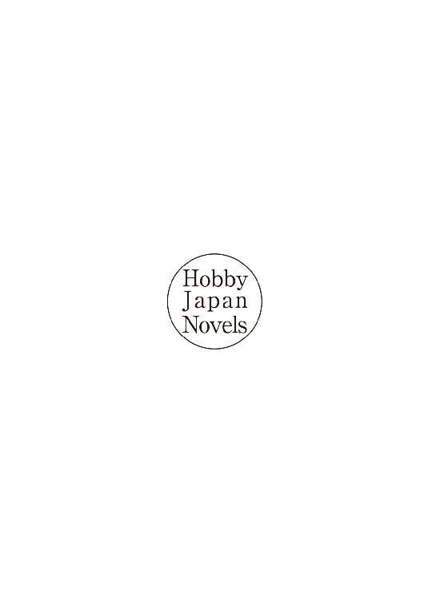
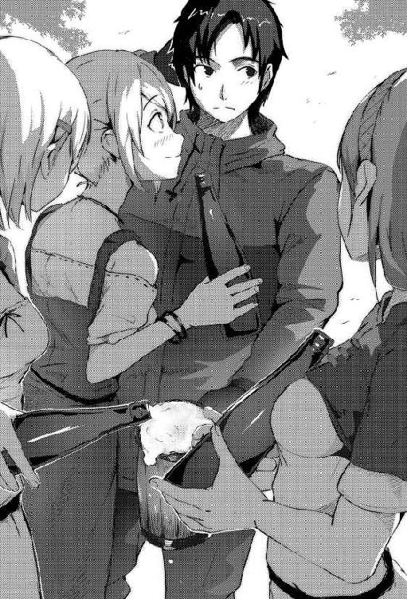

| 普通のおっさんだけど、神さまからもらった能力で異世界を旅してくる。 疲れたら転移魔法で自宅に帰る。 普通のおっさんだけど、神さまからもらった能力で異世界を旅してくる。疲れたら転移魔法で自宅に帰る。 (HJ NOVELS) | |
| 霜月緋色 | |
| ホビージャパン (2016) | |

目次
プロローグ
「......見つけたぞ。ドラゴン」
探していた標的をやっとこさ見つけた俺は、ひとりそう呟いた。
二十年前、ヒドラの群れに滅ばされたという廃鉱の街。その街の中心で、俺の標的であるレッサードラゴンは優雅にもお昼寝の真っ最中。
「準備は......よし。バッチリだな」
俺は用意したアイテムの数々を確認したあと、それらを抱えてそろりそろりとドラゴンに近づいていく。
この廃墟となった街にドラゴンが住み着いたのは、三ヶ月ほど前のことらしい。
廃墟にモンスターが住み着くのはよくあることで、たいていの場合は近づかないかぎり害はないそうだ。ただ、今回は違った。ドラゴンは廃墟を拠点とし、近くにある村々を襲いはじめたのだ。
最初は狩人が。次に家畜が。そして村人が襲われはじめ、ついに村長が冒険者ギルドに依頼をだした。
レッサードラゴンの、討伐依頼を。
下位とはいえ相手はドラゴン。そんじょそこらの冒険者がなんとかできるような相手じゃない。
何組もの冒険者パーティが盛大にスルーするなか、俺は親しいギルドの受付嬢に泣きつかれ、渋々依頼を受けるハメになったのだ。
「おきるなよー......」
ドラゴンはもう目の前で、絶賛スヤスヤ中だ。
俺は荷物から『ロケット花火』を取りだし、導火線に火をつける。
「あっ、そーれい！」
牛乳瓶に山ほどつめたロケット花火が火を噴き、ドラゴンに向かって次々と飛んでいく。なんだか寝起きドッキリみたいな光景だ。
弾ける火薬。目覚めるドラゴン。
ドラゴンのまぶたが煩わしそうに開かれ、爬虫類特有の有鱗目が俺を捉えるのがわかった。
「ドラゴンびびってるっ！ ヘイヘイヘイ！ ドラゴンびびってるっ！ ヘイヘイヘーイ!!」
手を叩き、腰をくねくねしながら挑発していると、
『グガァァァ――......』
俺の行動にイラッときたのか、ドラゴンが口を開けて大きく息を吸い込みはじめた。
「おいおい、いきなり火を吐くつもりかよ。ま、いいけどね」
多くの冒険者が討伐をスルーする最大の理由であり、生まれながらに備わったドラゴンの強力な武器である『炎のブレス』。
炎のブレスは一度噴かれれば広範囲に広がり、ありとあらゆるものを焼き尽くすそうだ。
『グガァァァァァァァッ!!』
ドラゴンの口内に炎がチラチラ見え隠れ。あと数秒もしないうちに、炎のブレスは俺に向けて全力放射されるだろう。
でも――
「いまだっ！ どっせーーーーいッ!!」
俺はそれを待っていたのだ。
肉体強化の魔法を使い身体能力を劇的に向上させ、抱えていたアイテムを全力投球。
俺の投擲したアイテムは、見事ドラゴンのお口にストライク。
「よっしゃ！」
瞬間――
ズドンッ!!
周囲に爆発音が響き渡り、ドラゴンが地響きをたてながらゆっくりと崩れ落ちる。
「ふぅ、一発撃破......かな？ 釘入りのガスボンベはさぞ痛かろう」
俺がぶん投げたのは、お値段役二万円の一〇キロガスボンベ。
そのガスボンベが、炎のブレスに引火して大爆発を引き起こしたのだ。
しかも爆発時の威力を高めるため、釘やら手球やらナイフやらと、とにかくデンジャーな物をいっぱい箱につめてガスボンベにくっつけておいた。爆発した瞬間はクレイモア地雷よろしく、デンジャーな物の数々がデンジャーな吹っ飛び方をしたことだろう。
体が硬い鱗に覆われていても口の中はそうはいかない。外がダメなら内側から攻めるのは基本中の基本だ。
しかし、今回に限っては、
「うへぇ......やりすぎたかな？」
少しやりすぎたかもしれない。
ピクリともしないドラゴンに近づくと、頭部がドえらいことになっていた。
「これで依頼は達成っと。二万円と少々の出費で金貨一〇〇枚の収入なら、そう悪くもないか」
それにドラゴンの素材は、かなりお高く売れるそうだしね。
俺が異世界ゼフィーネにくるようになって、そろそろ一年。なんだかんだで俺も冒険者らしくなってきた気がする。
「ふっふ～ん」
ドラゴンの素材を剥ぎはじめた俺は、一年前にこの世界、ゼフィーネにきたときのことを思いだすのだった。
第一話 冒険開始！ 異世界に落ちたおっさん
「ここが......異世界」
そう呟いた俺は顔をあげ、夜空を見上げる。
日本とは違い、人工的な光が存在しないからか、頭上には満天の星々が広がっていた。
「凄い。月が......三つもある」
誰の目にも明らかな、地球との決定的な違い。
俺は自分の口元が緩むのを感じながらネクタイを外し、ジャケットを脱ぐ。その瞬間、言葉では言い表せないほどの解放感が全身を包み込んだ。
――俺は、本当に異世界に来たんだな。
事の起こりは、ほんの数分前のことだ。
仕事から帰宅し自宅のソファに腰をおろした俺は、ふと気がつくと真っ白な空間にいた。そして目の前には人の形をした光り輝く『神さま』がいたのだ。
なぜ神とわかったかというと、本人がそう名乗ったからだ。
『我は神。近江正樹よ、いまからお主を異世界ゼフィーネへと送る』
なんの状況説明もないまま、俺はそう一方的に言われてしまった。
なんでも、普通のおっさんである俺を異世界に転移させ、『暇つぶし』として眺めるつもりだったらしい。
もちろん大反対した。
「ちょ、ちょっと待ってくださいよ。なんですか急に!? か、勝手に決めないでくださいよ！」
『お主の意見は聞いていない。神である我がそう決めたのだ。もはや覆らぬ』
「そんなぁ......。くっ、せめて......せめてチート能力ぐらいは貰えたりはするんですよね？」
『そんなものはない。甘えるな人の子よ。お主はその身ひとつでゼフィーネへと旅立つのだ』
さすがは神さま。三十路を越えた俺をこうも簡単にあしらうとは。
でも――ここで引きさがってなるものか！
「なんの能力もなしですって？ へへ......神さま、これを見ても、まだそう言ってられますかね？」
『ほう？ 神である我に、いったいなにを見せようというのだ、人の子よ』
神さまの視線が注がれるのを感じる。俺は地面にゆっくりと両手両膝をつき、額をこすりつけた。
「お願いします！ なにか『力』を下さい神さま！」
土下座。
自分で言うのもなんだけど、人生屈指ともいえる完璧な土下座だった。取引先のお偉いさんにやらかしちゃったあの時だって、ここまできれいな土下座はできなかったはずだ。
たぶん、神に弄ばれようとしている危機感から、全身全霊でもって土下座できたからだと思う。
『ほう......』
神さまから反応が返ってくるのに、けっこーな時間がかかった。
『近頃は神でありながら人間に土下座する惰弱な神も多いと聞くが......お主は己の分を弁えておるようだな。素晴らしいぞ人の子よ。お主のように神を敬う心こそ、正しき人の姿』
「ありがとうございます！」
『もうよい。面をあげよ』
「いいえ！ 神さまから贈り物――チート能力を頂くまでは、顔をあげることはできません！」
『だから、もうよいと言っておるのだ』
「......え？ じゃ、じゃあ......」
『うむ。完璧なる土下座に免じ、お主の望む力を与えてやろう』
大仰に頷いた神さまは、両手を広げて言う。
『さあ、望む力を言え』
俺は一筋の希望を勝ち取ることができたのだ。土下座の力で。
「えと......俺――僕がこれから送られる世界は、どんなとこなんですか？」
『剣と魔法の世界である』
「じゃあ......やっぱりモンスターとかもいるんですよね？」
『然り』
「そっか......そうですね。なら、モンスターと戦えるだけの力や魔法があると助かります」
『良いだろう』
神さまの手から光の玉が生まれ、俺の体に吸い込まれていく。
「ありがとうございます！ あ、向こうの世界って、言葉も違ったりします......よね？ まずいなぁ......」
『心配するな。他言語を話せるようにしておこう。読み書きもな』
「ありがとうございます！ ああっ!! 向こうにしかないウィルスとか病気ってあるんですか？ かかったら簡単に死んじゃうんだろうな......。イチコロなんだろうな......」
『......各種耐性に治癒能力も高めておいてやろう』
「ありがとうございます！ あとそのっ、実は最近うす毛に悩んでまして......」
『フサフサにしてやる！』
「ありがとうございます！ ああっ!? そーいえば僕、超寂しがり屋さんなんでホームシックになっちゃったらどーしよう......」
『ええーい！ いつでも戻って来れるように転移魔法も使えるようにしておいてやる!! ......それでよいな？』
「はい！ ありがとうございます！ ええっと、あとですね――――......」
とまあ、こんな感じに神さまから様々な贈り物をいただいたのだった。
『はぁ、はぁ......も、もうよいか？』
「そ、そうですね......もう十分だと思います」
『では......そろそろ送るぞ？』
「はい！ お願いします！」
『よいか、お主には多くの力を授けたが、その力は己で伸ばさねば成長せぬからな。肝に銘じておくがよい。では......ゆけい！』
こうして、俺は異世界ゼフィーネへと送られたのだ。
「さてっと」
いま俺は、なだらかな丘にひとり立っている。
ジャケットを肩にかけ、時折吹き抜ける心地よい風に身を委ねていた俺は――
「今日は疲れたからもう寝るか」
転移魔法を起動し、とりあえず錦糸町にある自宅に帰ることにしたのだった。
それから数日後。
やっとこさ異世界ゼフィーネに旅立つ準備が整った。
会社にたまっていた有給休暇を申請し、アウトドアショップで各種道具も揃え、ホームセンターでは武器代わりのスコップも購入済み。
現在の時刻は朝の七時。社畜ゆえに六時起きに慣れてしまった体に、この時ばかりは感謝した。
「よし！ 行くか」
俺は一度気合を入れてから、転移魔法を起動する。
目の前に直径一メートルほどの魔方陣が現れその中心に飛びこむと、体が光に包まれて一瞬で俺は草原へと転移していた。
「きたぞ異世界！」
営業の合間や帰宅後に何度か転移魔法を使ってみたけど、それで分かったことがふたつある。
まずひとつは、転移魔法は日に二回しか使えない、ということ。
これはきっと俺の魔力量――『マジックポイント』に関係しているんだと思う。今後の成長レベルアップによっては使える回数が増えるのかもしれない。
そしてふたつめが、前回転移した場所にしか転移できない、ということだ。つまり、自宅から転移魔法でゼフィーネにきて、再び転移魔法で日本に戻った場合、転移先が自宅に固定されているのだ。逆もまた然り。
レベルアップしたら、転移する場所を選べるようになるといいなー。
「さて......まずは進んでみるか」
周囲は草原。しかも山に囲まれていて建物はおろか人の気配すらない。俺はとりあえず、向こうの方に見える一番低い山を目指すことにした。
営業の仕事についているから、歩くことには慣れている。それでも山のふもとに着くまで二時間ぐらいかかった。
休憩を挟んでから山へと入る。
若いころは登山が趣味でよく山に登っていたけれど、それはあくまでも登山道だったからだ。
「うひー。こりゃ想像以上にしんどいぞ」
いま俺が登っている山に道らしい道はなく、せいぜい獣道があるぐらい。
「鉈でも買っとくんだったなぁー」
細い枝やよく分からない植物のツルを手で払いながら登っていくと、後ろから「ガサガサ」と音がした。
「な、なんだ!?」
慌ててふり返る。音はどんどん近づいてくる。
「ま、まさか......モンスターか!?」
考えてみればここは山の中。ファンタジー世界ではお約束のモンスターが出てもおかしくはない。
「くっ、くるならこい！」
俺は背中にさしてたスコップ抜き正眼に構え、音の正体に備える。
すぐに茂みの中から、一抱えはありそうな影が飛び出してきた。
「うわぁぁぁぁぁ！」
スコップをめちゃくちゃに振るう......が、当たらない。影は俺から少し離れた場所に着地する。
目を凝らして見ると、それは額から一本の角を生やした大きなウサギだった。角を俺に向け、ドスドスと地面を踏み叩いている。
「うへ～......ホーンラビットってやつか？ あの角に刺されたら痛そうだ」
俺はジャマな荷物をわきに置く。スコップはホーンラビットに向けたままだ。
そして――激闘ははじまった。
「ふおっ！ はぁっ！ よっと！」
ホーンラビットの突撃を俺は紙一重で避けていく。
突撃を避け、ホーンラビットが方向転換するたびにスコップを叩きこむチャンスがあるんだけど、それをしないのにはわけがある。
「くっそ、コイツ......モフモフしやがって。卑怯だぞ！」
俺は、モフモフした動物が大好きなのだ。犬や猫は当然として、ウサギなんかもかなりヤバイ。
こんなにも愛くるしい生き物にスコップを叩きこむなんて、俺にできるわけがなかったのだ。
「しかたがない......こっからはガマン比べといこうか！」
ウサちゃんが諦めて去っていくまで......避け続けてみせるさ！
俺がそう決意し、スコップを投げ捨てた瞬間だった。
「動くな！」
と何者かに呼びかけられ、どこからか飛んできた矢がウサちゃんに突き刺さる。
『ぷーッ!?』
クリティカルヒット。
ウサちゃんは可愛らしい鳴き声を残して息絶えてしまった。
「危ないところだったな」
少し離れた場所から声をかけられてそっちの方を向くと、そこには三十ぐらいのおじさんが立っていた。手には弓を持っているところを見ると狩人なのかもしれない。
体格はかなりよく、顔は髭面。頬に大きな傷がある。
俺はとりあえず、
「あ、ありがとうございました。おかげで助かりました」
男のひとにお礼を言って頭をさげる。
「いいってことよ。お前がそいつを引きつけてくれたおかげで、オレも仕留めることができたからな」
男のひとはそう言って笑うと、ウサちゃんに刺さった矢を引っこ抜く。
「しかしお前、ここらじゃ見かけない格好してんな。旅人か？」
俺の服装アウトドアスタイルを見た男のひとが、不思議そうな顔をする。
こっちの世界のひとにとって俺は異世界人なんだから、その疑問は当然のこと。でも、その質問はすでに何度もシミュレーション済みなんだぜ。
「実は......頭を打ったみたいで何も思いだせないんです......」
俺はなるたけ暗い表情をつくってそう言う。
「おいおい大丈夫か？ 他にいてーところはないか？」
「はい。痛いのは頭だけなんで」
ウソをついた手前、ちょっとだけ心も痛いけどね。
「そうか......」
男のひとが心配そうに俺の顔を覗き込んでくる。
どうやらこのひとは良いひとみたいだな。
「じゃあなんだ？ どこから来てなんでここにいるかも忘れちまったのか？」
「......はい」
「自分の名前もか？」
「あ、それは憶えてます！」
俺は男のひとに向き直ると、胸に手を置いて自分の名前を伝える。
「正樹っていいます。近江正樹」
「ふーん。マサキか。変わった名前だな。オレはムロンってんだ。ムロン・ドーリアン。見ての通り狩人をやっている」
男のひと改め、ムロンさんはそう名乗ると、持っている弓を振って笑った。
「じゃあマサキよ、お前さん行くあてでもあんのか？」
「いえ......ありません」
「......そっか。まー、そう暗い顔すんなって。そのうち思いだすだろうよ。行くあてがないならちょうどいい。こいつを運ぶの手伝ってくれ。礼代わりにオレの家に泊めてやるからよ」
ムロンさんはそう言って俺の背中を叩きながら、「がはは」と笑う。
こうして異世界初日のこの日は、ムロンさんの家に泊めてもらえることになったのだった。
「おーい。帰ったぞー」
ムロンさんが手を振る先には、きれいな女性が立っていた。
「おかえりなさい、あなた」
「ただいまイザベラ。今日は客を連れてきたぞ」
「お客......さま？」
「ああ、こいつはマサキ。ホーンラビットに襲われてたところをオレが弓で助けてやったんだ！ なあ？」
ムロンさんはそう言って笑うと、俺の背中をドンと叩く。そこではじめてイザベラさんは俺の存在に気づいたみたいだ。
でもそれも仕方がないよね。なんせムロンさんは体格がいいから、後ろについて歩いていた俺はすっかり隠れてしまっていたのだ。
「はじめまして、イザベラさん。ムロンさんに助けていただいた正樹といいます」
「あらあら、これははじめまして。妻のイザベラです」
優しそうに微笑むイザベラさん。
おっとりしたひとだな。俺もこんな嫁さんが欲しかった。
前に一度だけ街コンに参加したことがあったけど、ボストロールみたいな女性しかいなかったからなぁ。
「見てみろイザベラ！ このホーンラビットを！」
そう言ってムロンさんがホーンラビットを掲げてみせる。
「こんなに大きいホーンラビットははじめて見ましたわ！」
「そうだろ？ マサキのおかげだぜ。こいつの毛皮を売ればひと月は楽に暮らしていけるってもんよ！」
「うふふ。あなたったらはしゃいじゃって。マサキさんが見てますよ」
「狩人が獲物を誇ってなにが悪い！ マサキ、お前もそう思うだろ？」
ムロンさんは豪快に笑いながら俺の肩に腕を回してきた。
己の腕だけで生活しているんだ。しとめた獲物を誇るのは当然のこと。
だから俺は、
「ははは、まったくです」
と相槌をうっておいた。
「ところでマサキさんは旅人なのかしら？ 見たこともない服を着ているようですけど......」
「それがですねー。なんと言いますか......」
「マサキは頭をぶつけたらしくてな、記憶がなくなっちまってんだとよ。自分の名前しかわからないそうだぜ」
俺が言い淀んでいると、代わりにムロンさんが説明してくれた。
「まあ」
「だからよ、しばらくはうちで面倒みてやろうぜ。ほれ、物置に使ってた部屋を片づけりゃあ寝る場所ぐらい作れっだろ」
「そ、そんな、申し訳ないですよ！」
「いいってことよ。お前がいい囮になってくれたおかげでこんな大物を仕留められたんだからな。しっかし......あん時のお前はすごい顔してたな。イザベラ、マサキのヤツこんな顔してたんだぜ、こんな」
ムロンさんが俺の顔真似をして、またまた豪快に笑う。イザベラさんも口に手をあてながら、上品に笑っていた。ホント、この夫婦は仲がいいんだな。
ムロンさんが笑いながら俺の背中をバシバシ叩いていると、家の扉が開いて中から小さな女の子が顔をだした。
赤みがかった茶色い髪をツインテールにして、パッチリした大きな目が魅力的な、とても可愛らしい子だ。
「おかーさん、おとーさん帰ってきたの？」
「おおっ！ 可愛いオレのリリアよ！ お父さんは帰ってきたぞ！ ほら、見てみろこのホーンラビットを！」
「うわー！ おっきー！」
「そうだろう？ お父さんが一撃で仕留めたんだぜ」
「おとーさんすごーい！」
リリアと呼ばれた少女が、ムロンさんのまわりをぴょんぴょん飛び跳ねる。
「おっと、そうだリリア、コイツはマサキ。しばらく家で面倒みるから仲良くするんだぞ。マサキ、オレの娘のリリアだ。手ぇだしたら容赦しねぇからな。がはははは！」
イザベラさんには顔立ちが似てるけど、ムロンさんにはまったく似てないな。まあ、しいてあげるなら元気なところが似てるかも。
「はじめましてリリアちゃん。マサキっていいます」
「リリアです！」
「リリアちゃんはいくつなのかな？」
「ごさい！」
元気いっぱいの笑顔と一緒に、パーに開いた手のひらが向けられる。
しっかし、五歳かぁ。俺もこれぐらいの子供がいてもおかしくはない歳なんだよな。そろそろ婚活とかしたほうがいいのかな？ ちょっとだけムロンさんが羨ましい。
「はいはい。じゃあちょっと早いけどお昼にしましょうか。あなたは物置を片してちょうだい。それとマサキさん、」
「は、はい！」
「リリアの相手をしてもらってもいいですか？ リリア、ご飯ができるまでマサキお兄ちゃんに遊んでもらいなさい」
「はーい！」
「よろしくね、リリアちゃん」
「うん！」
にっこり笑って手を差しだすと、リリアちゃんは俺の手を握りぶんぶんと勢いよく上下に振る。
なんというか、リリアちゃんの顔からはもう元気があふれ出まくっていた。
「マサキお兄ちゃん、なにして遊ぶ？」
俺はリリアちゃんに手を引かれ、裏庭へと連れてこられていた。
「そうだなぁ......リリアちゃんはいつもどんな遊びしてるの？」
「リリアね、虫つかまえたりしてるよ！ こんなふうに」
リリアちゃんはそう言うと、足元にあった大きめの石を両手でごろんとひっくり返す。
石の下に隠れていた色んな虫がぴょんぴょんワサワサ逃げ出していくなか、そのなかの一匹をむんずと捕まえる。
「ほら！」
「ひぃっ」
リリアちゃんが捕まえたワサワサする虫を向けられた俺は、小さく悲鳴をあげてあとずさる。
「ほら、ほら！ マサキお兄ちゃんほらっ！」
「ちょっ、やめ――やめなさいっ」
「ほらほら！ ほらー！」
脚の数が多い虫が苦手な俺は、リリアちゃんが一歩近づけば二歩下がりを繰り返す。
そんな俺が面白かったのか、リリアちゃんはワサワサする虫を持ったまま俺を追いかけはじめた。
「まてー！」
「ひぇー！」
そして、いつの間にか追いかけっこがはじまっていた。
「まてまてー！」
「くっ、速い」
山奥で暮らしているからかリリアちゃんはとても足が速く、しかも息も切らせず追ってくる。都会のもやしっ子に見習わせたいほどだ。だが、俺を舐めないでもらいたい。
俺はこっちにくるまえに神さまからチート能力をもらっているんだからね。
「肉体強化、発動！」
身体中に力がみなぎり、走る速度が一気に増す。
「うわー!? マサキお兄ちゃん、はやーい！」
「どーだ、おそれいったか！」
大きめの岩にとび乗り、腰に手をあてて高笑いする俺。
「すごいすごーい！ マサキお兄ちゃん走るのはやいんだね！」
「まあ、それほどでもあるかな」
異世界にきて、はじめてチート能力を使った相手が幼い少女だということは、この際忘れておこう。
このあと、俺はリリアちゃんと木登りしたり、花を摘んだりして一緒に遊んだ。
気を抜くとリリアちゃんが虫を服の中に入れてくるもんだから、そのたんびに悲鳴をあげるはめになったけどね。でも、そのおかげで俺はリリアちゃんとすっごく仲がよくなった。ムロンさんが俺たちを呼びにきた時、軽く嫉妬していたほどだ。
「さあ、ご飯にしましょう」
「リリアお腹ペコペコだよぉ」
「うわー、美味しそうですね」
テーブルのうえには、肉料理を中心にいくつもの料理が並んでいる。
「おいマサキ、『美味しそう』じゃねぇ。イザベラの料理は美味しいんだ」
「おっと、これは失礼しました」
「もう、あなたったら。はいマサキさん、どうぞ召し上がれ」
「ありがとうございます」
俺はイザベラさんからスープを受け取り、テーブルに置くと、両手を合わせて、
「いただきます！」
と言った。その瞬間、みんなポカン。リリアちゃんもポカン。
「なんでぇマサキ、その『イタダキマス』ってやつは？」
「あ、えっと、これはですねぇ......」
しまった。いつもの癖で「いただきます」って言っちゃった。あまりにも美味しそうだったから、記憶喪失設定なのを忘れてた。
さて、どうごまかすか......。
「マサキお兄ちゃん、イタダキマスってなにー？」
ムロンさんもイザベラさんもリリアちゃんまで、不思議そうな顔を俺に向けている。
「いただきますっていうのはね、食べ物になってくれた動物や植物にありがとう、って伝える祈りの言葉なんだよ。......たぶん」
「『たぶん』？ どーゆーことだマサキ」
「いやあ、なんか急に頭に浮かんだんですよね。俺の故郷の国になにか関係があるのかな？」
「まあ、ひょっとしたらマサキさんの記憶の手掛かりになるかもしれませんね」
イザベラさんの言葉を聞いて、ムロンさんが考え込む。
「うーん。オレは知らねぇな。でもイザベラの言う通り、手掛かりになるかもしれねぇ。おいマサキ、他にはなにか思いだせないか？」
「あいにくと、他はさっぱりでして」
「......そっか。まあ、いつか思いだすだろ」
「そうですよマサキさん。前向きに考えましょ。それより、その『イタダキマス』って良い言葉ですね。わたしも言っていいですか？」
「確かにいい響きだな。おいマサキ、オレにも祈らせろ。食べ物に感謝するなんてよ、狩人のオレにぴったりじゃねぇか」
「リリアも！ リリアもいいたい！」
「ははは、じゃあみんなで言おうか」
俺たち四人は一緒に手を合わせ、唱和する。
「「「「いただきます」」」」
家の裏にある畑で採れた野菜と香草がふんだんに使われた料理は、どれもとても美味しかった。
第二話 リリアの危機！ ジャイアントビーふたたび
翌日、ムロンさんが用意してくれたベッドで寝ていた俺は、窓から差し込む日差しで目が覚めた。
「うーん......っと。毛皮って肌触りいいんだなぁ......って、アレ？」
大きく伸びをしていると、腰の辺りに柔らかい何かがあたる。
「すー......すー......」
毛皮をめくって見てみると、そこには丸くなったリリアちゃんが可愛らしい寝息をたてているじゃありませんか。
きっと俺が寝ている間にベッドに忍び込んできたに違いない。
「リリアちゃん、リリアちゃんってば、起きて」
「んー......」
優しく体を揺すっていると、リリアちゃんがうっすらと目を開けた。
「おはよ、リリアちゃん」
「......おはよーマサキお兄ちゃん」
寝ぼけているのか、目がしょぼしょぼしている。
「いつの間にベッドに忍び込んだの？」
「んとねー、リリアねー、おとーさんとおかーさんがねてからきたのー」
「ダメだよ。リリアちゃんが急にいなくなったら、ムロンさんたちが心配しちゃうよ」
「えー、でもマサキお兄ちゃんひとりでねてるからかわいそーだったんだもん。おとーさんはおかーさんとねてるからさびしくないでしょ？ だからリリアはマサキお兄ちゃんといっしょにねてあげたの」
あらやだ、この子ちょー優しい。
お小遣いをせびってくるだけの甥っ子とはえらい違いだぞ。
「そっか。ありがとねリリアちゃん」
「へへー」
リリアちゃんの頭をなでなでしていると、廊下から慌てたような足音が近づいてきて勢いよく扉が開かれた。
「たたた、大変だマサキ！ リリアがいなく.....................おい、マサキ」
「な、なんでしょう？」
「なんでリリアがここにいるんだ？」
「え、えと、それはです――」
「おとーさん、リリアね、マサキお兄ちゃんといっしょにねたんだよー」
「ほう......マサキ、ちょいとおもてに出ようか。じっくりと話を聞かせてくれや」
ボキボキと指を鳴らすムロンさんに首根っこを掴まれた俺は、ずるずる引きずられて裏庭へと連れて行かれてしまう。
このあと、イザベラさんが仲裁に入って誤解が解けるまでの間、ずっとムロンさんは鬼の形相をしていたのだった。
「がははは！ さっきは悪かったな」
「もう、ムロンさんちょー怖かったんですからね」
「そう言うなよ。村に着いたら酒場で一杯奢ってやるからよ」
いま俺はムロンさんと一緒に村を目指して歩いている。ムロンさんが仕留めた獣の毛皮や肉などを村で売るためだ。
「でもすまねぇな。手伝ってもらっちまってよ」
「気にしないでください。泊めてもらったお礼ぐらいしたいですからね」
そして俺は、泊めてもらったお礼がてら、荷物運びを手伝っている真っ最中であった。
「そうかいそうかい。村に下りるのは久しぶりだからな。いろいろ買いこまなきゃならねぇ。マサキ、帰りも頼むぜ」
「はいはい。ムロンさんには一宿一飯の恩がありますからね。帰りも荷物持たせてもらいますよ」
「がはは！ ホーンラビットから命を救った恩人ってことも忘れるなよ」
ムロンさんは豪快に笑い、バシバシ肩を叩いてくる。
「村にはよく行くんですか？」
「ん？ 村か、前は七日に一度は下りてたんだがな......。今日は二十日ぶりだ」
「へー。なんでまた？」
「むぅ......実はな、最近なんでか獲物の数が減っちまっていてよ、オレたち家族の分はなんとか獲れていたんだが......村へまわすほどの余裕はなかったんだ」
「獲物の数、ですか。時季的なものなんですかね？」
「いいや、毎年いまぐらいの季節は獣が活発になるからな。獲物に困ることなんざ、これまで一度もなかった」
いまの季節は、日本でいうところの初夏にあたる。当然ありとあらゆる生物が活動的になり、ムロンさんの標的となる獣もたくさんいなくてはおかしいそうなんだけど......なんでか今年にかぎって獣の数が激減しているのだとか。
ムロンさんは笑っているけれど、狩人としては死活問題に違いない。
「ホーンラビット、高く売れるといいですね」
ムロンさんの話を聞いた俺は、真面目な顔をしてそう言う。
「......ああ。そうだな」
俺の言葉に、ムロンさんは深く頷く。
それから歩くこと一時間。俺たちはやっと村へと到着した。
「着いたぞマサキ。ここがファスト村だ」
「ほえー。のどかでいい村ですねー」
辺りを見回すと、畑仕事をしてるひとや、草を食べてる牛の姿が見える。
木造の民家がぽつんぽつんと点在し、広場のようなところでは子供たちが元気に走り回っていた。
「マサキ、ついてきてくれ。まずは道具屋に毛皮を売る。そのあとは肉を売り歩くぞ」
「はーい」
ムロンさんに言われるがままに、俺は荷物を運んでいくのだった。
「ふいー。マサキ、ごくろーさん。仕事後の一杯といこうぜ」
ムロンさんと俺の手には木製のジョッキが握られていて、中にはビールみたいなお酒がなみなみと注がれている。
「いやー、お疲れさまでした」
「んじゃ、乾杯だ！」
「乾杯！」
俺はムロンさんとジョッキをぶつけあってからお酒を一口飲む。
予想はしていたけれど、生ぬるくてあまり美味しくはなかった。
「仕事後の一杯はうまいな！ ......ん？ なんだマサキ、麦酒は苦手か？」
微妙な顔をしている俺とは対照的に、ムロンさんは満面の笑みでガブガブ飲んでいる。
「いや、そ、そんなことはないですよ」
「がっはっは、ムリすんな。顔に『うまくない』って書いてあるぞ。エールも飲めないなんてマサキはまだまだガキだな」
「ははは......。そうかもしれないですね」
愛想笑いを浮かべ、適当に相槌をうっておく。
ムロンさんはエールを飲めて上機嫌なのか、終始笑っていた。
「おう、ムロンじゃねぇか」
酒場の扉が開き、顔を土で汚した男のひとが入ってきた。
農夫なのか、よく見れば顔だけじゃなく服も土で汚れている。
「なんでぇ、ジャルムか。久しぶりだな。さっきお前のかみさんに肉を売ったとこだぜ」
「そりゃありがとよ。座っていいか？」
「おう。座れ座れ。こいつはマサキ。うちの客人だ」
「ムロンに客とは珍しいな。おれはジャルム。よろしくなマサキ」
「よろしくです、ジャルムさん」
運ばれてきたエールを手に持ったジャルムさんと、ジョッキを打ち合わす。
「ところでムロン、お前のとこも被害は出てるか？」
「......『被害』？ なんのことだ？」
「ジャイアントビーだよ。ジャイアントビー！ 最近このあたりにジャイアントビーが出やがったんだ」
「なんだってっ!?」
ムロンさんは驚いた顔をして、身を乗り出す。
「その話は本当かっ!?」
「ふう......。その顔を見ると知らなかったみたいだな。ディルンのとこの羊とラックルんとこの豚が何頭かやられちまった。......村長の話じゃ、丘向こうの道で巡礼者が死んでたそうだぜ。体に何個も穴をあけられてな」
「そんなことが......。そうか、だから獣の数が減っていたんだな」
「そういやお前が山をおりてくるのは久しぶりだったな」
「ああ。獣の数がめっきり減っちまってな。ここ最近、ろくすっぽ獲れてなかったんだ」
「お前ほどの狩人が獲物を獲れないとすると......ジャイアントビーの巣は山の中にあるのかもしれねぇな」
「なっ!?」
ジャルムさんの話を聞き、ムロンさんの顔色が変わる。
真っ青になったムロンさんは俺に顔を向け、震えた声で言葉を絞りだす。
「......ま、まずいぞマサキ。この話が本当なら......イザベラとリリアが危ない」
酒場を出た俺とムロンさんはすぐに村を出た。
「イザベラ、リリア......。頼む......無事でいてくれ」
そう呟くムロンさんの横顔からは必死さが伝わり、俺の胸が痛くなったほどだ。
「急ぎましょう、ムロンさん」
「ああ」
ムロンさんから聞いた話によると、ジャイアントビーは一抱えもあるほどの大きな蜂のモンスターであり、非常に攻撃的。このモンスターの恐ろしいところは雑食で羊や豚などの家畜はもちろん、人間の子どもにまで襲いかかり、巣へ持ち帰って食糧としてしまうそうだ。
針や外骨格、体内にある毒袋なんかは素材として高く売れるらしいんだけど、巣には少なくとも数百匹はいるから冒険者ギルドに依頼しても避けられることが多く、なかなか受注してもらえないらしい。
けっきょく、冬になってジャイアントビーが活動を終えるまで耐え忍ぶしかない方法はない、と村の人たちは言っていた。
「ふぅ、ふぅ」
ムロンさんは無言のまま山道を駆けのぼっていく。
俺は肉体強化を使っているからなんとかついていけるけど、普通のひとだったらとっくに置いていかれていたことだろう。
イザベラさんとリリアちゃんのふたりと合流したあと、ムロンさん一家は村に避難することになっている。ジャイアントビーの巣が、ムロンさんの狩場である山の中にある可能性が高いからだ。
「マサキよう、」
「なんです？」
「リリアは......リリアは山で遊ぶのが好きなんだ。もしジャイアントビーに襲われちまったら......オレは......オレは......」
「リリアちゃんは賢い子です。きっと大丈夫ですよ」
「......そうだな。すまねぇ、泣き言を言っちまった」
「親なんだから当然です。リリアちゃんはあんなにも可愛いんですからね。リリアちゃんみたいな子が子供だったら誰だって心配しますよ。それより急ぎましょう！」
「走るぞ。ついてこれるか？ まあ、ついてこれなくても置いていくけどな」
「俺は余裕ですよ。ムロンさんこそゆっくりしてると置いていきますからね」
「へっ、言うじゃねぇか！ よし、ついてこい！」
俺たちは息を切らしながら山を登る。
汗をダラダラ流しながら走ったかいもあり、下山よりも速い時間でムロンさん宅へとたどり着くことができた。
「イザベラ！ イザベラいるかっ？」
ムロンさんが家の扉を強く叩く。返事は家の裏からした。
「あらあら、どうしたのあなた？ そんなに大声をだして」
どうやらイザベラさんは裏庭で畑仕事をしていたらしい。
手についた土を払いながらこっちに近づいてきた。
「イザベラ......良かった。無事だったんだな」
「どうしたのあなた、そんな顔し――きゃあ」
急に抱きつかれたイザベラさんが、顔を赤くする。
でもムロンさんはお構いなしに「よかった、よかった」と呟きながら強く抱きしめていた。
「イザベラさん、リリアちゃんはどこにいます？」
「そうだ......リリア、リリアはどこにいるんだ？」
「......なにかあったんですか？」
真剣な表情の俺とムロンさんを見て、イザベラさんがそう訊いてくる。
「イザベラ、ジャイアントビーが出たんだ。巣が......この山にあるかもしれない」
ムロンさんがそう言った瞬間、イザベラさんは目を大きく見開いた。
「ジャイアントビーですって......そんな......うそ......」
「落ちつけ、それでリリアはどこにいるんだ？」
「リリアは......さっき森の中に......」
「なんだってっ!?」
イザベラさんの言葉を聞き、ムロンさんが顔を青くする。最悪な展開だ。
ジャイアントビーが飛び回る森の中に、リリアちゃんはひとりでいる。
小さいリリアちゃんのことだ。もしジャイアントビーに見つかったらすぐに捕まり、巣へと運ばれてしまうことだろう。ジャイアントビーの......餌として。
「なんてこった......」
ムロンさんが膝から崩れ落ちる。
「そんな......リリア......神さま......お願い......」
イザベラさんは手で口を覆いながら、体を震わせ涙を流す。
ふたりは茫然自失。あまりのショックで思考が停止してしまっているみたいだ。
ここは俺がなんとかしないと。
「ムロンさん、しっかりしてください！」
「......マサキ」
「リリアちゃんがジャイアントビーに捕まったとは限らないでしょう。まだ日は高いんだ。捜しにいきましょう。俺も手伝いますから！」
「そうだ......ああ、そうだな！」
立ち上がったムロンさんは、イザベラさんの肩に手を置く。
「オレはマサキとリリアを探してくる。イザベラ、お前は家で待っていてくれ」
「そんな......わたしも探しにいきます！」
「ダメだ！ ひょっとしたら何事もなくリリアが帰ってくるかもしれない。その時だれもいなかったら、こんどはリリアがオレたちを探しにいっちまうかもしれないだろ？」
「............」
「だからイザベラ、お前は家でリリアを待っていてくれ」
「......はい」
「そんな顔するな。リリアは大丈夫だ。オレとマサキに任せろ、な？」
イザベラさんは涙をぬぐいながら、小さく頷く。
「よし。じゃあ行ってくる。家の戸は閉めておくんだぞ」
「あなた、気をつけくださいね」
「ああ！」
「それとマサキさん、」
「なんでしょう？」
「リリアを......リリアをよろしくお願いします」
「はい！」
イザベラさんに見送られ、ムロンさんは弓を、俺はスコップを持って森の中へ入っていく。
「リリアには森の奥深くに入らないよう教えてある。無事ならならそう遠くに行っていないはずだ」
「わかりました。じゃあ二手に分かれましょう。俺は右側から回ります」
「ならオレはこっちだな」
「じゃあ、またあとで」
俺はムロンさんと分かれ右に進む。ムロンさんは左からまわり、あとで合流する予定だ。
「おーい！ リリアちゃーん！ いるなら返事をしてくれー！」
......返事はない。ということはこの辺にはいないということか？
嫌な予感が頭をよぎるが、俺はそれを必死になってふり払う。
「リリアちゃーん！ リリアちゃーん！」
それでも俺は声を張り上げてリリアちゃんを捜す。
三十分ほど探したあと、俺はムロンさんと合流した。
「ど、どうだマサキ？ リリアはいたか？」
「こっちにはいませんでした。ってことは、ムロンさんも？」
「ああ......いなかった」
肩を落とすムロンさん。その顔は険しい。
「なら、もっと森の奥を捜しましょう！」
「当然オレもそのつもりだ。だけどマサキよう、お前は家に戻ってろ」
「ええっ!? なんでですか！ 俺も行きますよ！」
「いや、ダメだ」
ムロンさんは俺の肩に手を置き、静かに首を振る。
そして言い聞かせるように話しはじめた。
「いいかマサキ、夜の森にはあぶねぇ獣がたくさんいるんだ。ジャイアントビーだけじゃねぇ。大蛇にグレイウルフ、マーダーベアだって出る。ホーンラビットから逃げ回ってたお前じゃあ、どれもかなわねぇ相手ばかりだ」
「............」
ムロンさんは俺を心配して言ってくれているんだろう。とても真剣な顔をしている。
「リリアの――娘のためにお前まで巻き込めねぇんだよ。わかってくれ」
「いいえ、わかりません」
「なっ――!? いいかマサ――」
「これを見てください」
俺はムロンさんの言葉を制し、手のひらを近くの大木に向けた。
怪訝顔のムロンさんが見つめるなか、俺は魔法を放つ。
「ファイアボルト!!」
手のひらからとび出した炎の塊が木の幹にあたり、炸裂する。
「ま、魔法......だって!? マサキ、お前魔法使いだったのか？」
目を大きくしたムロンさんが、俺と焦げた幹を交互に見る。
こっそりと魔法の練習しといてよかったー。
「ええ。どうやらそうだったみたいです。魔法を使えることを思いだしたのはついさっきですけどね。でも......これで俺もリリアちゃんを探しにいっていいですよね？ ジャイアントビーが虫型モンスターなら、炎の魔法が有効なはずです」
真っすぐにムロンさんを見つめる。
そんな俺の決意に、ついにムロンさんも折れた。
「マサキ......お前ってヤツは――。すまねぇ、手を......手を貸してくれ！」
「もちろんです。さあ、いきましょう！」
「ああ。オレは山の西側に行く。マサキは東側を頼む」
「了解です！」
「いいか？ ジャイアントビーが恐ろしいのは硬い甲殻でも毒針でもない。その数だ。戦うならすぐに仕留めろ。じゃないと仲間を呼ばれちまうぞ。わかったな？」
「はい、わかりました。......ムロンさんも気をつけて」
「へっ、この森はオレは庭だ。見つかっても囲まれるようなヘマはしねぇよ。じゃあ、あとでな」
「ええ。絶対にリリアちゃんを見つけましょう」
俺はムロンさんと別れ、森の奥へと足を踏み入れた。
「肉体強化！」
能力を発動して森を駆ける。
劇的に身体能力が上昇した俺の体は、頭の中で想い描いた通りの動きができていた。
「よっ、ほっ！」
木から木に飛び移って森を進む。まるで忍者みたいだ。
「この辺りには......いないか」
木のてっぺんから周囲を見回す。
すでに日は傾きはじめ、森全体が赤く染まってきた。
夜は、もうそこまできているのだ。
「くそ、時間がないぞ」
夜になると夜行性の獣が活動をはじめるらしい。森がより危険になるのだ。
「リリアちゃん......」
俺は時々ムロンさんの家の方に視線を送る。
リリアちゃんが家に帰ってきたらイザベラさんが狼煙をあげる手はずになっているからだ。それが未だあがってないということは......やはりリリアちゃんの身になにかがあったんだろう。
これだけ探して手掛かりはゼロ。それどころかジャイアントビーの気配さえない。
ほんとにジャイアントビーがこの森にいるのだろうか？ 俺がそう疑問を抱きはじめた時だった。
「......ん？」
どこからか、「ブーン」という大きな羽音が聞こえてきたのは。
「これは......羽音。......向こうか？」
音を立てないよう気をつけ、羽音のする方に向かって走る。羽音はどんどん大きくなっていく。近い。木の陰から視線だけを音のする方へと向ける。
そこには――――
「り、リリアちゃんっ!?」
大きな蜂に捕まり、運ばれているリリアちゃんがいたのだった。
第三話 来るなら来い！ 必死の逃亡者
意識がないのかリリアちゃんはぐったりしている。
「リリアちゃん！」
ジャイアンビーに運ばれるリリアちゃんを見て俺は頭がカーッと熱くなり、気づけば駆けだしていた。
「リリアちゃんを放せ！ ファイア――」
手のひらをジャイアントビーに向け炎の魔法を放とうとして――――なんとか思いとどまる。
ダメだ。ここでファイアボルトを撃ってしまうとリリアちゃんまで燃やしてしまう。魔法という選択肢はなしだ。
「となると......」
スコップを握る手に力がこもる。
残された手は物理攻撃のみ。リリアちゃんに当てることなく、確実にジャイアントビーだけを攻撃しなくてはならない。
「――ッ!! いくぞ！」
地面を蹴って加速。
ジャイアントビーまであと五メートル......三メートル......一メートル......いまッ！
頭めがけて思い切りスコップを振り下ろす。
がっきぃぃぃぃぃんん――――......。
「な、なにぃ!?」
しかし、俺のスコップはジャイアントビーの外甲によってはじかれてしまった。
ジャイアントビーはバランスを崩したように少しだけフラフラしたけど、すぐに体勢を立て直して飛び続ける。俺には構うそぶりさえ見せやしない。
きっと、エサであるリリアちゃんを巣に運ぶことが優先されているからだ。
「俺を相手してるヒマはないってことね。なら......」
それはつまり、俺が一方的に攻撃できるということ。
魔法は使えない。スコップは外甲にはじかれた。となれば、外甲以外を攻撃するのはどうだ？
「羽なら――どうだッ！」
半透明の羽に向かってスコップを水平に振るう。
バキバキとガラスを踏み割るような音を響かせ、羽が破れ飛んでいく。
『ギィィィィィィッ!!』
俺の判断は間違っていなかった。羽を傷つけられたジャイアントビーは墜落し地面を転がる。
その衝撃でリリアちゃんも地面に投げだされた。
「リリアちゃん！ リリアちゃん！」
すぐにリリアちゃんを抱きかかえ体を揺する。しかし返事がない。
ジャイアントビーの爪にひっかかったのか、切り傷だらけの体。でも、僅かにお腹が上下に動いている。まだ息がある証拠だ。
「ヒール!!」
俺は傷口に手をあて回復魔法をかけた。
あたたかな光が傷口を覆い、ふさいでいく。
「よし！ 傷は全部治したぞ。リリアちゃん！」
それでも......反応はなかった。
「クソ！ なんでだ!? なんでなんだよぉっ！ ......まてよ、ひょっとして......毒か？」
ジャイアントビーは毒針を持っているとムロンさんは言っていたな。
もしその毒が麻痺させるような神経毒なら、反応がなくてもおかしくはない。
「キュア！」
ヒールに続いて解毒の魔法をかける。すると、やっとリリアちゃんの閉じていた目がゆっくりと開いた。
「リリアちゃん！」
「ま......マサ、キ......お、にいちゃ......ん」
「リリアちゃん！ よかった、意識が戻ったんだね」
「まさ、マサ......キ、おにい、ちゃ......リリアね、とってもこわか――」
「喋らなくていい！ それより俺に捕まってて。ここから逃げるよ！」
「う......ん」
リリアちゃんが弱々しくしがみつく。まだ痺れが残っているのか、その手は震えていた。
俺はリリアちゃんを安心させるよう優しく抱きしめ、そのまま立ち上がる。視界の端に羽を失ったジャイアントビーのもがく姿が映り込む。
『ギギギ、ガチガチガチガチガチガチガチ......』
ジャイアントビーが顎を打ち合わせ、あたりに耳障りな音が響く。それを聞いた瞬間、俺はムロンさんの言葉を思いだしていた。
――いいか？ ジャイアントビーが恐ろしいのは硬い甲殻でも毒針でもない。その数だ。戦うならすぐに仕留めろ。じゃないと仲間を呼ばれちまうぞ――
「まずい、あいつ仲間を呼んでるんだ！ くそ、ファイアボルト!!」
『ガチガチガ――ギィィィイイイッ!!』
俺の魔法でジャイアントビーは燃え上がり、かん高い鳴き声を残して焼け死んだ。
「はぁ、はぁ、はぁ............ま、間にあった......か？」
ジャイアントビーが仲間を呼びはじめてそう時間はたってないはずだ。きっとギリギリで間にあ――
「ま、マサキお兄ちゃん......」
「ん？ どうしたのリリアちゃん？」
「あ......アレ」
リリアちゃんが指さした先では『ガチガチ、ガチガチ』と顎を打ちあわせたジャイアントビーがこっちに向かってきていた。
しかも一匹だけじゃない。何匹も......こうしている間にもどんどん数を増やしながら俺たちを目指して飛んできている。
「ちっくしょう！ 間に合わなかったか！」
迎撃しようにも数が多すぎる。
俺はリリアちゃんを抱っこしたままジャイアントビーがいない方向に向かって走りだした。
「マサキお兄ちゃん、前からもきた」
「ならこっちだ！」
挟み撃ちにされないよう右に方向転換して走る。
「マサキお兄ちゃん......どんどんハチがふえてくよぉ」
後ろを振り返ると、リリアちゃんの言う通りジャイアントビーの群れは他の群れと合流して追いかけてきていた。
数えるのもバカらしいぐらいの、もの凄い数だ。
「大丈夫だ！ 俺がリリアちゃんを絶対に護るから！」
「......うん」
リリアちゃんは俺の首に腕を回ししがみつく。その手に力がこもっているのは怖いからに違いない。
「くそ、こっちからもきやがった」
森を進むとどこからともなくジャイアントビーが湧き出てくる。
そのたびに俺は違う方向へ逃げることになり、いまじゃ自分がどこを走っているのかもわからない。
「なんか......嫌な予感がするぞ」
ジャイアントビーは仲間を呼ぶばかりで、なんで襲いかかってこないんだ？
百匹近くいるのだから、囲んでしまえば捕まえるのなんて簡単なはずなのに。
「まさか......誘導されている......？」
その考えにたどり着いた時、ちょうど森の開けた場所にでた。そして俺は自分の考えが間違いではなかったことを知るはめになった。
「そんな......」
「マサキお兄ちゃん......あれ、なに？」
リリアちゃんが震える手で大木を指さす。
そこには、大木すべてを覆うようにして造られたジャイアントビーの巨大な巣があった。俺はここまでまんまと誘導されていたのだ。
「はぁ、はぁ、はぁ......」
ずっと走っていたせいで体力の消耗が激しい。高い回復能力を持っていたってそれ以上に消費していたのだから当然か。
「くそ......俺は自分でジャイアントビーの巣に向かっていたのかよ。笑えねぇ......」
大きな巣穴から次々とジャイアントビーが飛びでてくる。
リリアちゃんを抱きかかえたままの俺は、あっという間に囲まれてしまった。
「ファイアボルト！ ファイアボルト!!」
毒針のある尻を突きだして近づいてくるジャイアントビーを魔法で迎撃する。
でも、追いつかない。そもそも数が違うのだ。
「お、お兄ちゃん......」
「大丈夫だ！ 大丈夫だから！」
大丈夫なわけがない。
こうしている間にも巣穴からひっきりなしにジャイアントビーが湧き出ているんだ。その数は数百匹を下らないだろう。
ジャイアントビーは俺たちを囲み、じょじょに距離を狭めてきている。あんなギザギザな牙で噛まれたらあっという間にバラバラにされてしまう。
「うわぁぁぁぁ！ くるな！ くるなぁぁぁぁっ!! ファイアボルト！ ファイアボルトォォッ!!」
仲間が焼け墜ちるのも構わず、ジャイアントビーたちは近づいてくる。逃げ場なんかどこにもない。
そんな八方塞がりな状況のなか、俺はリリアちゃんを強く抱きしめ――
「リリアちゃんっ！」
「お兄ちゃんっ！」
とりあえず錦糸町の自宅に帰ることにしたのだった。
第四話 強敵！ 害虫Ｇの挑戦
「ふぅ......あっぶなかったぁ」
あまりにもヤバかったもんだから、切り札の転移魔法を使っちゃったぞ。
でも、その甲斐あって――
「え？ え？ マサキお兄ちゃん、ここどこなの!?」
リリアちゃんは無事だ。
胸をなでおろす俺の隣で、リリアちゃんはキョロキョロとあたりを見まわしている。ジャイアントビーに囲まれた森から突然俺の部屋に転移したんだから、当たり前の反応か。
ゼフィーネとこっちは時間の流れが同じらしく、窓から外を覗くとちょうど日が落ちたころだった。俺はテーブルの上に置いてある照明のリモコンを握り、点灯ボタンを押す。
「ポチッとな」
「わ、まぶしー」
いきなりに部屋が明るくなったもんだから、リリアちゃんが手で目をおおう。ひと言いってから点ければよかったかな。
「うー......お兄ちゃん、ここどこなの？」
眩しいのか、目をしぱしぱさせたリリアちゃんが質問してきた。なんとか状況をつかもうと薄目でキョロキョロしている。
さてどうしようかな？ 反射的に連れて来ちゃったけど、なんて言って誤魔化そうか。
「んっとねー......。ここはお兄ちゃんの部屋......そう！ 魔法の部屋なんだよ！」
「まほーのおへや？」
意味がわからないんだろうな。リリアちゃんは不思議そうな顔で首を傾げている。
「そう。ここは魔法の部屋なんだ。だから見たことない物がいっぱいあるでしょ？」
我ながら苦しい言い訳だと思う。
「うん。へんてこなものが......いっぱいだね」
でも、リリアちゃんは純真無垢であるがゆえに信じたようだ。棚に飾ってあるボトルシップをつんつんしている。
いま俺たちがいる部屋には、テレビとローテーブルにソファが置いてあって、棚にはボトルシップや趣味のガンプラなんかが並んでる。
家賃八万五千円の俺だけの城だ。間取りは２ＤＫでぜんぶ六畳。ひとり暮らしをするには十分すぎる広さだと思う。
「お兄ちゃん、ハチはどこにいったの？」
「いいかいリリアちゃん。ハチがどこかにいったんじゃなくて、お兄ちゃんたちが違う場所に転移したんだ。お兄ちゃんの魔法でここに転移してきたんだよ」
「てんい......ってなに？」
「う～ん、そうだなぁ......転移魔法っていうのは、いまいるところから違う場所に一瞬で移動する魔法のことなんだ」
「............じゃあ、ここは森じゃないの？」
「そうだよ。ここはね――」
俺のいたずら心にちょっとだけ火が灯る。
「魔法の国なんだよ」
「まほーの国!?」
「うん、魔法の国。こっちにきてごらん」
カーテンをひいて窓を開けると、俺はリリアちゃんの手を引いてベランダに連れだした。
「ほら、あれを見て」
「うわーーーーーーーーーー!!」
指さす先、そこにあるのは墨田区の新たなシンボル、スカイツリー。
俺が住んでる錦糸町はスカイツリーのある押上まで徒歩十五分ほど。俺の部屋は七階建てマンションの最上階にあって、そのベランダからは遮る物なくスカイツリーを見ることができるのだ。
いまリリアちゃんは、青くライトアップされたスカイツリーを目を丸くして見ていた。
「お兄ちゃん！ すごいよ、すごいっ！ おっきなお城がきらきらひかってるよ！ ねえねえ、あそこには神さまがすんでるの？」
リリアちゃんは興奮しながら俺の服を引っぱる。
神さまですって。もうやだ、ちょー可愛い。
「あはは、あそこには誰も住んでないんだよ」
「えー、そうなの？」
「うん。あの塔はスカイツリーっていってね、観光名所なんだ」
「ふーん。かんこーめーしょかー」
リリアちゃんの目はスカイツリーに釘付けだ。たぶん俺の言葉も右から左に違いない。
試しに「あそこに上ることもできるんだよ」と言ってみたけど、リリアちゃんからはやっぱり「ふーん。そうなんだー」としか返ってこなかった。上の空なのは間違いない。
「さて、どうしようかねー」
リリアちゃんはキラッキラした瞳でキラッキラしたスカイツリーを眺めている。こりゃしばらくは動きそうにないぞ。
そこで俺は、やっと自分とリリアちゃんが泥だらけなのに気がついた。あれだけ森の中を駆けずりまわったんだ。それも当然か。
俺はとりあえず泥だらけの靴を脱いで玄関に置き、お風呂の湯沸かしボタンを押す。リリアちゃんの靴も脱がして足を拭いてあげてから（拭いてる時もずっとスカイツリー見てた）、泥の落ちたフローリングの掃除。
掃除が一段落つくのと、お風呂のチャイムが鳴るのは同時だった。
「リリアちゃん、お風呂に入ろっか？」
「んー？ おふろってなーに？」
「お湯をためた大きな桶のことだよ。リリアちゃんお風呂は知らない？」
「うん。リリアはじめてきいた」
「そっかー。お風呂はね、体をきれいにするところなんだよ。リリアちゃんは体をきれいにするとき、いつもどうしてるの？」
「リリアねー、おかーさんといっしょに川にはいるの」
そういえばムロンさんの家には井戸がなかったな。となると生活に使う水を運ぶのも大変だろうから、お風呂を知らないのもあたり前か。
お風呂のために水を運ぶぐらいなら、川に飛びこんだ方がよっぽど楽だしね。
「そうなんだ。じゃあ冷たかったでしょ？」
「そうなんだよ！ 夏はきもちいーんだけどね、リリアさむいときは川にはいるのきらいなの！」
リリアちゃんは両手をギュッと握って話す。
そりゃ冬の川に入るのなんて罰ゲーム以外のなにものでもないもんな。
「ふっふっふ、ならリリアちゃんにお風呂を教えてあげましょう。すっごく気持ちいいんだよ」
「そうなの？」
「そうなんだよ。じゃあ、こっちにおいで」
「ん」
俺はリリアちゃんの手を引いて脱衣所へ連れていく。
脱いだ服はポイポイ洗濯機に放りこみ、一緒にお風呂場に入る。
「お兄ちゃん、これがおふろ？」
「そうだよ。手を入れてごらん」
「ん......うわー！ あったかいねー」
リリアちゃんは浴槽に入れた手を動かして、じゃばじゃばかきまわしている。その顔はすっごく楽しそうだ。
「じゃあ、まずは髪を洗おっか？」
「うん」
俺はリリアちゃんを風呂イスに座らせ、シャンプーを手で泡立たせてから髪を洗いはじめた。
「お兄ちゃん、目がいたいよー」
「あ、ごめん！ リリアちゃん目を閉じてて」
「う～、いたいよー」
失敗した。シャンプーが目にしみるって、なんで思いつかなかったんだろう。
もし自分に子供がいたら、あたり前のように気づいたんだろうな。
「あ、そういえば......」
俺は姉ちゃんが甥っ子を連れて泊まっていったことを思いだした。
「リリアちゃん、ちょっと待ってて。......えーっと、確かここに......あった！」
あの時、甥っ子のためにシャンプーハットを買ったんだった。
俺は洗面台の棚からシャンプーハットを取り出しリリアちゃんに被せる。
「これなにー？」
「これはね、髪を洗っても目が痛くならない帽子だよ」
「へー。おっきなぼーしだね」
「じゃあリリアちゃん、髪を洗うよ」
「ん！」
俺はリリアちゃんの髪をゴシゴシ洗う。
一度流してからこんどはリンスをつけて、浸透させている間に体を洗ってあげる。リリアちゃんは石鹸が泡立つのが面白かったのか、なんども息を吹きかけて泡を飛ばしていた。
「流すよー」
「はーい」
「よーし。リリアちゃん、きれいになったよ」
「ありがとお兄ちゃん。これなんかいいにおいするねー」
「だろー？ お兄ちゃんのお気に入りなんだ。じゃ、お風呂に入ろっか？」
「ん！」
リリアちゃんを抱っこして一緒に浴槽に入る。
「あったかいねー」
すぐにリリアちゃんはトロンとした顔になった。お風呂が相当気持ちよかったらしい。
設定温度は四十度。長く入るにはちょうどよい温度だ。
「リリアねむくなっちゃったよぉ」
そう言ってリリアちゃんが目をこする。お風呂に入ってリラックスしたから一気に眠気がきてしまったんだろう。
「リリアちゃん、あと十数えたら出ようか？」
「えー、リリアずっとここにいたいなぁ」
「だめだよ。お風呂に長くいるとのぼせちゃうからね」
「ちぇー」
リリアちゃんが口を尖らす。それでも、
「「いーち、にーい、さーん、......」」
俺と一緒に数を数えてくれた。
「「ろーく、しーち、はーち、きゅーう、」」
リリアちゃんの可愛らしい声がお風呂場に響く。
「「じゅう！」」
そして十数え、俺とリリアちゃんは一緒に立ち上がった。
さて、次は夕ご飯を作るかー。
火照った体を冷やすためリリアちゃんを扇風機の前に座らせておいた。
服は洗濯機に放りこんだから、かわりに大きめのＴシャツを着せてある。リリアちゃんにはぶかぶかだったけど、ゴムひもで腰の辺りを軽くしばるとワンピースに見えなくもない。
俺も部屋着に着替えキッチンに向かう。
さて、なにを作ろうか？
冷蔵庫を開けてはみたけれど、大したものは入っていない。
「この材料でつくれるのは......アレぐらいしかないか。よし！」
俺は気合を入れると、キャベツとエリンギを取りだした。キャベツは、一枚一枚はがしてからくるくる巻いてせん切りにする。エリンギは軽く水洗いしてから、ざく切りに。
次に冷凍庫から明太子チューブとピザ用チーズを取りだして解凍。解凍を待ちながら切り餅をサイコロ状に切って、ついでに乾燥エビも用意しておく。そして鍋でつくった出汁を小麦粉と混ぜ合わせて生地をつくり、ソースで味をととのえる。
仕上げとばかりに、大きめのボウルに具材と生地を入れ、箸でかき混ぜて完成。これで準備はＯＫだ。
「リリアちゃーん、ご飯にしようか？」
「んー。ごはん？」
ホットプレートを用意する俺にリリアちゃんがトロンとした目を向けてくる。
どうやら睡魔と闘っている真っ最中らしい。
「そう、ご飯。だから寝ちゃダメだよー」
「ん、わかった。リリアねないよぉ」
そう言う顔は陥落寸前だ。さっさとつくりはじめちゃおう。
「いまつくるからね」
ホットプレートが十分に温まったのを確認してから油をひき、まずは具材だけを取りだして炒めはじめる。
「お兄ちゃん、なにつくってるのー？」
リリアちゃんが不思議そうな顔をする。
「ふっふーん」
俺はドヤ顔をしながら火の通った具材を円状に土手をつくり、残った生地を土手の中に流し込みながら答えた。
「これはね、『もんじゃ』っていうんだ」
俺がつくっていたのは、下町名物もんじゃ焼き。
生地が煮立ってグツグツしはじめたので、ヘラで具材と一緒に混ぜ合わせる。お餅とチーズがいい感じにとろけてきた。もう少しで出来上がりそうだな。美味しそうな匂いが部屋を満たしている。
「もんじゃ......？ ......なんか、げぼみたいだね」
ヘラを持つ俺の手が止まる。......げぼみたいだって？
さすがは純真無垢な子供。もんじゃ焼きを食べる時の禁句だって、あっさりと破ってくれる。
でもまあ、もんじゃ焼きの見た目ってたしかにちょっとアレだからね。リリアちゃんがそう思ってしまうのも仕方がないことだ。ならここは実際に食べてもらいますか。
「はい、できたよ」
取り皿にもんじゃを盛りつけ、リリアちゃんの前に置く。箸は使えないだろうから、かわりにフォークを用意しておいた。
「で、俺のぶんもっと」
自分の分も盛りつけ、手を合わす。
「いっただっきまーす！」
「......いただき......ます」
久しぶりのもんじゃに興奮気味な俺とは違い、リリアちゃんのテンションはかなり低かった。
もんじゃの見た目がアレすぎるせいだろう。なかなかフォークを握ろうとしない。
「さあリリアちゃん、騙されたと思って一口食べてみなよ」
「う、うん」
恐る恐る、といった感じでリリアちゃんはもんじゃをすくい、口に運ぶ。
その瞬間、
「――ッ!? おいひい!!」
リリアちゃんの顔に、笑みが咲いた。
ふっふっふ、どうだ？ おそれいったか！ 下町育ちの母親に仕込んでもらったもんじゃ焼きだ。月島の有名店にだって負けない自信がある。
「おいしい！ お兄ちゃん、コレおいしいよ！」
「でしょー？」
フーフーしながらもんじゃを食べるリリアちゃん。
それを見届けてから俺ももんじゃを口に運ぶ。明太子のピリ辛とトロトロになったお餅とチーズが絶妙なハーモニーをつくりあげている。特製チーズ餅もんじゃは大成功だ。
俺は冷蔵庫からビールを出し、リリアちゃんにはオレンジジュースを渡す。
もんじゃにはビール。子供にはジュースだ。
「これなにー？」
「それはね、オレンジジュースっていって......まあ、飲んでみなよ」
「うん。ごくごくごく......あまーいっ」
リリアちゃんは、あっという間にコップを空にしてしまった。
ひょっとしたら甘い飲み物を飲んだのははじめてなのかもしれないな。
「お外はキラキラしてて、ご飯はおいしくて、お水はあまくて......リリアもうここにすみたーい！」
リリアちゃんは、「きゃはは」と笑いながら床を転がりはじめる。あ、テレビ台に頭ぶつけた。ちょっと痛そうだ。なんか涙目になってるし。
このあと、俺とリリアちゃんはもんじゃをきれいに平らげた。

リリアちゃんの目がしょぼしょぼしてきたので新しい歯ブラシを開け、歯を磨いてあげる。まぶたが重そうになったタイミングでベッドに運ぶと、すぐに可愛らしい寝息が聞こえてきた。
ジャイアントビーに捕まり、森を走って逃げて、ジャイアントビー大軍団に囲まれたかと思えば錦糸町にきていたんだ。リリアちゃんにとって今日は目まぐるしい一日だったに違いない。
「おやすみ、リリアちゃん」
「すー......すー......」
「さてっと、」
リリアちゃんが起きないよう静かに扉を閉め、俺はパソコンに向かう。
「ジャイアントビーめ......いまにみてろよ」
俺はジャイアントビーへの対抗策を練るためにネットを開き、まずは蜂の生態について検索をかけるのだった。
蜂の生態について調べた俺は、調べれば調べるほど頭を抱えるハメになった。
なにか糸口でも見つかればと思って検索したけど、これといった対処法がなかったからだ。
「これ、どーしたらいいんだよ......」
調べてわかったことといえば、蜂は縄張り意識が強く攻撃性が非常に高いってことぐらい。
さっき大群に襲われたばかりなんだ。そんなことはもう知ってるっての。
「あー、どーしよー」
俺はイスをくるくる回転させながら考えを巡らす。
転移魔法でゼフィーネに戻っても、そこはジャイアントビーの巣の目の前。なにか解決策がない限り状況は変わらない。
唯一弱点があるとしたら、どうやら蜂は熱に弱く四十五度ぐらいで死んでしまうらしい。でも気温をあげるなんて魔法はないし、そんな方法も思いつかない。
「んー......やっぱ夜中かなぁ？」
その他には、蜂は夜になると活性が低下するらしく、ジャイアントビーの巣から逃げるのならそこをつくしか方法はないだろう。それだって夜行性の蜂もいるから、それにジャイアントビーが当てはまってたら後の祭りなんだけどね。
「はやく向こうに戻らないと、ムロンさんとイザベラさんが心配するしなー」
決め手を得られぬまま、時間だけが過ぎていく。時計を見ると時刻は九時を回っていた。
ムロンさんも森での探索を切り上げ家に戻っているころだろう。帰らぬリリアちゃん（あと俺も......）に胸を痛めながら。
「あーもうっ、どうすりゃいんだよ」
ひとり悪態をついていると、部屋のすみでなにかが動く気配を感じた。
「な――ッ!?」
黒光りする平べったいボディ。そう、この地球上でもっとも不快な生き物、ゴキブリが俺の部屋にあらわれたのだ。
「な、なんで七階なのにいるんだよ！ ゴキブリが出るのは低階層のはずだろ!?」
久しぶりの遭遇。俺は戦慄しながらもゆっくりと移動する。
下手に動くとゴキブリは縦横無尽に駆けまわり、最悪の場合羽を広げて自由に飛び回るからだ。
「そろり......そろり......っと」
ゴキブリに気づかれぬよう洗面台まで移動し、棚からもしものために用意していた殺虫剤を取りだす。
きた時と同じようにゆっくりと戻り、ゴキブリに噴射口を向ける。
「死ね。人類の敵よ！」
人差し指を押し込み、「ブシュー」と音を立てて殺虫剤が吹きだした。
「まてこら！ 逃げるな！」
殺虫剤を吹きかけられたゴキブリが、信じられないようなスピードで逃げ惑う。クソ、一撃では死ななかったか。
俺は勇気を振り絞ってゴキブリを追い立て、何度も何度も殺虫剤を吹きかけた。
そして、数分の後――
「勝った......」
ひっくり返ったゴキブリを前に、俺は静かに腕を突きあげていた。
「いやー、手ごわい相手だった。一昨年買った殺虫剤だったから効かなかったのかな？」
殺虫剤から生き残ったゴキブリが繁殖し、耐性を得るってのはよく聞く話だ。だから数年前に買ったこのゴキバスターがコイツに効きづらかったのかもしれないな。
俺はティッシュでゴキブリを包みながらそんなことを考え――
「あれ？」
ふと気づく。
「ひょっとしたら......ジャイアントビーにも殺虫剤が効くんじゃないか？」
いくらデカかろうとしょせんは蜂だ。
現代日本の最強殺虫剤をぶっかけてやれば、ジャイアントビーだってイチコロなんじゃなかろうか？
「よし！」
俺はすぐに行動を開始した。ゴキ入りティッシュをゴミ箱にダンクし、リリアちゃんが寝ていることを確認してから家を出る。
愛機ウインドノーツにまたがり目指すは大型スーパー。その虫よけコーナーだ！
「ただいまー」
大量の殺虫剤――ハチ＆アブ用マグナムブラスターを買ってきた俺は、荷物を置いてからリリアちゃんを確認する。
「よーし。熟睡してるな」
一本千三百円するマグナムブラスターを買い占めるのは懐に大ダメージだったけど、これもリリアちゃんのためだ。クレジットカードで大人買いしてやったぜ。全部で十万円弱かかった。来月の引き落としが恐ろしい。
マグナムブラスターはグリップの部分を起こして握り、トリガーを引いて噴射するガンタイプのスプレーだ。まあ、ガンタイプってゆーか見た目はバズーカだけどね。射程距離は十メートルって書かれてるから、これなら魔法を使わなくても遠くから攻撃できるぞ。
「そろそろ俺も寝るかな」
ほんとは今すぐにでも戻りたいけど、さんざんファイアボルトに転移魔法まで使ったから魔力が回復しきっていない。
少しでも寝て回復しないといけないのだ。
「アラームを三時にセットして......っと」
まだ十時半だから、これなら四時間は寝られるな。
朝がくる前に起きてゼフィーネに転移して、活性していないジャイアントビーをマグナムブラスターで攻撃。効いたら殲滅で、効かなかったらすぐに撤退だ。
「待ってろよジャイアントビー。借りは返させてもらうからな！」
俺は強い決意を胸に抱いたままリリアちゃんの横に寝転がり、すやすやと眠りにつくのだった。
アラームが鳴り、目を覚ます。
「うー......」
四時間しか寝てないけど、神さまに回復力が高まるチートをもらったからか体力は全快していた。
「......シャワー浴びてくるか」
隣で寝息をたてているリリアちゃんを起こさないよう立ちあがり、お風呂場に移動。完全に目を覚ますため熱めのシャワーを浴びる。
「ふぃー。やるぞ！」
頬を叩いて気合を入れ、動きやすい服に着替えた俺は、次にリリアちゃんを揺り起こす。
「リリアちゃん、おきて」
「んー......ほえ？ ......おにいちゃん......？」
「おはようリリアちゃん。まだ眠いと思うけど、おきてもらっていいかな？」
「......うん」
リリアちゃんは、布団の中でもぞもぞと少しだけ抵抗してから体を起こし、しょぼしょぼな目をこする。
「リリアちゃん、俺はこれからジャイアントビーをやっつけに行ってくる」
「............え？」
しょぼしょぼだったリリアちゃんの目が大きく開かれる。眠気なんかどこかにいってしまった顔だ。
「え？ え？ ええーっ!? お、お兄ちゃんハチをやっつけにいくの!?」
「ああ。そのつもりだ」
「でも、ハチいっぱいいるんだよ！ あぶないんだよ！」
「大丈夫。ちゃんと武器も用意したんから安心して」
「ぶき......？」
「そう、コレだよ」
首を傾げるリリアちゃんに、俺はマグナムブラスターを見せる。
リリアちゃんの顔に困惑の色が浮かぶのがわかった。
「この棒が......ぶきなの？」
「そうなんだ。この棒はね、ハチをやっつける煙をだすんだよ」
「けむり？」
「うん。ここを押してごらん」
俺に言われた通り、リリアちゃんがマグナムブラスターのトリガーを押す。
噴射口から殺虫剤が噴きだし、「ブシュー」と音が鳴る。
「わわっ、けむりでてきたよ!?」
リリアちゃんが驚いた顔でマグナムブラスターを見る。
噴出した殺虫剤は壁掛け時計にクリティカルヒット。思い出深い時計がぬらぬらと濡れているぞ。
「けほっ、けほっ......お兄ちゃん、このけむりへんなにおいするね」
「この煙がジャイアントビーをやっつけるんだ」
「へー」
マグナムブラスターを手に取り、しげしげと見るリリアちゃん。
「お兄ちゃん、このけむりをぶつけるだけでハチをやっつけれるの？」
「うーん......そのつもりなんだけどね。ひょっとしたら効かないかもしれない」
そこで俺は真剣な顔をしてリリアちゃんの肩に手をおく。
「いいかいリリアちゃん、」
「うん」
「さっき言ったように俺はジャイアントビーをやっつけに行ってくる。その間リリアちゃんにはここで待っていてほしいんだ」
「やだ」
即答だった。
「い、いや、あのね――」
「リリアやだ！」
ほっぺを膨らましたリリアちゃんはプイとそっぽを向いてしまう。
「おねが――」
「ぜったいやだ!!」
取りつく島もない。これが反抗期というやつなのか？
出会ってまだ二日しかたってないけどさ。
「リリアもお兄ちゃんといっしょにいくもん！」
「でもね――」
「いくもん!!」
リリアちゃんはマグナムブラスターを抱きかかえて動かない。
「これでぶしゅーってすればハチをやっつけれるんでしょ？ それぐらいリリアだってできるもん。だからリリアもお兄ちゃんといっしょにいくもん！」
強い意志を宿したリリアちゃんの瞳は、うっすらと涙が滲んでいる。
聡いリリアちゃんのことだ。独りぼっちになるのが嫌なのではなく、俺が自分のために危険なことをするのが嫌なんだろう。
「うーん......まいったなぁ」
正直、リリアちゃんを連れて行くかはかなり悩んだ。なぜなら俺がジャイアントビーとの戦いで命を落とした場合、リリアちゃんが日本に取り残されてしまうからだ。
まったく違う世界で生きるのは、ひょっとしたら死ぬより辛いことかもしれない。なんせ文化も違うし言葉も通じないんだからね。
「リリアもいくもん！」
リリアちゃんが抱えているマグナムブラスターの数が増えている。あ、もう一本持った。
「しかたがない......か」
もし危なかったらまた俺の部屋に戻ってくればいいんだ。
それにジャイアントビーの活性が低下していたら、転移魔法を使わずに逃げることだってできるかもしれない。
「よし！ ならリリアちゃんも一緒に戦うか！」
「――うんっ！」
リリアちゃんは満面の笑みで大きく頷く。
「じゃあ、ジャイアントビーと戦う前に......煙を出す練習しとこっか？」
「リリアれんしゅうする！」
「よーし！ ならまず俺をジャイアントビーだと思って煙を出してごらん？ 俺はいろいろ動くから、上手く煙を当ててみるんだ」
「うん、わかった！」
「いくぞー。ブーン！」
「えーい！」
ジャイアントビーの真似をする俺に、リリアちゃんがマグナムブラスターを吹きかける。
何度も何度も練習し、部屋がべたべたになるころには、リリアちゃんは立派なガンマンになっていた。二丁のマグナムブラスターを扱うリリアちゃんは、まるでアクション映画のヒロインみたいだった。
「リリアちゃん、準備はいい？」
「ん！ バッチリだよお兄ちゃん！」
俺は殺虫剤でべたべたになった服を、リリアちゃんも洗濯してきれいになった元の服に着替え、マグナムブラスターがパンパンに入ったカバンを背負う。
入りきらなかったぶんは手さげ袋に入れてある。
「リリアちゃん、最終確認だ。まず俺がジャイアントビーに煙を吹きかける。煙が効いたら攻撃で、効かなかったら――」
「お兄ちゃんに抱っこしてもらってここにもどってくるんでしょ？」
「そう。ちゃんと憶えてるね。えらいえらい」
「へへー」
俺が頭を撫でると、リリアちゃんは猫みたいに目を細めた。
そして俺たちは表情を引き締め――
「転移魔法、起動！」
手を繋いで魔方陣の中に入っていくのだった。
第五話 その名は近江正樹！ チート・おっさん見参
転移するとジャイアントビーの巣が目のまえにあった。
ジャイアントビーの多くは巣に戻っているのか、飛んでいる個体は見当たらない。何匹かが巣の外側にへばりついているだけだ。
「やるよリリアちゃんっ」
「うん！」
「喰らえーい！」
俺はマグナムブラスターを構えトリガーを引く。
噴射口から殺虫剤が吹きだし、巣にへばりついていた一匹に命中する。
「どうだっ？」
殺虫剤を浴びたジャイアントビーは苦しそうにもがいたあと、
『ギギギ―――......ギギ............』
あっさりと地面に落ちた。
「お兄ちゃんやっつけたよ！」
リリアちゃんが嬉しそうな声をあげる。マグナムブラスターの効果はばつぐんだ。
「いける！ いけるぞ!! なら――」
俺はポケットから燻蒸式殺虫剤『バル３』を取り出しフタを開け、ヘッドをこすって火をおこす。
すぐに勢いよく煙が吹き出しはじめ、俺はそれを確認してからバル３を握ったまま振りかぶり――
「でやーーーーー!!」
巣穴へと投げ込んだ。
隣ではリリアちゃんもバル３に火をつけ、次々と俺に手渡してくる。
「はい、お兄ちゃん」
「ありがと！ ほいやーーー！」
「お兄ちゃん、はいっ！ もーいっこ！」
「どりゃーーーーーッ!!」
バル３を巣穴に何個も投げ込んだからか、巣全体からもくもくと煙が立ちのぼりはじめた。
これで全滅してくれれば楽なんだけど......やっぱそう上手くはいかないか。
「お兄ちゃん、ハチが出てきたよ！」
バル３の煙から逃げるようにして、巣穴からジャイアントビーが我先にととび出してくる。
「よーし！ やっつけるぞリリアちゃん！」
「うん！ えーーーい！」
「死ねぇぇぇぇぇぇっ!!」
俺とリリアちゃんはマグナムブラスターを構え、同時にトリガーを引いた。
殺虫剤が白い軌跡を描きながらジャイアントビーを撃ち落としていく。
「お兄ちゃん、ぶしゅーってしなくなった！」
「それはもう空だ。これを使って！」
「ん！」
俺は新しいマグナムブラスターを背負いカバンから取り出しリリアちゃんに渡す。すぐに使えるよう包装は外し済みだ。
受け取ったリリアちゃんはすぐにトリガーを引き、湧き出てきたジャイアントビーを撃ち落とす。
「お兄ちゃん、またなくなった！」
「ほいさ、これを使って」
「うん！ やーーーー!!」
二丁のマグナムブラスターを巧みに操るリリアちゃんに死角はない。無敵だ。
俺なんかよりもよっぽど上手く当ててるぐらいだ。しかも、一匹撃ち落とすたんびに反応速度が速くなっているような気がする。
「えーい！ やー！ このー！」
一瞬で三匹を撃ち落とすリリアちゃん。まるで小さなニュータイプだ。
これはひょっとしてアレかな？ 戦闘中にレベルアップしてるってやつなのかな？
あいにくとステータスを確認することはできないから知るすべがないけどね。
「こりゃあ、大人として負けてらんないな」
俺もマグナムブラスターを撃ち、ジャイアントビーを倒していく。
ジャイアントビーはバル３の煙で弱っているのか、ちょっと吹きかけるだけですぐに死んでいった。
「えーい！ こっちくるなー！ たー！」
「これはリリアちゃんの分！ これもリリアちゃんの分！ これだってリリアちゃんの分!!」
俺はリリアちゃんと背中を合わせて死角を消し、向かってくるジャイアントビーを撃ち落としていく。
そして、総額十万円弱かかった殺虫剤のうち三万円弱を消費したころ、向かってくるジャイアントビーはいなくなっていた。
「けほっ、けほっ......お兄ちゃん、ハチぜんぶやっつけたかな？」
空中に殺虫剤がばら撒かれてるからか、リリアちゃんが少しだけ咳き込みながら聞いてきた。
「......そうみたいだね」
しんと静まり返った森は物音ひとつしない。俺はリリアちゃんの喉が痛まないよう持ってきていたマスクをつけ、再びあたりを見回す。
周囲には脚を折りたたんでひっくり返ったジャイアントビーの死骸が溢れている。動いているヤツは......もう一匹もいない。あれだけの数がいたのに一匹も、だ。
「......どうしたジャイアントビー。もう終わりか？」
腹の底からフツフツと怒りがこみ上げてくる。
俺は力いっぱい拳をにぎり、叫ぶ。
「どうしたっ！ まだ三万円弱しか使ってないぞ！ ガッツを見せろ！ かかってこいよ！」
マグナムブラスターの包装はぜんぶ取っちゃってんだ。もう返品はできない。それなのに......ジャイアントビーは三万円弱で全滅したのだ。これじゃあ七万円弱の赤字じゃないかっ！
七万円弱あったら最新のゲーム機がソフト付きで買えるし、品プリにだって泊まれる。それに沖縄旅行にもいけるんだぞ！ ふざけるなっ！
「これで終わりだなんて、俺は......俺は認めないぞ！」
懐へのダメージがそっくりそのまま怒りへと変わる。
そんな怒れる俺を正気に戻したのは、やっぱりリリアちゃんだった。
「お兄ちゃん、」
リリアちゃんはそっと俺の手をにぎり、
「お家に帰ろ」
優しく微笑む。
その天使のよう笑顔に魅せられた俺は「うん」と言って頷き、仲良く手を繋いでジャイアントビーの巣をあとにするのだった。
「太陽があっちでー、いりしゃのお月さまがあっちだからぁー......こっちだ！ お兄ちゃん、お家はこっちだよ」
「おおっ、リリアちゃんは太陽と月の位置を見ただけで、どっちに行けばいいかわかるんだね。すごいなぁ」
「へへー。これね、リリアおとーさんにおしえてもらったんだよ」
俺が頭を撫でてあげると、リリアちゃんは嬉しそうに目を細める。
「いこー、お兄ちゃん」
「ああ」
俺とリリアちゃんは手をつないだまま森を進む。
最初はリリアちゃんを抱っこして進もうとしたんだけど、
「リリア元気だから、ひとりであるけるよー」
と言われ、却下されてしまったのだ。
なんでも、「なんか力がわいてくるからじぶんで歩きたい」とのことらしい。
「あ、カイの実だー。えいっ！」
近くの木に生っていた果実をリリアちゃんが垂直跳びでむしり取る。
「とれたー！ はいっ、お兄ちゃんのぶん」
「あ、ありがと......」
「これねー、甘くておいしーんだよー。もぐ、もぐっ」
リリアちゃんはリンゴみたいな果実を、しゃくりしゃくりと音をたてながら食べている。
俺は手渡された果実と生っていた木を交互に見た。
「............」
カイの実とやらは大人でも手が届かないような高さに生っている。
というかリリアちゃん、いま俺の頭ぐらいまで跳んでたぞ。
俺の身長は一七〇ちょっと。地球での垂直跳び世界記録は、一メートルとちょっと。
「............」
いまリリアちゃんは地球の世界記録を簡単に塗り替えたのだ。
「お兄ちゃん、はやくはやくー」
俺の手をひくその力は、かなり強い。
「......リリアちゃん、なんか急に逞しくなったね」
「うん！ リリアね、なんか力がつよくなったみたいなの」
「へ、へー。あ......そ、そうだリリアちゃん、」
「ん？ なーに？」
「この石をさ、ちょっと空に向かってなげてみてくれないかな？」
「いーよー。石ちょうだい」
リリアちゃんの手に、俺はこぶし大の石を握らせる。
小さな――五歳の女の子が投げるには大きすぎるサイズだ。
「はい」
「いくよー、えーい！」
リリアちゃんが投げた石は空の彼方へ消え去り、キラリと星になった。
「わー！ とーくまでとんだー！ お兄ちゃん見た？ 見た？ リリアとーくになげれたよ！」
「う、うん......こりゃまた、ドえらい遠くまで飛んでったね」
「リリアすごーい！」
間違いない。これ、リリアちゃんはジャイアントビーとの戦闘を経て、かなりレベルアップしてるぞ。
どうやら俺がきたこのゼフィーネという世界はＲＰＧみたくモンスターを倒すとレベルアップして強くなる世界みたいだな。ということは、だ。
「ふむ」
俺もレベルアップしてる可能性が高い、ってことだ。
どれ、なにかで試して――
「お兄ちゃん、いこー」
手ごろな何かを探していると、リリアちゃんに急かされてしまった。
仕方がない。試すのまたこんどにしよう。
「いまいくよー」
「はやくー」
ぴょんぴょん飛び跳ねながら森を進むリリアちゃん。なんかスゲーはえー。
「待ってー、リリアちゃーん」
「きゃはは、はやくー」
そんなリリアちゃんを追いかけ俺も駆け出していく。
「お兄ちゃん、もう少しでお家だよ」
リリアちゃんが声をはずませる。
そういえば、ここら辺の景色は見たことがあるな。
「おとーさんとおかーさん、おきてるかなー？」
「もう日が昇ってきたからね。ふたりとも起きてるんじゃないかな」
というか、リリアちゃんを心配して一睡もしてないだろうけどね。いや、ひょっとしたらいまもリリアちゃんを探してるかもしれない。
はやく帰らないとだ。でも――
「リリアちゃん、ちょっと待って」
「んー？ どうしたのお兄ちゃん？」
「ムロンさんの家に帰る前にね、リリアちゃんに言っておかなきゃならないことがあるんだ」
「うん。なーに？」
俺はリリアちゃんと目線を合わせ、人差し指を口にあてながら言う。
「俺と行った『魔法の国』のことはね、誰にも話しちゃダメなんだ」
「えー、そうなの？」
「うん」
「おとーさんとおかーさんにも？」
「そう。ムロンさんとイザベラさんにも言っちゃダメなんだ」
「......なんでぇ？」
リリアちゃんのほっぺが膨らんできた。この顔は、帰ったら話す気まんまんだった顔だ。
「そんな顔しないで。魔法の国の約束事でね、そう決まってるんだよ」
「えー......」
リリアちゃんは不満げだ。さてどうしたもんか？
俺は少しだけ考えたあと、ある考えが浮かび、ちょっとだけ意地悪な笑みを浮かべる。
「もしリリアちゃんが話しちゃったらね、もうリリアちゃんを錦糸町――じゃなくて、魔法の国に連れていけなくなっちゃうんだ」
「えーーーっ!?」
リリアちゃんが驚いた顔をする。うーん、なんて素直な反応だ。
「じゃ、じゃあリリアが話しちゃうと、リリアもうまほーの国にいけないの？」
「そういうことになるね」
「もんじゃも食べれない？」
「食べれない」
「......おふろも？」
「お風呂も」
リリアちゃんの顔がみるみるうちに曇っていく。さて、そろそろ頃合かな？
「でもね、もしリリアちゃんが誰にも話さなかったら――」
俺はリリアちゃんに顔を近づけ、耳元でささやく。
「次は、スカイツリーに連れてってあげるよ」
「――ッ!? ほ、ほんと？ お兄ちゃんほんとっ!?」
「本当だよ」
「あのキラキラしたとこだよ！」
「そう、あのキラキラしたところに連れてってあげるよ」
「リリアだれにも言わない！ おとーさんとおかーさんにもひみつにするっ！」
両手をぎゅっと握りしめたリリアちゃんの顔は、真剣そのもの。
俺はそんなリリアちゃんの頭を撫でてから、手を差し出す。
「ありがとうリリアちゃん。じゃあ、そろそろ帰ろう。リリアちゃんのお家に」
「うん！」
俺とリリアちゃんは歩きだし、ほどなくしてムロンさんの家の前に着いた。
さて、ふたりとも家にいるかな？
「さあ、リリアちゃん」
「ん」
俺に促されリリアちゃんは胸いっぱいに息を吸い込み、大きな声をあげる。
「おとーさーん、おかーさーん、ただいまー」
リリアちゃんの元気な声が響くと、すぐに扉が開いた。
そして俺は、荒々しく開いた扉に顔面を激しく打ちつけることになる。
「リリアッ！ リリアッ！ 良かった......無事だったんだな。良かった......」
「ああっ、リリア！ 神様、ありが......うぅ......ありがとうございます。リリアをお守りくださりありがとうございます」
顔を押さえてうずくまる俺を盛大にスルーし、ムロンさんとイザベラさんがリリアちゃんを抱きしめる。
ふたりとも泣きはらし、目元にはクマができていた。リリアちゃんのことが心配で一晩中起きていたんだろうな。
「リリア......リリア......お父さん心配したんだぞ」
「ごめんなさい」
「いいのよリリア。あなたがこうして帰ってきたんですもの。ね、あなた」
「......そうだな。リリアが無事だったんだ。それだけで......十分だ」
家族の絆が深まる中、ひとりとり残されている俺。さいこーにぼっちなうだぜ。とりあえず扉の一撃を顔面に受けて鼻血が出ていたのでティッシュをちぎって鼻につめる。
さーて、なんて話しかけようかな？
「あ、あのー......」
「ところでリリア、昨日はいったいどこにいたんだ？ お父さんずっと探してたんだぞ」
「そうよリリア。お父さんはね、リリアを探してマサキさんと一緒に......あら？ そういえばマサキさんがまだ戻ってきていませんね」
「おおっ！ そうだった。マサキのヤツ、まだ森にいるんじゃ――」
「お兄ちゃんならそこにいるよ」
「「え？」」
リリアちゃんに言われて、やっとふたりは俺の存在に気づいてくれた。
「ど、どもー」
片手をあげて苦笑い。リリアちゃんを除いた俺たち三人に気まずい空気が流れる。
「な、なんだよマサキ。お前も帰って――って、......ま、まさか、お前がリリアを探してきてくれた......のか？」
「リリアね、ハチにつれてかれてたとこをお兄ちゃんにたすけてもらったんだよ」
「なっ!?」
「まぁ!?」
ムロンさんとイザベラさんが驚いた顔を俺に向ける。
「マサキ......ジャイアントビーが出たんだな？」
「はい」
「リリアが......捕まっていたのか？」
「ええ。でもなんとか間に合いました」
「......マサキーっ!!」
「おわぁ!?」
ムロンさんが涙を流しながら抱きついてきた。体格のいいムロンさんの抱擁はベアハッグでしかない。
「お、折れるおれる！ 背骨が折れる!!」
「ありがとう！ リリアを救ってくれてありがとうマサキ！ うおおぉぉぉ!!」
「ぎゃーーー!!」
「おとーさんだけずるーい！ リリアもお兄ちゃんにぎゅーするの！ えーい！」
「うっぎゃーーー!!」
ムロンさんに背骨を、リリアちゃんに大腿骨を潰されかけ、俺の悲鳴は天まで届きそうな勢い。
「おっと、こうしちゃいられねぇ。イザベラ、リリア、それにマサキもだ。急いで村に行くぞ」
ぐったりしてる俺の横で、やっと落ち着きを取り戻したムロンさんが真剣な声をだす。
「おとーさん、リリア、村にいくの？」
「そうよリリア。みんなでお家を出るの」
「どうして？ おかいもの？」
きょとんとするリリアちゃん。
ムロンさんとイザベラさんは一度顔を見合わせてから、言い聞かせるように話しはじめた。
「リリア、森にはジャイアントビーがいる。リリアを捕まえたでかいハチのことだ。あいつらから逃げるためにお父さんたちは村に行かなくちゃいけないんだ」
「逃げるの？ なんで？」
「また襲ってくるかもしれないだろ？」
「えー。でもあのハチなら、リリアお兄ちゃんといっしょにやっつけたよ」
「......それは一匹だけだろ。ジャイアントビーはな、もっといっぱ――」
「んーん。もういないよ。だって巣にいたのぜんぶやっつけたもん」
「............は？」
ムロンさんの表情が固まる。その横ではイザベラさんも思考停止状態に陥っていた。
「だからね、お兄ちゃんとリリアでハチの巣ごとやっつけたの！ リリアねー、すごいんだよ。いっぱいいっぱいハチやっつけたの！」
「ま、マサキよう、」
「......な、なんでしょうか？」
「リリアの話は......本当か？」
「はははー」
俺は愛想笑いを浮かべながら頭をかき、あさっての方を向きながら答えた。
「いやー、ほんとーです。びっくりですよねー。はははー」
俺の言葉にムロンさんとイザベラさん夫婦は意識のみどこかへと旅立ち、戻ってくるのにけっこーな時間を要したのだった。
そしてその日の昼下がり。
俺とリリアちゃんは、ムロンさんを連れてジャイアントビーの巣へ戻ってきていた。
リリアちゃんが一緒にいるのは、俺ひとりだと巣の場所が分からなかったからだ。
「こ、こりゃぁ............たまげたな」
地面を埋め尽くすジャイアントビーの死骸を見て、ムロンさんが驚きの声をあげる。
「ね。リリアのいったとーりでしょ、おとーさん」
「あ、ああ......」
ムロンさんはしゃがみこんでジャイアントビーの死骸を触っている。状態を確認しているのか、その眼はするどい。
「おい、マサキ」
「なんですか？」
「お前さん......いったいどんな魔法を使ったんだ？ ジャイアントビーが......形を保ったままくたばってるなんてよ」
「あのね！ ぶしゅーってするのでやっつけたの！」
「ん？ 『ぶしゅー』ってなんだ？」
「これだよ！」
リリアちゃんがマグナムブラスターをカバンから取り出し（念のため持ってきた）、ムロンさんに見せる。
「なんだぁ？ こりゃあ」
「それは俺の持ってたマジックアイテムで、虫にだけ効き目のある毒の煙を出すんです」
「毒の......煙ねぇ......」
「こう使うんだよ。えい」
リリアちゃんは得意げな顔をして、マグナムブラスターをムロンさんの顔面目がけて噴射する。
「おわぁ!?」
突然の不意打ちにパニクるムロンさん。
リリアちゃん、それはひとに向けて撃っちゃダメだぞ。
「げほっげほっ......そ、そうか。ま、マジックアイテムを使ったのか......。すまねぇなマサキ、貴重な物を使わせちまってよ」
「いや～。俺もなんでこんなの持ってるか覚えてないんで、気にしないでください」
「そうかい。そう言ってもらうと助かるぜ。でもよぉ、記憶が戻ってから返せって言われても返せねぇからな」
「これでリリアちゃんを助けれたんです。返せなんて言うはずないじゃないですか」
「く～、お前はホントいいヤツだな！ まあ、でもなんだ、」
ムロンさんは立ち上がり、ジャイアントビーで埋め尽くされた一帯を指さす。
「こいつらを売ればバカみたいなカネに変わるだろうさ」
「そうなんですか？」
「オレはイザベラと出会うまで冒険者をやっていてな。ジャイアントビーとも戦ったことがある」
「へー」
「こいつらジャイアントビーから採れる素材はなぁ、なんと一匹につき金貨一枚で売れるんだよ」
「金貨一枚......ですって？」
とりあえず驚いたリアクションはしたけれど、金貨一枚の価値が俺にはわからない。でも話の雰囲気的にけっこーな額なんだろな。
「つまりあれですか、このジャイアントビーを売れば......」
「ああ。マサキ、お前は大金持ちだ」
「わーお」
数百匹はあるだろうジャイアントビーの死骸。
それを前に、俺は呆然と立ち尽くすことしかできずにいた。
第六話 大ピンチ！ 敵は悪徳商人
ジャイアントビーの巣のまわりは、いま多くのひとで溢れかえっていた。
「おいムロン、こりゃあ......とんでもねぇぞ」
と言ったのはムロンさんの友人、ジャルムさん。
目を大きくして山となったジャイアントビーの死骸を見ている。死骸一つひとつが金貨一枚に換わると言っていたから、いまジャルムさんの目には金貨の山に見えているんだろうな。
「どーだ？ すげぇだろジャルム。マサキが退治したんだぜ」
「......言葉もねぇな。あー、マサキよぉ、」
「なんですジャルムさん？」
「その......ホントにおれたちも分け前をもらっちまっていいのか？ この数だ。三割っつっても金貨二～三百枚にはなっちまうぞ」
「もちろん構いませんよ。そもそもジャルムさんのおかげでジャイアントビーの存在を知ることができましたし、これをぜんぶ運ぶとなると俺たちだけじゃどーやってもムリですからね」
俺とムロンさんはジャイアントビーを金貨に換えるため、ファスト村のみなさんに協力を頼むことにしたのだった。運搬するための男手と馬。ジャイアントビーの卸先となる行商人の手配など、俺とムロンさんのふたりだけではどうしても手が回らないからだ。
だから、それらすべてをまるっとファスト村のみなさんにお願いすることにしたのだ。
報酬は得られた利益の三割。金貨数百枚に及ぶだろう。そんなこんなで降って湧いた特需にいま村全体がお祭り騒ぎになっていたのだった。おかげで、なんとか三日間で全ての作業を終えることができたぞ。
「いやー、マサキさん。あなたのおかげで村が潤います。村長として礼を言いますぞ」
白髪が素敵なおじいさんがニッコニッコしながらお礼を言ってきた。このおじいさんはファスト村の村長さんで、名前をジーンさんという。
ジーンさんは男手を集めてくれたほか、一番めんどくさいであろう行商人との交渉や村のみなさんへの配分も引き受けてくれている。だからか、村の男のひとたちはジーンさんにいいところを見せようとやたら張りきって作業してくれていた。
そしていま、やっと全てのジャイアントビーを村の広場に運ぶことができた。脅威の対象でしかなかったジャイアントビーが村に莫大な富をもたらしてくれるんだ。村がどんちゃん騒ぎになるのも仕方がない。
運び終えて汗だくになった男たちの下に村の女のひとたちが水や食べ物を運んでいる。酒場からはお酒が持ち出されてたから、このまま大宴会になるのも時間の問題かな？
イザベラさんはムロンさんとおしゃべりしていて、リリアちゃんは村の子供たちと走り回っている（圧勝してた）。
あとは村長のジーンさんが行商人と交渉して終わりだ。
そんじゃま、俺もお酒を飲んじゃおうかな？ 酒場から持ってきた果実酒を俺はぐいとあおった。
酸味が利いた液体が喉をうるおし胃の辺りがぽかぽかしてくる。うん。相変わらずぬるいけど気分がいいからか美味しく感じるぞ。
俺が木製のジョッキを空にすると、村の若い女のひとたちが俺のほうにやってきた。
いったいなんの用だろ？ なんで目がギラついてるんだろ？
「あなたがマサキさんですね、どうぞ飲んでくださいな」
「ちょっとどいて。あたしがマサキさんにお酌するの。あんたはひっこんでなさいよ！」
「あんたこそどきなさいよね！ さあさあマサキさま、あたしのお酒をどーぞ！」
俺の空いたジョッキを巡って女のひとたちが争いはじめたぞ。
困った俺はムロンさんに視線で助けを求めたけど、ムロンさんはニヤニヤとひとの悪い笑みを浮かべているだけ。ならばとばかりにジャルムさんを見るも、ジャルムさんは唇を噛みしめた悔しそうな顔を俺に向けていた。
「マサキさんのお相手はあたいがするのさ！」
「あたしよ！」
「あんたたち向こういきなさいよねっ。わたしがマサキさんとお話しできないでしょう！」
俺の目の前で、なんと女の戦いがはじまってしまった。そこで俺はなんでこのひとたちが自分を取り合っているのか考え、少ししてやっと合点がいく。
なんとも簡単な話だ。ジャイアントビーの利益で俺は大金持ちになるらしい（ムロンさん談）から、そんな俺をこのひとたちは狙っているのだ。つまり、日本で婚活してる女のひとが『相手への希望年収は一千万円以上』っていってるのと同じパターンなのだ。まいったなぁ。
「えーっと......」
困っている俺を助けてくれたのは、小さな小さな天使ちゃんだった。
「お兄ちゃんからはなれてよっ！」
ほっぺを膨らましたリリアちゃんが声をあげる。
突然の可愛らしい乱入者に、女のひとたちは困惑するばかり。
「お兄ちゃんはリリアといっしょに遊ぶの！ だからあっちいって！」
「はははー。リリアちゃん、俺と一緒に向こうへいこうか？ なにか食べよ」
「うん！」
ナイスタイミングだぜリリアちゃん！
俺はリリアちゃんの手を握りその場からそそくさと立ち去る。一度だけ振り返ると、女のひとたちはみんな肩を落としていた。
「ようマサキ、村の女たちにモテモテだったな。どうだ？ 好みのヤツはいたか？」
「いやいや、冗談はやめてくださいよムロンさん。みんな目が怖かったんですよ。俺、食べられちゃうのかと思いましたよ」
「まあ、大変でしたねマサキさん」
「がはは！ 『食べられる』か。ちげぇねぇ。女たちはみんなマサキのカネ目当てだろうからなぁ」
リリアちゃんと一緒に女の戦場から脱出した俺は、ムロンさんとイザベラさんのところへ避難していた。

ムロンさんは大爆笑。イザベラさんもちょっとだけいたずらっ子みたいな笑みを浮かべている。
「いやー、でも助かったよリリアちゃん。ありがとね」
「んーん、それよりお兄ちゃん、」
「お、なんだい？」
リリアちゃんが上目づかいに俺を見あげてくる。
「お兄ちゃんは、リリアとしか遊んじゃダメだよ」
「えー、どうしたの急に？ なんでかな？」
「なんでぇリリア。マサキに嫉妬してたのか？」
「だってリリア、お兄ちゃんのお嫁さんになるってきめたんだもん」
リリアちゃんのひと言は、この場にいる大人たちの時間を止めた。
俺の思考はフリーズし、ムロンさんは笑顔のまま固まり、イザベラさんだって口に手をあてて驚いた顔をしている。
「..................え？」
長い長い静寂ののち、俺はそう返すのが精いっぱい。
「リリアね、お兄ちゃんのお嫁さんになりたいのっ！」
まずい。ムロンさんの顔が鬼の形相に変化してきた。これは早く動かないと――死ぬ。
「り、リリアちゃん、」
「ん？」
俺はムロンさんの拳が飛んでくるより早く口を開き、言い聞かせるように説明をはじめる。
「俺はね、リリアちゃんと結婚はできないかなー」
「......なんでぇ？」
泣きそうな顔で小首を傾げるリリアちゃん。
「だってほら、リリアちゃんはまだ子供だし......」
「リリアすぐおとなになるもん！ だからそれまで待っててお兄ちゃん！」
「いや、リリアちゃんが大人になるころには、俺はもっと歳とってるし......」
「あと十ねん――んーん、あと七ねんだけまってて！ リリアおとなになるから！」
七年たってもリリアちゃんはまだ十二歳。日本だったら通報どころかその場で射殺されかねない。
「いやね、あと七年たったら俺四十歳になっちゃうんだよ」
「......え？」
リリアちゃんがポカンとする。
「............はぁ!?」
「............まあ？」
隣では、ムロンさんとイザベラさんも大きく口を開けていた。
「ま、マサキ......そういえばお前歳はいくつなんだ？」
「あ、俺ですか？ 三十三ですよ」
「はぁ!? そのツラでオレより年上だとぉ!?」
ムロンさんは、信じられないとばかりに首を振る。
まあ、日本人って実年齢より若く見られることが多いしね。そのうえ俺は童顔だから、神さまのおかげで薄毛が治ったいま、日本でも若く見られることが多い。ムロンさんが驚くのもムリはないか。
「へー、ムロンさん年下だったんですか。おいくつなんですか？」
「......二十八だよ。イザベラは二十五だ」
うーわ、ムロンさんたらめっちゃ老け顔。てっきり俺より年上だと思ってたよ。イザベラさんは年相応だけど。
「リリアちゃん、わかってくれたかな？ 七年たったら俺はもう人生の折り返し地点を越えてるから、リリアちゃんをお嫁さんにもらうわけにはいかないんだ。リリアちゃんは俺なんかじゃなくて素敵なひとを見つけて幸せになるんだよ」
「..................」
そう言って頭をなでる。リリアちゃんは目に涙をいっぱいに溜めてずっと俯いていた。
ジーンさんから伝言を預かった若者がきたのは、そんな時だった。
「はぁ、はぁ、はぁ、」
全力で走ってきたからか、若者の息は荒い。
「ま、マサキさん、村長がすぐに来てくれって言ってました！」
「ジーンさんが？ なんで俺を」
「そ、それが......行商人の奴が急にジャイアントビーを買わないって言い出したんです！」
「な、なんだってぇー!?」
若者に案内されムロンさんと一緒に（ついてきてくれた）ジーンさんの家に入ると、そこにはふたりの男が向かい合せに座っていた。
「ま、マサキさん。お待ちしておりましたぞ」
ひとりはジーンさん。イスから腰を浮かせ、困ったような顔を俺に向けている。
「ほう。あなたがジャイアントビーを退治した方ですか」
そう言ったのは、テーブルを挟んでジーンさんと向かい合ってる小太りな中年男。
こっちはジーンさんとは違い、口元に嫌らしい笑みをたたえていた。
「ぼくは行商人のデニムと申します。どうぞお見知りおきを」
「......マサキです」
俺はデニムさんに名乗ってから、ジーンさんに話しかける。
「ジーンさん、ジャイアントビーを買い取ってもらえないってどういうことなんですか？」
「そ、そうなんですよマサキさん。いまデニムさんと商談をしていたのですが――」
「おやおや、人聞きの悪いことを言わないでもらえますかね？」
ジーンさんの言葉に被せ、デニムさんが会話に割り込んできた。
「ぼくは別に買い取らないなんて言っていませんよ。ただ......そちらの提示された値段では少々難しい、と言っているのですよ」
「ジャイアントビー一匹につき、金貨が一枚。こ、これが高いというのですか!?」
肩をすくめるデニムさんにジーンさんが食い下がる。
なるほど。状況はわかった。つまりジーンさんは適正価格での取引を望んでいるのに対し、デニムさんは安く買いたたこうとしているのだ。
「残念ながら......そうなってしまいますなぁ」
「おいおい、ふざけたこと抜かしてんじゃねぇぞ。ジャイアントビーの相場は金貨一枚って、昔っから決まってんだろうが！」
「......あなたは？」
「オレはムロン。狩人の前は冒険者をやっていた。現役の時には仲間とジャイアントビーを仕留めたこともある」
ムロンさんがデニムさんを睨みつける。しかし、デニムさんは軽薄な笑みを浮かべたまま。
「おやおや、そうでしたか。ジャイアントビーを倒すのはさぞ大変だったことでしょう」
「まあな。なんせ危険なモンスターだからこっちは命がけだったぜ。だけどよぉ、金貨一枚の価値はあったぜ」
「そう、そこですよ。ぼくが言いたいのは」
「ああん？ どいうことだ？」
怒りで顔が真っ赤になっているムロンさんに構うことなく、デニムさんはニタニタと意地の悪い笑みを浮かべたままゆっくりと説明をはじめた。
「いいですか、ジャイアントビーの素材には確かに金貨一枚の価値があるでしょう」
「なら――」
「ぼくの話を最後まで聞いてもらえますか。コホン、話を戻しましょう。なぜジャイアントビーに金貨一枚の価値があるか？ それはジャイアントビーの素材がめったに手に入らないからです」
デニムさんは一度言葉を切り、この場にいるみんなの顔を見まわしてから続ける。
「ぼくたち行商人の間でこれを『希少価値』と呼びます。ムロンさんでしたっけ？ 宝石になぜ価値があると思いますか？」
「そ、そりゃおめぇ......キラキラ光ってるからだろうが」
「違いますね。宝石の価値が高いのは、まず原石を掘り当て職人が加工し、磨きあげてやっと完成するからです。わかりますか？ 数が少ないうえに手間がかかるから価値が高いのです。もし宝石が道端の石ころのようにたくさん溢れていたら、いまと同じ価値を保ってはいないでしょう。つまり、」
ニタリ、と意地の悪い笑みをデニムさんは浮かべた。
「ジャイアントビーそれ自体に価値はありますが、あまりにも数が多いため希少価値が低くなってしまったのです。早い話が退治しすぎたんですよ。そこの――マサキさんがね」
「俺が......ですか？」
「そうですよ。ずっとこんな村に住むあなた方には理解できないかもしれませんが、物には『相場』というものがありましてね。必要とする者と提供する者との間で天秤が釣り合うようにできているのです。ジャイアントビーの素材が多く手に入ったとしても、それを必要とする人の数が釣り合っていなければ価値は下がってしまうのですよ」
デニムさんはひとしきり説明を終えると、「ほっほっほ」と嫌らしく笑った。
もったぶって話していたけれど、つまるところ需要と供給のバランスについて説明していたのだ。
「......クソ」
ムロンさんが悔しそうに悪態をつく。
「価値が......さがる......」
ジーンさんはイスに深く腰をおろし、俯いてしまった。
「やっと、おわかりいただけたようですね」
ムロンさんもジーンさんも口を噤んでしまった。
それに満足したのか、デニムさんは楽しそうに笑い、交渉の詰めに入ろうと身を乗り出してきた。
「いやはや、ぼくだって最初聞いた時はジャイアントビー一匹につき、金貨一枚で買い取らせていただくつもりでしたよ？ ジーン村長にはお世話になってますしねぇ。ですが......あまりにも数が多い。多すぎます」
デニムさんは、やれやれとばかりに首を振る。その仕草はどこか芝居がかっていた。
「さすがに千匹近くとなると、その価値は大きく下がってしまいますよ。ですから、そうですねぇ............ジャイアントビー一匹につき、銀貨二十枚。これでいかがでしょうか？」
「――なっ!? 銀貨二十枚だと!? おめぇふざけてんじゃねぇぞっ！」
ムロンさんはテーブルに手を叩きつけ、怒鳴り声をあげた。
「やれやれ、別にぼくはふざけてなんていませんよ。いたって真面目ですって。むしろ、銀貨二十枚で買い取ることを感謝してもらいたいぐらいなんですから」
「相場の五分の一じゃねぇか!!」
「ですから、あれだけの数があるとその相場が下がるんですよ。わからないひとだなぁ～」
「ってんめぇ......」
「おわぁ!! ストップ！ ムロンさんストーップ！ 落ち着いてくださいっ！」
「はなせマサキ！ このクソ野郎を一発ぶんなぐってやる!!」
俺はムロンさんの腰に手を回しデニムさんから引き離す。
「き、気に入らなければ暴力ですかっ!? まったく、これだから田舎者は......」
「なんだと!? もういっぺん言ってみろっ!!」
「ひぃぃっ」
修羅となったムロンさんの形相に、デニムさんは頬肉をプルプルさせて縮みあがる。
「む、ムロンさんって、いいから落ち着いてください。ここは俺がなんとかしますからっ」
「なんとかって......マサキよぉ」
「大丈夫です。俺に任せてください。ジーンさんも、俺に任せてもらっていいですか？」
「は、はい。もともとあのジャイアントビーを退治したのはマサキさんですからな。全てお任せします」
「よかった。なら......」
俺はジーンさんの隣に腰をおろしデニムさんを見据える。
デニムさんはやっと落ち着きを取り戻したのか、冷や汗をぬぐいながら俺を見返してきた。
「ここからの商談は俺としてもらってもいいですかね、デニムさん？」
「ぼ、ぼくとしては構いませんよ。そこの乱暴者じゃなければね」
「ああんっ!?」
「ムロンさん、ここは俺に。ね？ お願いしますよ」
「チッ、」
俺の言葉を聞いてくれたのか、ムロンさんは不機嫌オーラを全身から出しながらも黙ってくれた。よーし。これで商談に集中できるぞ。
デニムさんもムロンさんが落ち着いたのがわかったのか、余裕を取り戻してきたみたいだ。顔に嫌らしい笑みが戻っている。
「さて、では気を取り直して......。デニムさん」
「なんでしょうか？ 言っておきますが、一匹につき銀貨二十枚。これは譲れませんからね」
「いや～、それだとちょっと困るんですよねー」
「ほっほっほ。なにを言うかと思えば......。さきほども説明しましたように――」
「ああーっと、その説明はもう十分です！ バッチリ理解してますから」
「理解していただけているのなら、もう話すことはないと思いますけどねぇ？」
「は、はぁ」
「銀貨二十枚、これは変わりません。それでよければ買い取ります。そうでないのならぼくも暇ではないのでね、帰らせてもらいますよ」
デニムさんは、見下すような視線を俺に向ける。さっさと言い値で納得しろ、とその目は語っていた。
「そう......ですね。買い取り額が変わらない以上、もう話すことは......ない、ですよね......」
「やっと理解してもらえましたか。では銀貨二十枚で――」
「じゃあ、もう話すことはないみたいなので、お引き取り願いますか？」
俺がそう言った瞬間、デニムさんの顔色が変わったのを俺は見逃さなかった。
数秒にも及ぶ沈黙のあと、デニムさんは、
「..................はぁ？」
とだけ返してきた。俺が言った言葉の意味が理解できていないのか、その顔はポカンとしている。
「ま、マサキさん、いま......いまなんておっしゃいました？」
「あれ？ ちゃんと聞こえませんでしたか。俺は『お引き取りください』と言ったんです」
申し訳なさそうな表情をつくった俺は、デニムさんにそう言って頭をさげる。
さーて、ここからが勝負どころだぞ。もしこれでデニムさんが帰ってしまえばこの話はここで終わりだ。でも、向こうが少しでも譲歩をみせてきたら、それはこっちが有利に商談を進めることができる証拠に他ならない。
デニムさんはこっちを田舎者だと甘く見ているんだ。
だとすれば、あれこれと難癖をつけてジャイアントビーを買いたたこうとしていてもおかしくはない。さてさて、デニムさんの反応は......っと。
「い、いやいやマサキさん、急になにを言いだすのです？ ぼくが買い取らなければそちらは利益を得られないのですよ」
俺の撒いたエサにあっさりと喰いついてきたぞ。
これでジャイアントビーを不当に買いたたこうとしてきたことは、ほぼ間違いない。
「そうですね。村の利益のことを考えるなら......デニムさんに買い取ってもらうのが一番だと思います」
「そ、そうでしょうとも。なら――」
「でもっ！ ......でもですね、その利益は短期的なものでしかありません。もっと長期的に――これから先のことを考えるのなら、いまここでジャイアントビーを買い取ってもらうわけにはいかないんですよ」
俺はそこで一度言葉を区切り、デニムさんの反応を待つ。
デニムさんは意味がわからないとばかりに首をふり、面白くなさそうな顔をしていた。
「長期的に......ですか。なぜですか？ 理由をうかがっても？」
「もちろんですよ」
デニムさんの質問に頷いた俺は笑顔をつくって説明をはじめた。
「いやぁ、俺もデニムさんに言われて気づいたんですけど、確かにジャイアントビーがたくさん市場に流れたらその価値はさがってしまいますよね？」
「え、ええ。その通りです」
「そーなんですよねー。俺はファスト村のことしか考えていませんでしたけど、デニムさんのおかげで気づいたんです。ジャイアントビーの価値がさがったら他にも困るひとがいるって」
「他にも......ですか？ はて......」
デニムさんが首を傾げる。
考えてるみたいだけど、きっと自分の利益しか考えていないこのひとじゃ答えにいきつかないんだろうなー。
「おおっ！ わかったぞマサキ！」
かわりに気づいたのはムロンさんだった。
ムロンさんはポンと手を打ってから、答えを当ててみせる。
「冒険者だろ？」
「正解ですムロンさん。ジャイアントビーの買い取り価格がさがって困るのは、俺たちよりもむしろ冒険者さんたちのほうなんです」
「ぼ、冒険者......ですって？」
「そうなんですよデニムさん。考えてもみてください。冒険者さんたちは、ジャイアントビーに金貨一枚の価値があるから命をかけて戦うんです。それが、銀貨二十枚の価値になってしまったらどうします？ 誰も討伐しようと思わないんじゃないですかね？」
「そりゃそうだぜマサキ。たった銀貨二十枚ぽっちじゃ誰も討伐依頼なんざ受けねぇよ」
俺の疑問にムロンさんが答えをくれる。
元冒険者であるムロンさんが言うと、説得力がまるで違うな。
「ですよねー。じゃあ、冒険者さんたちがジャイアントビー討伐の依頼を受けてくれないとなると、こんどはジャイアントビーの脅威にさらされているひとたちが困ってしまいます。だって、誰も助けにきてくれないんですから」
「............」
デニムさんは喋らない。正論を振りかざす俺になにも言うことができないでいるのだ。
「わかりますかデニムさん？ いや、行商人であるデニムさんならわかりますよね。だって、わざわざ俺たちに価値の低下を教えてくれたんですもの。ですから本当にデニムさんには大切なことに気づかせてもらいましたよ。俺たちが目先の利益のためにジャイアントビーを買い取ってもらっていたら、多くのひとが困ることになったんですからねー。そしてそれは、巡り巡ってこの村にもやってくるでしょう。『ジャイアントビーの価値をさげた村』だと知れ渡れば、いろんなところから恨まれてしまうでしょうからね。いやー、あぶなかったぁ」
俺は大げさに驚いてみせる。初対面の相手との商談はいつも腹の探り合いだ。虚実織り交ぜて交渉し、自分が有利になるよう進めるのだ。
交渉のしかたも千差万別。相手の性格によって使い分けなければならない。俺はそれらのことを営業を通して学んできたのだ。
「ホント、ありがとうございましたデニムさん」
そして俺が今回選んだ手は、デニムさんの言葉を逆手にとることだった。
デニムさんが「価値がさがる」と言って足元をみてくるのなら、こっちはその言葉を武器にするまでだ。
「い、いや、その......き、気づかれたようでなにより......ですな。......は、ははは」
乾いた笑い声をあげるデニムさん。
余裕を見せたいんだろうけど、生憎とその顔は引きつってるし、額には脂汗が浮かんでいる。
「そういった訳ですので、今回の取引はなか――」
「い、いや待ってくださいマサキさん！ あ、あれだけのジャイアントビーをムダにするのはもったいないですよ」
「ムダ......ですか？」
「そうです！ マサキさんが苦労して退治されたのでしょう？ 村の方たちだって運び出すのにたいへんな労力をつかったと聞きます。マサキさんと村の方たちを労うためにもここで売った方がいいとぼくは思うのです」
「売る......ですか？」
「そうです！」
頭のなかではそろばんでも弾いているんだろう。
俺が考え込むしぐさをすると、デニムさんは大きく頷いて身を乗り出してきた。
「ではどうでしょう？ いまなら特別に銀貨三十枚で買い取りますよ。それもジャイアントビーの価値が下がらぬようぼくも手を尽くしましょう。まあ、国を跨いで売らなくてはならないため、輸送費やら税やらでかなりカネがかかってしまいますがな。銀貨三十枚でもトントンぐらいかもしれませんけど......まぁ、みなさんのためですからそこはぼくが身を切りましょう」
「そんなー、こちらとしてはデニムさんに迷惑をかけたくありませんよ」
「いやいや、ぼくのことはお気になさらずに。それに......あれだけのジャイアントビーをただ腐らせるだけだなんてもったいないとは思いませんか？」
「あ、それなら大丈夫ですよ」
「......は？」
「ジャイアントビーみたいな虫型モンスターは、防腐処置さえすればとても長持ちしますからね」
デニムさんが口を開くまで、たっぷり十秒はかかった。
「ぼうふ......しょち？」
「ええ。腐らないよう手を加えるんです。ご存知ないのですか？」
小学生のころ夏休みの自由研究で昆虫の標本をつくったことがあるんだけど、昆虫の防腐処置はいたって簡単。
注射器でエタノールを注入したり、容器に溜めたエタノールに漬けたりしておけばいいだけなのだ。まあ、問題はエタノールが一リットルで約千円もするってことだけどね。あれだけのジャイアントビーをすべて防腐処置するとなると、諭吉さんが数千人は必要になってくる。
クレジットカードのリミットブレイク間違いなしだ。でもそのことを顔に出すほど俺もバカじゃないけど。
「はは......そんな技術があるとは知りませんでした。そうですか......長持ち、ですか。も、もともと虫型モンスターの素材は獣に比べて息が長いといいますからな。それでその......防腐処置をするとどれぐらい持つのですか？ み、三月ほどでしょうか？」
「いいえ」
「では......半年ほどで？」
「そんなそんな、もっとですよ」
「ま、まさか一年......」
俺は首を横に振ってから笑顔で答える。
「五年十年は余裕で持ちますよ」
「んなっ!?」
言葉を失うデニムさん。対して俺は笑顔のままだ。
ほんとこのひとは感情がすぐ顔に出るな。行商人に向いていないんじゃないかな。
「ああ、そうだ！ そうだよ！ 防腐処置しておけば何年でも置いておけるんだから、毎年価値が下がらない程度に売っていけばいいんだ。いっけねー、俺なんでそんな簡単なことに気づかなかったんだろ？」
俺は自分の頭をコツンと叩き、ついでにペロッと舌を出す。
よーし、可愛いぞ俺。
「おおっ！ そりゃ名案だなマサキ！」
「でしょ？ ムロンさん。なんだったらジャイアントビーの素材を村の特産にしちゃって、必要とするひとが必要なぶんだけ買い付けにくればいいんです！ ほら、そうすればジャイアントビーを運ぶ手間もはぶけますしね」
「それだったらよマサキ、いっそ職人をこの村に呼んで加工してもらえばいいんだ。ジャイアントビーの素材から作った武器に防具。冒険者たちがいっぱいやってくるぞ！」
「うわー、それいい考えですね！ そうすれば宿や酒場が繁盛しますから、村におカネが落ちてきますよ！」
「ほう、それは素晴らしいですな」
盛り上がる俺とムロンさんに、ジーンさんまで加わる。
ひとりかやの外となったデニムさんは、目を白黒させていた。ジャイアントビーを買いたたいて利益を独占するつもりだったのが、一転して会話の外へと追いやられてしまったからだ。
さあ、どうするデニムさん？ ここで無理やりにでも会話に入ってこないと俺のクレジットカードがリミットブレイクすることになるぞ。
「ムロンさん、ムロンさんの知り合いでジャイアントビーを加工できるようなひといます？」
「そうだなぁ......冒険者時代のツテをたどりゃあ、何人かいるだろ。あれだけ上物のジャイアントビーだ。それを素材に作りたいってヤツはいくらでもいるだろうぜ。職人心をくすぐるだろうからなぁ」
「やったー！ そのひとたち村によんじゃいましょー」
喜ぶ俺の背中は冷や汗でいっぱいだ。
こいよデニム。プライドなんか捨ててかかってこい。
「ちょ、ちょっとよろしいでしょうかっ」
俺とムロンさんとジーンさんの三人がファスト村の未来について語り合っていると、やっとデニムさんが声をあげ、
「か、買い取り額について......み、みみ、見直ししたいのですが......」
と自分から言ってきた。
「いやあ、ぼ、ぼくとしたことが、まだジャイアントビーを見ておりませんでした。質が良いとは聞いておりましたけど、数ばかりに目がいってまだ直に見ておりませんでしたからね。そ、そこでですね、一度手にとって拝見し、それから買い取り額の見直しをさせていただければ......と思うのですが。い、いかがでしょうか？」
揉み手をしながら卑屈な笑みを浮かべるデニムさん。そんなデニムさんに対しムロンさんが、
「なんでぇ、お前まだいたのかよ？ さっさと帰れ」
と辛辣な言葉を浴びせる。しかも、手をしっしと犬猫を追い払うように振りながら。
「まーまームロンさん、ここはデニムさんの話も聞いてあげましょうよ。わざわざ来てもらったんですから」
「し、しかしよぉ、マサキ......」
「まーまー。いいじゃないですか。ね？」
顔は笑っている俺だけど心臓はバクバクだ。なぜならここでデニムさんが帰っちゃったら必然的にエタノールを大量購入するハメになるからだ。
何万リットルものエタノール。きっとママゾンだって届けてくれないぞ。だから俺は笑いながらも内心では必死になってムロンさんをいさめたのだった。
「ったく......マサキがそう言うんならオレはかまわねぇよ。なあ村長？」
「ええ。わたしもマサキさんにお任せしますぞ」
「ありがとうございます！」
俺はふたりにお礼を言ったあとデニムさんに向きなおる。
「じゃあデニムさん、」
「は、はい」
「まずはジャイアントビーを見にいきましょうか？ 直接手に取って見ていただければ、その価値が金貨一枚以上であるとご理解いただけると思いますので」
ニコリと笑い、そう言う俺。いまの言葉には『金貨一枚以下なら売らないぞ』と意味を込めてある。
ここまであからさまに言っておけば、さすがのデニムさんでも気づくだろう。
「わ、わかりました」
頷くデニムさんの顔は思い切り引きつっている。特にほっぺたなんかピクピクと痙攣しっぱなしだ。
でも顔が引きつるということは、言葉の裏に込めた意味をちゃんと理解してくれた証拠でもある。
「じゃあ、一緒にジャイアントビーのところへ行きましょう！」
かくして俺たちはデニムさんを連れ、ジャイアントビーが山と積まれている広場へ歩きはじめた。
「こ、これは......なんて素晴らしい......」
ジャイアントビーのうち一匹を手に取ったデニムさんは、興奮したような声を出す。
「どうです？ こんなに状態が良いジャイアントビーでも、銀貨二十枚の価値しかありませんか？」
「い、いやはや......ま、マサキさんもひとが悪い。先にこちらを見せてくれれば、ぼくも銀貨二十枚だなんて口が裂けてもいいませんでしたよ」
「あー、それもそうですね。すみませんでした」
「いやいや、どうかお気になさらずに」
商談をするのならまず商品を確認するのは当たり前のことなんだけどね。
そんな基本的なことすらデニムさんはしていなかったのだ。だけど今回はデニムさんの怠慢のおかげであとから質の良い商品を見せる、って後だしができたぞ。
あとから商品をだすメリットのひとつが、いままでの交渉を覆して値段の再設定を行えることだ。つまり、商談は振りだしに戻ったのだ。
「ムロンさん、ちょっと質問していいですか？」
「おう、なんだ？」
「冒険者が討伐して素材として運ばれたジャイアントビーの状態って、どんな感じなんですか？」
「なんだ、そんなことか。どうやって倒すかにもよるんだけどな。武器でぶっ叩かれたジャイアントビーは甲殻にヒビが入ったり、体の一部が欠けたりしてよ。まあ～、早い話がボロボロだな」
「じゃあ、このジャイアントビーみたく、形を保とうとしたらどうするんです？」
俺はデニムさんが持つジャイアントビーをコンコンと叩いて質問する。
その答えが気になるのか、デニムさんもムロンさんを見ていた。
「そうだなぁ......罠を張って捕獲してから、重しをつけたまま湖に沈めて窒息させる......とかかなぁ？ 俺がいたパーティには魔法使いも精霊使いもいなかったからな。他の手はしらねぇや」
「そうですか。でもそれって、やっぱり手間がかかるってことですよね？」
「手間なんてもんじゃねぇよマサキ！ 毒を持ってるジャイアントビーをとっ捕まえるんだぜ？ そりゃあ命がけだよ。そもそも捕まえようなんてするバカはそうはいねぇだろうがな」
「なるほど。わかりました。ありがとうございます」
知りたかったことを聞けた俺はデニムさんに顔を向け、商談を再開する。
「ですって、聞きましたデニムさん？」
「は、はい」
「では、いまの話で状態の良いこのジャイアントビーにとても価値があることも理解してもらえましたよね？ めったに獲れないことも」
「......ええ」
デニムさんが苦々しい表情を浮かべながらも頷く。
「ファスト村の未来のことを考えれば、このジャイアントビーの素材を特産として売りだしていくのが正しい方法だと俺は思います」
「ま、待ってくださいマサキさん！ 考え直してはもらえませんかっ？ もう一度......もう一度ぼくにチャンスをください！」
「んー......『チャンス』ですか。困りましたねー」
「そこをなんとかっ！ 決してマサキさんたちに損はさせません！」
「損はさせない......ときましたか」
「ぼくがマサキさんたちに――ファスト村に利益をもたらします！ お約束します！」
しぶる俺にデニムさんは懇願するように膝をついて手を合わせる。
これが可愛い女の子だったらなかなかグッとくるシチュエーションなんだけど、あいにくとデニムさんは脂ぎっしゅな小太りおじさんだ。これっぽっちも嬉しくない。
「ジーンさんジーンさん。デニムさんがこう言ってますけど、ジーンさんは村長の立場としてどう思います？」
「わたしがですか？ そうですなぁ......村長の立場から言わせていただくとですな、デニムさんが村に富をもたらしてくれるのであれば村長としてはこれ以上言うことはありませんな」
「ジーン村長、お約束します！ かならずやぼくがこの村に利益を運んできます！」
デニムさんはジーンさんの手をとってすがりつく。その顔は必死そのものだ。逆にすがられたジーンさんが困惑しているようだった。
さっきまで偉そうにしていたデニムさんが、急に態度を変えたんだからムリもないか。
「利益かー。あっ、そういえばジーンさん、」
俺は何か思いだしたかのようにポンと手を打って、ジーンさんに向きなおる。
「なんでしょうか、マサキさん？」
「いままでデニムさんには、どんなものを買い取ってもらっていたんですか？ 村には畑が多いから、やっぱ作物ですかね？」
「そ、そうですなぁ......。村で収穫した麦や野菜。まれにつぶした牛の毛皮や干し肉といったところでしょうか」
「なるほど。それで、それらをどれぐらいの値段で買い取ってもらっていたんですか？」
俺の不意な質問に、デニムさんが顔をしかめるのが見えた。
「たしか前回の取引では――――......」
ジーンさんが麦や野菜、それに毛皮の買い取り額を言うたびにデニムさんの額に汗が浮かぶ。とくに毛皮の買い取り額を言った時なんかムロンさんが怒気をはらんだ声で「はぁ!?」とか言っていたぐらいだから、そうとうぼったくっていたんだろうな。
ムロンさんの射抜くような視線にデニムさんは生まれたての子羊のように震えていたし。
「ふぅ......。デニムさん、」
「......は、はい」
「なんていうか......ちょーっと、ふっかけすぎじゃないですか？」
「............」
ふっかけうんぬんはもちろんはったりだ。だって俺はゼフィーネの市場価格なんて知らないからね。それでも俺に問われたデニムさんの反応は、わかりやすいぐらいにわかりやすかった。
「こんな買い取り額じゃあ、今後デニムさんとのおつき合いを考えなおさなきゃかもですねー」
「いや......そ、それだけは......」
ねちっこく責める俺にデニムさんは真っ青だ。
「こ、今後はそのっ、てきせ、適切で公平な取引をさせてもらえればと、ですからっ、その......」
しどろもどろになるデニムさん。その慌てふためきようは見るに堪えない。
「まあ、デニムさんとの取引をするのは村長であるジーンさんですからね。俺としては互いの利益になるような取引をのぞむだけです」
「は、はい！ お約束いたします!!」
そう言ってデニムさんは自分の胸を叩く。だらしない体がぷるんと揺れた。
「それじゃあ、『適切で公平な取引』を約束してくれたデニムさんにジャイアントビーの買い取り額を見直してもらいましょうか。けっきょくのところ、デニムさんはこのジャイアントビーにどれぐらいの値段をつけてくれるんですか？」
「そ、そうですなぁ............」
デニムさんは押し黙り、必死になってジャイアントビーの状態を確認している。たったいま自分で『適切で公平な取引』と言っておきながら、もしこれで適切でない値段を提示してしまおうもんなら、こんどこそ破談になってしまうと思っているんだろう。
正真正銘、これが最後のチャンスだと理解している顔だ。
「う、ううむ............で、ではマサキさん、」
「はい」
「ジャイアントビーよん――いや、三匹につき金貨四枚ではいかがでしょうか？」
「三匹で......金貨四枚ですか......」
これは驚いた。相場とやらの一・三倍を提示してきたぞ。なんだ、ちゃんと勉強できるんじゃん。
俺が少しだけ見直していると、なぜかデニムさんが慌てはじめる。
「で、ではっ、に、二匹で金貨三枚ではどうでしょうっ？」
なんかさらに提示額をあげてきたぞ。俺が黙っちゃったことで提示額に納得していない、と勘違いしちゃったみたいだ。
普段からひとの足元ばかり見ているから悪い方向にばかり物事を考えちゃうんだろうな。俺は感心してただけだってのに。
「んー、二匹で金貨三枚......ですか。んー、もうひと声っ！ 俺、デニムさんのかっこいいとこ見たいです!!」
「くっ......で、でしたら四匹で金貨七枚でどうです？ どうか、どうかこの金額で納得してもらえませんでしょうかっ？ おねが、お願いいたしますマサキさん!! 後生ですからぁっ！」
なんか調子に乗ってたらデニムさんが泣きだしちゃった。目は血走って、かみ締めた唇からは血がにじんでるし......この金額が本当の限界なんだろう。
そろそろ勘弁してあげようかな。
「四匹で金貨七枚......。ん、いいんじゃないですかね」
「ほ、本当ですか!?」
「ええ」
「いやぁ......良かったぁ。本当に......良かったぁ。うぅ......はぁ」
安堵から地面にへたり込んでしまったデニムさんは、しまいには嗚咽まで漏らして泣きはじめてしまったのだった。
このあと、俺はデニムさんと商談の詰めに入った。支払いのことや、千匹ものジャイアントビーの輸送の仕方。
さすがに約千七百枚もの金貨をデニムさん個人で持ってるはずもなく、自分が所属する商会から貸し付けてもらい支払いにあてるそうだ。また、大型の馬車を何台も用意してジャイアントビーを運ぶとも言っていた。
こうして俺はジャイアントビー討伐で負った七万円もの損失を埋めるかの如く、多くの金貨を手にしたのだった。
第七話 父親の称号！ さらばファスト村
「......おいマサキ、本当にいいのか？」
「ええ。どうぞ受け取ってください」
ムロンさんが、ごくりと息を呑む。視線はテーブルに積まれた金貨に釘づけだ。
「金貨ご、五百五十枚だぞ！ ほ、ホントにもらっていいのか!?」
「いいんですよ。だって俺はリリアちゃんと一緒にジャイアントビーをやっつけたんですから、リリアちゃんにも金貨を受け取る権利があるんです。でもリリアちゃんはまだ五歳だから、親であるムロンさんに受け取ってもらいたいんですよ」
デニムさんにギリギリの金額でジャイアントビーを売りつけてから早四日。
デニムさんが所属するという、ラミレス商会所有の六頭立ての大型馬車が列をなして村にきたのは一昨日のことで、ジャイアントビーを積んでは運ぶのピストン輸送を夜通し繰り返した結果、今朝方ついに全てのジャイアントビーを運び終えたようだった。
そして俺はジャイアントビーを売りつけて得た金貨千七百枚のうち、六百枚をファスト村の村長であるジーンさんに渡し、残り千百枚をムロンさんと折半しようと提案したのだ。
「リリア、きんかなんかいらないよぉー」
「な、なんてこと言うんだリリア。マサキの気が変わったらどうする!?」
ムロンさんはもらう気まんまんだ。でもまあ、それも当然かな。
こちらの世界では、銅貨二十枚で銀貨が一枚、銀貨が百枚で金貨が一枚となるらしい。
ひと月（こっちの世界も一年が十二の月に分かれていた）生活するには銀貨三十～四十枚もあれば足りるらしく、一年間で必要な生活費は金貨が四～五枚といったところ。
田舎と都市部では物価水準も違うだろうから予想でしかないけど、こっちの貨幣を日本円に無理やり当てはめるなら銅貨が二百五十円、銀貨が五千円、金貨が五十万円という感じだと思う。
つまり金貨五百五十枚という金額は、贅沢しなければ一生働かなくても生活できる額であり、日本円に当てはめると二億七千五百万円という大金なのだ。
金貨を受け取った村長のジーンさんなんか、「村の防衛のために傭兵を雇い入れなくてはなりませんなぁ」と嬉しい不満をもらしていたぐらいだしね。なんて素敵なんだろう。俺もサラリーマンなんかやめてこっちで暮らしたい。心がぐらついちゃうぜ。
「別に気なんか変わりませんって。それよりムロンさん、受け取ってくれますね？」
「ああ、遠慮なくもらうぜ」
「ふぅ、よかったー」
俺が胸を胸を撫でおろしていると、ムロンさんはリリアちゃんを膝のうえに抱っこしてして語りはじめた。
「実はなぁ、オレもそろそろ山をおりようと思っていな」
「......『山をおりる』って、まさか狩人をやめるってことですか？」
「ああ。オレは冒険者なんかやってたせいか、獣相手でも命のやり取りしなきゃ生きてる気がしなくてよ。それで狩人なんかやってたんだが......今回のことで気がついた。......いや、気づかされちまった」
ムロンさんの手が、リリアちゃんの頭を優しく撫でる。
「リリアやイザベラ――こいつらが笑っていることこそが、オレの生きがいなんだな、ってよ」
「なるほど」
「それに前々から、イザベラのやつに狩人をやめるよう言われていてな」
「イザベラさんに？」
「そうだ。あいつはオレと違って育ちがいいからな。危険な獣やモンスターがでる山での生活より、村や街で安全に暮らしたかったんだろうぜ」
「そうですかね？ 俺はムロンさんに危ないことをしてほしくなかったからだと思いますよ。それに――」
俺とムロンさんの会話が退屈だったのか、いつの間にか寝息を立てていたリリアちゃんを見ながら、続ける。
「村や街なら、リリアちゃんも友だちと遊べますもんね」
「......そうか。......そうだな。ああ、マサキの言う通りだ」
俺の言葉は、ムロンさんの深いところに刺さったようだ。
ムロンさんはなんども頷きながらリリアちゃんを抱きしめていた。
「マサキよう」
「はい」
「いまのお前の言葉で決心がついたぜ。俺は山をおりて街にいく」
「街ですか。ファスト村じゃなくて？」
ファスト村で、リリアちゃんが村の子どもたちと一緒に走り回っていたのを思いだす。
リリアちゃんは村の子どもたちに圧勝してたけど、すっごい楽しそうだった。
「ファスト村には『学院』がねぇからな。リリアはオレと違って賢いからよ。学院にいれて勉強させてやりてぇーんだ。へっ、こんなこと言えるのもお前から金貨をもらえたからだけどな。なんせ、学院にはカネがかかるからなぁ」
なるほど。リリアちゃんを学院にいれて、いろいろなことを学ばせたいわけか。そんなの親として当然のことだ。
自分の子どもを学院にいれる余裕があるのなら、子どものためにもいれるべきだろう。どんな勉強をするかは知らないけれど、得た知識はきっと役に立つだろうから。
「ふふ。なに言ってんですかムロンさん。リリアちゃんのがんばりあってのものですよ。リリアちゃんホントすごかったんですよ。迫りくるジャイアントビー相手に一歩も引かなかったんですから」
「がはは！ リリアはイザベラに似て頑固なとこがあるからな。オレもそれを見たかったぜ！」
「そんなに大声で笑うとリリアちゃん起きちゃいますよ」
「おっといけねぇ。......起きちゃいねぇな？」
ムロンさんはそう言ってリリアちゃんの顔を覗き込む。
リリアちゃんはご飯の夢でも見てるのか、ヨダレを垂らしながら幸せそうな顔をしていた。
「......もんじゃ......おいし......ねぇ」
「なんだぁ？ 『モンジャ』ってよ。マサキ知ってるか？」
「さ、さぁ～。俺にはなんのことやらさっぱり......」
「そうか。まぁ、寝言だから気にする必要はねぇな」
ムロンさんは一度リリアちゃんを抱きあげ、寝室へと運んでいく。
そして戻ってくると、真剣な顔をして俺に話しかけてきた。
「マサキよぉ、さっきも話したように、オレたちは今日明日にでも荷物をまとめて村を出ていく。なんせこんな大金だ。街で預けなきゃ気になって寝られなくなっちまう」
「きょ、今日明日って......急な話ですね」
「オレは昔から決断は早くてな。それでマサキ、お前はどうする？ もしお前がここに住むってんならこの家を使ってくれていい。家具もほとんど置いていくつもりだしな。生活には困らねぇはずだ」
なんと、ムロンさんは自分の家を俺にくれると言っているのだ。これまたずいぶんと気に入られたものだ。
さぁて、どうしようかな？
「ん～......」
まわりには自然が溢れ、家の裏には小さいながらも畑がある。
山奥でスローライフを送るのなら、かなり良い物件だろう。
「どうせ戻ってくることもないだろうからな。気にせず使っていいんだぜ？」
「ん～～～～～～～......」
かなり嬉しい申し出ではあるのだけれど、せっかくファンタジーな異世界に来たのに山奥でスローライフを送るのは、ちょっと違う気がする。そもそも田舎暮らしなんか日本でもできることだしね。
それにまだ俺は獣耳やエルフと出会っていないんだ。ファンタジーな世界に来ておきながらこのツートップに会っていないだなんて、もったいないどころの話じゃない。となれば、山奥に引きこもるなんて選択肢はなしだ。
「ムロンさん、」
「おう。決まったか？」
「嬉しい申し出なんですけど、その、俺......もっと違うところにも行ってみたいんです！」
「そうか。お前ならそう言うと思ってたよ」
ムロンさんが、わかっていたとばかりに肩をすくめる。おーい。俺の葛藤どーしてくれるの？
「マサキ、お前はなくしちまった記憶を探さなきゃいけねぇんだもんな。旅を続けていけばよ、いつか全部思いだすかもしれねぇ」
「え、ええ。ムロンさんの言う通りです。ハヤクオモイダシタイナー」
やっべー。記憶喪失設定なのすっかり忘れてたぞ。
動揺のあまり背中を嫌な汗が流れる。
「じゃあどうだ？ とりあえず一緒に街へ行くってのは？」
「街......俺も一緒に行っていいんですか？」
「あたり前だろ。お前と一緒だとおもしろいしな。それにリリアも喜ぶ」
「ぜひお願いします！」
「なら決まりだ。お前も荷物を......って、マサキはそんなに荷物持ってなかったな」
「ムロンさんたちの引っ越しを手伝いますよ！」
「あんがとよ。ならさっさと荷造りはじめちまうか」
ムロンさんはイスから立ち上がると、上着の腕をまくりはじめた。どうやらいまから引っ越しの荷造りをはじめるつもりらしい。
「街に行きゃいろんなものがあるからな。マサキ、お前は街でなにかやりたいことでもあるか？ 手伝ってくれる礼代わりに案内するぜ」
「あ、じゃあひとつお願いしてもいいですか？」
「いいぜ。ひとつと言わずにいくらでも言ってくれ」
「実はですね、」
異世界ゼフィーネにきてから、ずっとやりたかったこと。
俺はためらうことなく、それをムロンさんに告げる。
「俺、冒険者になってみたいんです！」
ムロンさんたちの荷造りは一日で終わり、引っ越し先予定である街まで俺もご同行させてもらうことになった。
家財道具が積まれた馬車の御者台に俺とムロンさんがならんで腰かけ、荷台では空いたスペースにイザベラさんが座り、リリアちゃんを膝のうえに抱っこしていた。
「いいかマサキ、冒険者の仕事はな、大きくわけて四つある」
「へー。四つですか？」
そして道中、俺はムロンさんに冒険者としての知識や心構えを教えてもらっていた。
「ああ。『採取』、『探索』、『護衛』、『討伐』の四つだ。細かくわけりゃもっといっぱいあるけどな。まずはこの四つをおぼえとけ」
「りょーかいです」
「採取は依頼者が求める薬草やらキノコやら、特定の場所でしか手に入らない特別なものを採ってくる仕事だ。そんで探索は指定された場所を調べてくるんだ。このふたつはモンスターとの戦闘を避けながらやるから、注意と準備さえしてりゃある程度の危険は避けられる。ここまではいいか？」
「ばっちりです！」
真剣な顔で説明してくれるムロンさんに、俺も真剣な顔をして頷く。
「問題は護衛と討伐だな。こっちは前のふたつに比べて一気に危険度が増す。護衛は依頼主を自分の命に代えても護らなきゃいけないし、討伐は指定されたモンスターを殺らなきゃなんねぇ。どっちも危険な仕事だ」
「......はい」
「それでマサキ、お前はどれをメインでやる冒険者になるつもりだ？ マサキは魔法が使えるから、どれも向いてるといえるけどな」
「うーん、そうですねぇ......」
俺は腕を組んで目をつむる。
探索って、やっぱり罠がバリバリあるダンジョンやなにが潜んでるかわからない未踏の地とかだよな？ 命が危ないので却下。護衛とかも依頼主にへーこらしたくないからこれもなしの方向で。そんで討伐だって対象がモフモフした生き物だったら、モフモフ愛好家の俺に倒せるわけがない。となると......答えはひとつしかないな。
「採取とかどうでしょう？ ほら、これなら俺ひとりでもできそうだし」
「ひとり......ってよ、お前まさかソロでやるつもりか!?」
「いやー......ダメですかねぇ？」
「ダメってこたぁねぇが......うーん......ソロかぁ。ソロねぇ......」
ムロンさんが考え込んでしまったぞ。どうやら俺がソロ活動することにはあまりよく思ってないらしい。
俺にはいざとなったら錦糸町の自宅に帰る転移魔法があるから、むしろソロのほうが動きやすいんだけどね。でも俺が錦糸町に帰れることはリリアちゃんしかしらない秘密なのだ。
「ま、決めるのはマサキだ。ソロでやりてぇってんなら、オレは止めねぇよ」
「ははは......すいません」
「でもよ、危険なことはすんなよ。お前になにかあったら――」
「リリアちゃんが哀しむ、ですよね？」
「バーカ、リリアだけじゃねぇ。オレだってイザベラだって哀しむに決まってるだろ」
「ムロンさん......」
ちょっとジーンときてしまった。かっちょいいことを言ったムロンさんも照れてしまったのか、洟をすすりながらそっぽを向いている。
まだ出会って十日しかたってないけど、俺とムロンさんたち一家には確かな『繋がり』が生まれていたのだ。思わず目頭が熱くなる。いまならおっぱいの大きなタレントがいろんな国でホームステイするテレビ番組、『世界プルルン滞在記』に出演してたひとたちが別れ際に感極まって泣いちゃったのも理解できちゃうぜ。
「......ありがとうございますムロンさん。でも安心してください。俺ちょービビりなんで危なくなったらすぐ逃げますから」
「リリアを命がけで助けたヤツが、なーに言ってんだか」
「ははは、それを言われると困りますねー」
頭をかく俺を見て、ムロンさんがため息まじりに笑う。
「マサキ、こっちこそありがとよ。お前のおかげでオレたちは街に住めるんだ。感謝してもしきれねぇ」
「街......えっと、なんて名前でしたっけ？」
「ズェーダだ。ズェーダの街はオレが冒険者だったころ拠点にしてたとこでよ。王都に通じる街道もあるからたいていの物は手に入る」
「へー。住みやすそうですね」
「おう。にぎやかでいい街だぜ。それにオレとイザベラが運命の出会いを果たした街でもあるからな。いつかは戻ってきたかったんだ」
「イザベラさんと出会った街ですか。いいですねー」
さらっとのろけられてしまった。独り身の俺にはけっこー胸にくる言葉だ。もし相手がムロンさんじゃなかったら文句のひとつも言ったかもしれない。
こっちは街コンで出会いを求めてもボストロールしかいなかったんだぞ！ って。
「ああ！ オレにとっちゃ思い出深い街だ。だからなマサキ、」
「はい、なんです？」
「お前にもいい出会いがあるといいな」
前言撤回。やっぱムロンさんは底抜けにいいひとだ。
「なんだぁ、その顔は？ ......おっと、リリアはやらないぞ。リリアはどこにも嫁に出さないって決めてんだからな」
「いや、そんなことおもって――」
「リリアお兄ちゃんのお嫁さんになるのー！」
俺とムロンさんの会話を聞いていたのか、突然荷台からリリアちゃんが身を乗り出してきた。
同じタイミングで車輪が石でも踏んだのか大きく跳ねたので、バランスを崩したリリアちゃんを慌ててキャッチ。ひしっと抱きついてくるリリアちゃんを、俺は膝のうえに乗せた。
「リリアちゃん、危ないよ。馬車から身を乗り出しちゃ」
「......ごめんなさい」
「いいんだ。こんどからは気をつけようね」
「うん！ へへー」
素直に頷いたリリアちゃんは、俺の胸に顔をうずめてにやけ笑いを浮かべる。
もちろん、愛娘のそんな姿をムロンさんが見逃すはずがない。
「ほらリリア、そこに座ってるとマサキに迷惑かけちまうぞ？ お父さんの膝に来な」
「や」
「............そ、そんなこと言ってないで、な？ お父さんの膝のほうが逞しいから、きっと座り心地いいぞー」
「やだ。リリアお兄ちゃんのひざにすわるのっ」
ムロンさんの誘いを断り、ぷいっとそっぽを向くリリアちゃん。
なんていうか......ムロンさんの顔は、怖くて見ることができなかった。
「あらあら、リリアは本当にマサキさんのことが好きなのね」
断固として俺の膝から動かないリリアちゃんを見て、イザベラさんが言う。
「違うぞイザベラ！ リリアはオレのほうが好きだ！ ぜったいに好きだ！」
「まあ、あなたったらムキになっちゃって。可愛いわね」
「そ、そうかぁ？」
イザベラさんに微笑みかけられたムロンさんはとたんにだらしない顔になり、機嫌もよくなったみたいだ。
話題を変えるにはいましかない。
「む、ムロンさん！」
「んん？ なんだぁマサキぃ？」
だらしない顔を俺に向けるムロンさん。
「ムロンさんたちは、ズェーダの街に引っ越すんですよね？ 家を借りるんですか？」
「借りる？ バカ言うなよ」
いやいやとばかりに首を振るムロンさん。
よーし。話題を変えることに成功したぞ。
「いいかマサキ、『借りる』んじゃねぇ、『買う』んだよ。せっかく大金持ってんだ。家を買わないでどうする？」
「わーお。ムロンさん家を買うんですか!?」
「おう！ 金貨の百や二百も出せばズェーダでもデカい家が買えるだろう。部屋もいっぱいある家を買ってよ。冒険者時代の仲間を呼んだりすんのもいいかもしれねぇな。......おっ、そうだマサキ、」
「なんです？」
「なんだったらお前も一緒に住むか？ 家買えるのはお前のおかげなんだしな。部屋のひとつぐらいなら用意してやるぜ。どうだ？」
「いいんですかっ!?」
その提案に興奮した俺は、思わずムロンさんにつめ寄って聞き返す。
錦糸町とゼフィーネを行き来する俺にとって拠点は必ず必要になってくる。そもそも転移魔法を使うところを誰にも見られたくないしね。そう考えていた俺にとって、ムロンさんの提案は願ってもないことだった。
しかし――
「おう。別にかまやし――」
「わーい!! そしたらリリア、まいにちお兄ちゃんといっしょにねるねー」
俺以上に興奮したリリアちゃんの言葉に、ムロンさんの顔が修羅へと早変わり。
「え、えと......む、ムロン......さん？」
「......マサキよう、」
「は、はいっ、なんでしょう!?」
底冷えするようなムロンさんの声に反射的に姿勢を正してしまう俺。
「お前だってカネもってんだ。家ぐらい自分で買え」
「......はい」
有給休暇も残り少なくなってきた俺は、どうやら冒険者になる前にまず家を買うことになりそうだった。
ズェーダの街は俺が思っていた以上に大きかった。
街の周囲はぐるりと高い塀に囲まれていて、門の前では衛兵が街に入るひとたちの列をさばいている。こういうの城塞都市っていうんだっけ。街への入場待ちの列の最後尾に俺たちも並ぶ。
「いっぱいひとが並んでますねー」
「ズェーダの街は王都への中継地点として栄えているからな。いっつもこうだぜ」
「へー」
日本でいう人口の多い地方都市みたいなもんか。ただ並んでいるのもヒマだったので、
「ムロンさん、」
「ん？ なんだ？」
「そのですねー、記憶がない俺にこの国のこと教えてくれませんか？」
俺はムロンさんにいまさらながらこの国についていろいろと聞いてみることにした。
「マサキはいまいる国のことも忘れちまったのか。難儀なヤツだなぁ。でもま、いいぜ。教えてやるよ。忘れちまったままだと不便だもんな。いいか、この国は――――......」
ムロンさんも退屈していたのか、記憶喪失設定の俺にあれやこれやと懇切丁寧に教えてくれた。おかげでいろんなことを知ることができたぞ。
まず、いま俺がいる場所はバルバデゥス大陸の北東部に位置する『アークシーズ王国』という名の国で、いま大陸でも指折りの賑わいをみせている新興国らしい。
ズェーダの街は東にある王都への中継地点であり、絶えずひとと物資が行き交い栄えているそうだ。一方でムロンさんたちが住んでいたファスト村は主要な街道から外れており、ひとの往来はほとんどなくたまに巡礼者がやって来るていど。そんな孤立した村だからこそ、唯一の行商人であるデニムさんは村のひとたちにあれだけ偉そうな態度をとっていたのだろう。
「次の者、前へ」
「はいよ」
ムロンさんの話が一段落したところで、やっと俺たちの番がやってきた。衛兵に呼ばれ、ムロンさんが御者台から降りる。
「難民......ではなさそうだな。ズェーダにきた目的はなんだ？」
「村での生活に飽きてな。移住しようと思ってやってきた」
「移住......だと？ 宿暮らしか？」
「いいや。家を買うつもりだ」
「ほう。家を......か」
衛兵がムロンさんを上から下まで見たあと、俺や荷台に座るイザベラさんにも不躾な視線を送ってくる。
「外の者がズェーダの市民権を取るにはひとり金貨十枚かかるぞ。お前に払えるのか？」
「じゃなきゃ来ねぇよ」
ムロンさんがめんどくさそうに答える。
市民権を取るのに金貨十枚もかかるんだ。ファスト村のような田舎暮らしをしているひとにとってかなりハードルが高いといえる。
「わかっているならいい。街への入場料はひとり銅貨六枚だ」
「ほらよ。四人分だ」
ムロンさんが俺の分をふくめた銅貨を衛兵に手渡す。
「確かに受け取った。役場の場所は知っているか？」
「昔ここで冒険者をやっていた。ズェーダは庭みたいなもんだ」
「そうか。よし、入っていいぞ」
「はいよ。ごくろーさん」
衛兵とのやり取りを終えたムロンさんが御者台に戻り、馬車を進める。
石造りの門をくぐり抜けると、そこは多くのひとであふれ返っていた。
「うっわー......いろんなひとがいる！」
街に入った瞬間、俺は思わずそう声をあげていた。
あたりを見回せば色とりどりの髪色をしたひとたち。ずんぐりむっくりしたドワーフ。獣耳の獣人。ファスト村にはいなかったいろんな種族がいたのだ。
俺は自分がファンタジーな世界にきたことを改めて実感し、自然と胸が高鳴っていく。
「なんでぇマサキ、そんなキョロキョロしてよ」
「いや、だっていろんなひとがいるんですよ！ ドワーフですよ！ 猫耳ですよ！ エルフ......はいないか。残念」
「エルフはお高くとまってるヤツが多いからな。なかなかひとの街には来ねぇよ。でもよ、ドワーフも猫獣人もそんな珍しいか？ 大陸のどこにでもいるだろうが......っと、マサキは記憶がねぇーんだったな。すまねぇ、口が過ぎた」
「気にしないでください」
ウソついてるのは俺の方なんで、謝られると胸が痛いです。
「お兄ちゃん、ここがぜーたのまち？」
「そうだよリリアちゃん。いっぱいひとがいるねー」
「いっぱいだねー。リリア、こんなにたくさんのひとはじめて見た！」
猫耳を見てテンションがあがっている俺の膝のうえで、リリアちゃんも興奮したような声をだす。
リリアちゃんは顔を綻ばせながらキョロキョロとあたりを見まわしていた。
「ぜーたってひとがたくさんだね！ おまつりみたいだねお兄ちゃん！」
いやー、舌っ足らずに『ズェーダ』を『ぜーた』って言っちゃうリリアちゃんマジ可愛い。思わず抱きしめたくなっちゃうけど、そんなことをしたらムロンさんの拳がとんでくること間違いなしだ。
「マサキ、これからオレたちは役場で市民権を取るつもりだ。ちっとめんどくせぇが、一番めんどくさいことを先にやっちまったほうがいいだろうからな。それで、お前はどうする？」
「街のことがわからないんで、ムロンさんたちについていきますよ。まぁ、おじゃまじゃなかったらですけど」
「バッカだなぁ。お前がジャマなわけないだろ。このさいだ、マサキ、お前も市民権取っちまえよ。そんでお前も家を買え。どーせ冒険者やるなら拠点は必要だしな。それにいちいちズェーダに入るのに入場料払わなくてすむ。カネはあるんだ。冒険者やるなら市民権取っちまったほうがはえーだろ。よし、そうしよう。決まりだ」
なんか強引に話を進められているけど、俺に家を買わせる理由が『リリアちゃんと一緒に寝させないため』だってんだから、親ばかっぷりも極まっていると思う。
「よし、いくぞマサキ」
問答無用で役場に向かうムロンさん。さすが決断の早い男だ。
「えー、俺もですかー？」
そんなことを言う俺だけど、実のところ少しだけ......いや、かなり家を買うことに興味がある。だって異世界とはいえマイホームだ。サラリーマンの目標のひとつと言われるマイホームを買えるんだ。
たかが十万円弱の殺虫剤が巡り巡って家に変わるってんだから、このビッグウェーブに乗っちゃってもいんじゃないかな？
「まいったなー。家ですかー」
錦糸町の自宅ではペットを飼えない。でも異世界の街ズェーダで家を買えば――
「犬とか飼ってもいいんですよね？」
「はぁ？ あたり前だろ。なに言ってんだ」
「ですよねー。あはははは」
モフモフ王国を築けるのだ。俺の心は迷いをみせることなく決まった。
このあと、ムロンさんに連れられた俺は役場で市民権を申請。
金貨十枚（ムロンさんが支払ってくれた）と数時間を引き換えに証明書を手に入れる。
「よーし。マサキ、日が落ちるまであと少しある。下見がてら家を見に行くか？」
「はい！」
そして期待に胸を高鳴らせながら、物件探しへと向かうのだった。
第八話 恐怖！ 亡霊ファイター出現
「ここに決めたぜ！」
ムロンさんは、物件選びでも決断がはやかった。
「うわー。おっきー！ おっきーおうちだねおとーさん！ リリアたちここに住むの？」
「そうだぞリリア。お父さんたちはな、これからここに住むんだ。ほんと、いい家が見つかってよかったぜ」
「すごーい！」
リリアちゃんが跳びあがって喜ぶ。そのくりくりした瞳は目の前の豪邸に釘づけだ。
「ムロンさん、これは家じゃなくて、もう屋敷ですよ。や・し・き。だってこんなに大きいんですから」
「そうか？ 屋敷か。がははは、ちがいねぇ！」
物件を扱う商会に行ったムロンさんが開口一番「デカイ家を探している」と言ったところ、すぐ案内されたのがこの家――屋敷だった。
ひと言で言うなら、すげーデカい。大きな庭には噴水までついてる三階建てで、間取りは驚異の10ＬＤＫ。しかもなんと地下室まであるのだ。
日本の住宅事情がちんけに感じるすさまじい豪邸っぷりだった。なんでも、以前はそこそこ名の知れた商人が住んでいたらしく、屋敷の大きさは貴族にも匹敵するとか。
これが金貨百枚で買えるっていうんだから、ムロンさんがとびついてしまうのもムリはない。イザベラさんなんかは「お掃除が大変そうねぇ」と小さくぼやいてたけど。
「おい、本当にこの家が金貨百枚なんだな？」
確認のためか、ムロンさんが物件を紹介した青年につめ寄る。青年はなぜか焦ったように無理やり笑顔をつくってまくし立ててきた。
「え、ええ。そうですとも。このぐらいの屋敷となると、本来であれば金貨五百枚はするのですが......いいい、いまは特別期間中でしてっ。いつもよりずーっとお安くしております。は、はっきり言いましてっ、こ、このお値段でこの大きさの屋敷が出ることはもう二度とありませんよ。断言します！」
「おおっ！ そいつはいいこと聞いたぜ！ なら買うしかないな！」
ムロンさんはリリアちゃんと同じように瞳を輝かせて屋敷を見ているが、俺は青年の言葉がひどく気になっていた。
「ふつーなら、金貨五百枚......か」
俺は屋敷に目を向ける。空き物件であるため手が入っていない庭は草がボーボーで噴水もコケだらけ。さっき手早く内見したとき屋敷内の空気はカビくさかった。
なんでこれだけの屋敷なのに、商会のひとたちは掃除もしないで放置プレイしてたんだろ？
「まさか......事故物件、なーんてことはないよな？」
相場の五分の一しかないという破格の値段。どこかしらじらしい物件の紹介者。あれ、なんか条件満たしてない？
「あのー......」
気になった俺は上機嫌のムロンさんには聞こえないよう、小声で青年に話しかける。
「はい？ なんでしょうか」
「このお屋敷って、なんでこんなに安いんですか？」
「そそそ、それはですね、でで、ですからっ、ととと、特別な――」
俺の不意な質問に動揺してしまったのか、青年の手からなにかが落ちる。チャリンと音を立てて落ちたのはほのかな光をまとう細長い金属のプレートで、表面には奇妙な紋様が彫られていた。
そのプレートを見たムロンさんが、片眉をあげる。
「なんだお前、教会の護符なんか持ってんのか？」
「い、いや、ぼぼ、僕はそのっ、」
「その光は魔よけの効力か？ へんなの持ち歩いているな」
「し、信心深いものでして......」
「ふーん。そうかい」
すげー怪しい。教会の護符だって？ しかも魔よけ？ お守りみたいなものか？
ムロンさんはたいして気にしなかったけど俺は別だ。プレートを拾い懐にしまった青年に俺は再び質問をする。
「へー。特別ですかー。ちなみに前はどんなひとが住んでたかご存知ですか？ いやほら、参考までに」
「たしか......い、以前は機織り職人のご家族だったような......」
「ほうほう。そのご家族はどれぐらいお住みだったんですかねー？」
「ひ、ひと月......ぐらいでしたかね。なんでも急な用事ができたとかでして。ははは......」
「へー、ひと月で引っ越しちゃうなんてもったいないですね。はははー」
愛想笑いを浮かべる青年に俺もまた愛想笑いで応える。ってゆうか、ここ絶対に事故物件だろ。だって青年の顔にそう書いてあるもん。
ここはやめた方がいい。俺がムロンさんに考え直すよう言おうとしたら、
「リリア、あたらしいおうち見てくるねー！」
「あ、ちょっ、リリアちゃん！」
目の前のお屋敷に行きたくて我慢できなかったのか、リリアちゃんが駆けだしてしまった。
しかもちょー速い。あっという間に屋敷にはいったリリアちゃんは、笑い声をあげながら走り回っている。
「もう、待ってよリリアちゃん！」
慌てて俺も屋敷に入る。
扉を開く前に一度だけ振り返ると、そこにはホクホク顔でサインし金貨をじゃらじゃら支払っているムロンさんの姿が見えた。
「おーい！ リリアちゃんやーい！ どこだーい？」
俺が屋敷に入った時、すでにリリアちゃんはどこかへと消えていた。屋敷内には湿った空気が充満しているし、広すぎるせいか日の光が届かない個所もある。
なんてーか、出ちゃいけない『何か』が出ちゃいそうな雰囲気満載なのだ。やっべーよコレ。何かが来ちゃうよ！ きっと来ちゃうよ!!
俺はビビりながら屋敷の廊下を進む。と、その時――
「お兄ちゃん」
「ぎゃーーーーー!!」
後ろから突然リリアちゃんに声をかけられ、俺は不覚にも悲鳴をあげてしまった。
「り、リリアちゃんかぁ......。ふう、ビックリしたぁ」
「へへへ、お兄ちゃんいますごい顔だったよ。こーんな！」
リリアちゃんが俺の顔真似をして楽しそうに笑う。
そんなとこまでムロンさんに似なくていいんだよ、リリアちゃん。
「リリアちゃん、この屋敷から一回出ようか？ ムロンさんたちが心配しちゃうよ」
「お兄ちゃんがいっしょだからだいじょぶだよー。あ、そーだ！ それよりお兄ちゃん、」
「ん？ どうしたの？」
「このあたらしいおうちね、」
「うん。このお屋敷が？」
ぷくーっとほっぺたを膨らまして、リリアちゃんは続ける。
「しらないひとがあそんでるの！」
「わーお」
「こっちだよ。リリアが言ってもでてってくれないから、お兄ちゃんがおこってちょうだい！」
「え？ ......ええ？ マジで!?」
「ん！」
リリアちゃんはほっぺたを膨らましたまま俺の手を握ってずんずん進む。新居となるこの屋敷に知らないひと（たぶん故人）がいることが不満なんだろう。
俺だったら、そんなとこを紹介した青年が不満かな。
「ここ！ ここでしらない男のこが、かってにリリアのおうちであそんでるんだよ！ ほらみて！」
リリアちゃんに手をひかれるままたどり着いた地下室。そこには、全身を青白くして元気に走り回る少年の姿があった。
『遊んで遊んで遊んで遊んで遊んで遊んで遊んで遊んで遊んで遊んで遊んで遊んで――――......』
年のころは七歳ぐらいかな？
下着姿の少年は奇声をあげながら地下の倉庫をぐるぐる走り回っている。俺はその男の子を心の中で『トシくん』と名づけた。
「あのこ！ あのこね、リリアが言ってもでてってくれないんだよ。お兄ちゃんもおこって！」
「んー......あの男の子、めっちゃ透き通ってるね」
青白い体ごしに向こうの壁が見えちゃってるぞ。スケスケだ。いやらしい。
「地縛霊ってやつか？ あ、こっちだと悪霊とかいうのかな？ まあ、どっちでもいいか。リリアちゃん、」
「ん？ なーにお兄ちゃん？」
俺はしゃがんでリリアちゃんと目線を合わせる。
「リリアちゃんは、あの男の子と仲良くなりたい？」
「んー......リリアね、はだかんぼさんはちょっとヤダなー」
「そっか。じゃあ、バイバイしちゃってもいい？」
「うん。いいよ」
「おっけー！ そんじゃ......」
念のためリリアちゃんに確認をとった俺は、立ちあがってパンイチ少年に向き直る。そして手をかざし、
「聖なる光よ！ この者に安らかな眠りを与えたまえ！ ターンアンデッド!!」
アンデッドに有効な浄化の魔法を唱えた。
『遊んで遊んで遊んで遊んデあそんであそンデアソンデアオソンデアソンデアソンデアソァァァァアアアアアアアアアァァァァァァァァァ―――――......』
浄化の魔法は見事に決まり、トシくんが光に包まれて消えていく。
はじめて使ったけど大成功だ。使いたい魔法を頭にイメージするだけで、使い方が知識として浮かびあがるんだから便利なもんだぜ。
「これでよしっと」
「お兄ちゃん、男のこかえったの？」
「そうだよ。いつまでもパンツ姿じゃカゼひいちゃうからね」
「そっか。ありがとお兄ちゃん」
抱きついてきたリリアちゃんの頭を俺は優しくなでる。これで事故物件の問題も解決かな？
俺がそう思っていると――
「お兄ちゃん、ほかのとこにもね、しらないひとがいるの」
「......わーお」
どうやら、俺とリリアちゃんがこの屋敷から出るにはもう少しだけ時間がかかりそうだ。
このあと、俺とリリアちゃんは屋敷内をくまなく探索し、
「お兄ちゃん、このおへやのてんじょーに女のひとがいるの！ ほら、あそこっ！」
「聖なる光よ！ この者に安らかな眠りをなんちゃら――ターンアンデッド！ はあぁぁぁッ!!」
「お兄ちゃん！ ここにもおじーさんがいるの！」
「さっさと眠れ！ ターンアンデッド!! はああぁぁぁぁぁ!!」
「お兄ちゃんっ！ おフロにもへんなおじさんがいてリリアを見てくるの！」
「くたばれロリコン！ 慈悲はない！ 破ぁぁぁーーーーーッ!!」
勝手に住み憑いていた方々を祓ってまわった。気分はもう寺生まれだ。
その甲斐あってムロンさんが青年と契約を終えるころには、お化け屋敷はただの立派な屋敷へと変わっていた。
俺とリリアちゃんの小さな冒険は、ふたりだけの秘密にすることにした。新居を手に入れてご機嫌のムロンさんとイザベラさんのウキウキな心に水を差したくなかったからだ。
俺の家もあっさりと決まった。なんてことはない。ムロンさん宅のお隣を買ったのだ。
物件を紹介してくれた青年をこっそりと問い詰めたところ、ムロンさんの家が破格の値段だったのはやはりお化けが出るからだった。
パンイチ少年が夜な夜なお庭を走り回るもんだからご近所の家もみんな空き家になってしまい、それらも格安で売りに出されていたのだ。
俺はムロンさん宅の右隣、二階建ての大きな家を金貨八十枚で購入。
さすがにムロンさんの屋敷ほど大きくはないけど、７ＬＤＫでフットサルができそうなぐらい広い庭にお風呂もついている。これを買わない手はない。
間取りは地下室に倉庫と八畳ぐらいの部屋がひとつ。一階はキッチン兼食堂と十二畳の部屋が三つにお風呂場とトイレ。二階には三部屋あって、どれも広さは十五畳。しかも広いバルコニーまである。
日本でサラリーマンを続けていても一生買えないような大豪邸だ。手続きをすませて権利書を受け取った時なんか、異世界のマイホームとはいえ思わずガッツポーズしちゃったよ。
「マサキ、飯にいこうぜ」
小躍りする俺を楽しそうに見ていたムロンさんが、夕ご飯に誘ってくれた。
ファスト村から持ってきた荷物は取りあえず屋敷に置き、荷解きは明日やるつもりらしい。
「いきます！」
せっかくのお誘いだ。俺は即答した。マイホームを手に入れた記念に乾杯したかったしね。
「そうこなきゃ。お互い家を買った記念だ。パーッとやろうぜ！」
「わーい！ リリアもぱーっとやるー！」
「うふふ。あらあら」
俺たちはムロンさんが冒険者時代よく行っていたという酒場で夕ご飯を食べることになった。店に入ったら冒険者さんたちばかりで、子供連れできた俺たちは奇異の目で見られたけれど、ムロンさんもイザベラさんも、もちろんリリアちゃんもまったく気にしていなかった。
ムロンさんはこの店の常連だった元冒険者だし、イザベラさんはほんわかした天然さん。そんでリリアちゃんはなににでも興味を持っちゃうお年頃だから、周囲の目なんか気にならないのだろう。
俺とムロンさんは麦酒を、イザベラさんとリリアちゃんは果汁が入った飲み物を頼む。食べ物はムロンさんがあれこれと注文していた。
「じゃあ、オレたちの新居に乾杯だ！」
ムロンさんが音頭をとり、
「「「「かんぱーい！」」」」
みんなで木製のジョッキを打ち鳴らす。やっぱりズェーダの酒場でもエールは生ぬるかったけど、マイホームをゲットしてテンションが絶好調な俺には些細なことでしかない。
それよりも運ばれてきた料理の数々がどれも山盛りで、テーブルに載りきらないから大変だった。
「ムロンさーん！ これ絶対に頼み過ぎですってー！」
「おとーさん、おりょうりおおいよー」
「がはは！ 心配すんなって。オレとマサキがぜんぶ喰うから大丈夫だ！」
「俺を巻き込まないでー！」
「リリアもお兄ちゃんてつだうー！」
「あらまあ、うふふ」
こんなに楽しい飲み会は本当に久しぶりだった。
俺とムロンさんは、ぱっかぱっかエールを飲みながら盛りあがる。
「そんでオーガを追っていたオレはな、持っていた弓でこう狙いをつけてよ、」
「おお！ それでそれでっ？」
「限界まで引き絞って一矢でしとめたのよ！ オーガをだぞっ」
「ホントですか!? すげー!!」
「がははは！ どうだ、見直したかマサキ？ お前も冒険者になればわかるだろうぜ」
「く～。俺もいつかそんな冒険してみたいです！」
「できるだろうぜ。マサキは度胸があるからな」
「うおー！ がんばるぞー！ あ、すいませーん。エールもう一杯くださーい！」
この場を楽しみすぎてしまった俺は気づくと足取りがおぼつかなくなり、ムロンさんに支えられながら帰るはめになった。
情けないし、申し訳ない。道中マーライオンになりながらムロンさんに謝罪すると、
「気にすんなよ。がはは！」
と笑われてしまった。
ゼフィーネにきて最初に出会ったひとが、ムロンさんでホントよかった。
第九話 マサキよ、二日酔いを打ち砕け！
翌日。二日酔いでぐったりしていると、ムロンさん一家が俺の家にやってきた。
「マサキ、オレたちはこれから家具を見に行くんだが............お前はムリそうだな」
「うぅ......すみません。もうしばらくしたら復活すると思うんですけどね......」
頭がズキズキ痛む。二日酔いになるなんて、何年振りだろう？
「そんじゃオレたちは家具を探してくる。お前はもうちっと寝てな」
「......い、いってらっしゃいませー」
「ねぇ、おとーさん、」
俺のことを心配そうに見ていたリリアちゃんが、ムロンさんの服をひっぱる。
「ん？ どうしたリリア？」
「リリアね、お兄ちゃんのかんびょーする」
「はぁ？ 看病ってお前......ベッドはいいのか？ ふかふかなのほしいんだろ？」
「うん。お兄ちゃんといっしょにいるの」
リリアちゃんはゾンビのようになっている俺の隣にくると、おでこに手をあてて「だいじょぶですかー」とお医者さんの真似をする。
「は、はは......リリアちゃん、俺は大丈夫だから、ムロンさんたちとお買い物にいってきな」
「やー。リリアお兄ちゃんをかんびょーするの！」
「はは......こ、こまったな」
どうしようかと困る俺とムロンさんに、イザベラさんが優しい笑みを浮かべる。
「マサキさん、もし迷惑でなかったら、リリアをお願いしてもいいですか？」
「......へ？ 俺はただの二日酔いなんで別にかまいませんけど......お買い物はいいんですか？」
「買い物ならいつでもできますからね。でも、リリアがマサキさんを看病できる機会はそうありません」
イザベラさんはリリアちゃんを抱き寄せ、言い聞かせるように話す。
「リリア、マサキさんに迷惑をかけてはいけませんよ」
「うん！ リリアお兄ちゃんのやくにたつよ！ おみずももっていくし、あせだってふいてあげるの！」
「あらあら、リリアったら。うふふ。なら、大丈夫ね。しっかりと看病するんですよ」
「うん！」
イザベラさんはリリアちゃんの頭を撫でたあと、そっとムロンさんの手を取る。突然手を握られたムロンさんは慌ててたけど、しっかりと握り返していた。
「ではマサキさん、リリアをお願いします。夜までには戻りますので」
「りょーかいです。なんだったら帰るの遅くても平気ですよ。ふたりが出会った街なんです。デートしてきてくださいよ。ね、リリアちゃん？」
「そーだよ！ リリアお兄ちゃんといるから、おとーさんとおかーさんはでーとしてきて！」
リリアちゃんの言葉に、ふたりは驚いた顔をしていた。
「......へっ、そうかい。ならマサキよ、」
「はいはい。なんですムロンさん？」
「オレはイザベラと買い物しながらゆっくり街をまわってくる。帰りは遅くなっちまうと思うがぁ、リリアの面倒を頼むぜ。土産買ってくるからよ」
「任せてくださいよ。まあ、二日酔いなんで、俺は面倒みてもらう側ですけどね」
「がはは！ ちげーねぇ。そんじゃ、オレたちは行ってくるぜ！」
「行ってらっしゃい。楽しんできてくださいね」
「おとーさんも、おかーさんもいってらっしゃーい！」
ムロンさんとイザベラさんが手を取りあって出ていく後ろ姿を、俺とリリアちゃんは一緒に見送ったのだった。
「お兄ちゃん、だいじょぶ？ あたまいたいの？」
リリアちゃんが心配そうに俺の顔を覗きこんでくる。いま俺は、新居に備えつけられていたベッドに横になっていた。
やっぱり管理の手が入っていなかったからか、ベッドはしっとりしていてカビくさい。二日酔いじゃなかったら、俺もムロンさんたちと一緒に買い物に行きたかったな。
「ははは、大丈夫だよ。ただの二日酔いだしね。心配してくれてありがとう」
「うん。お兄ちゃん、もうおさけ飲んじゃダメだよ」
「うーん......それは難しいなぁ」
「もうっ」
リリアちゃんのほっぺがぷくーっとふくらむ。
いくらリリアちゃんの頼みでも、ムロンさんに誘われたら断れる気がしない。ごめんよリリアちゃん。
「じゃあいっぱい飲んじゃダメだよ」
「ははは、それなら約束するよ」
「ん！」
どうやら納得してくれたみたいだ。
「お兄ちゃん、はやくよくなってね」
「大丈夫。もうすぐ良くなるよ」
ムロンさんたちが訪ねてくる前にトイレでマーライオンしたから、だいぶスッキリしてきた。あと小一時間も横になってれば復活すると思う。復活したらなにしようかな？
いまさらムロンさんたちと合流するのはおジャマだろうし、冒険者になる準備も―――ああっ！ そうだ。冒険者になる準備だよ。すっかり忘れていたぞ。
それにリリアちゃんとの約束もある。せっかくだから一度にぜんぶやっちゃうか。
「リリアちゃん、」
「ん？ なーにお兄ちゃん」
「もう少ししたら元気になると思うから、そしたら――」
俺はニッコリ笑って、リリアちゃんに言う。
「スカイツリーに行ってみようか？」
返事は、すぐに返ってきた。
「――うんっ！」
「ただいまっと」
二日酔いがだいぶ抜けてきた俺は、転移魔法で数日ぶりに錦糸町の自宅へと帰ってきた。
手をつないで一緒にやってきたリリアちゃんも、
「たっだいまーっ!!」
と元気よく言う。リリアちゃんの力がこもったその言葉からは錦糸町への、なによりスカイツリーへの並々ならぬ想いが強く感じられた。
「ねえねえ、お兄ちゃん、」
「ん？ なんだいリリアちゃん？」
「ホントにリリアもすかいつりーにいっていいのっ？」
両手をぎゅっと握って俺を見あげるリリアちゃん。
そんなキラッキラな期待に満ち溢れた瞳を向けられてしまっては、いまさら断れるはずがない。
「もちろんだよ。でも、スカイツリーにいく前にいくつか準備しなくちゃいけないから、リリアちゃんちょっとだけお留守番頼めるかな？」
「うん。いーよ。でもすぐ帰ってきてね？」
「もちろんだよ！」
俺はテレビをつけてリリアちゃんに見せる。お留守番の暇つぶしの意味もかねて、日本でのことを何となく理解するには最適だと考えたからだ。
テレビにひとが映るたんびに、
「お、お兄ちゃんっ、ひ、ひ、ひとがいるよ!?」
ってびっくらこいていたけどね。
しかもひとが映るとテレビの裏を覗きこんでそのひとを探したり、動物が映ってもやっぱりテレビの裏を覗きこんだりと、ずっと不思議そうな顔をしていた。
「これはね、『テレビ』っていって、いろんなものを映す魔法の板なんだ」
「へー。すごいねー」
「この板に映っているだけで、本当はそこにいないし、触ることもできないんだ」
「ふーん。見るだけなの？」
「そう。見ることしかできないんだ」
おお！ リリアちゃん賢い。テレビのことを理解してくれたぞ。
「そっかー。さわれたらいいのにね」
「そうだね。触れたらもっと楽しいだろうねー」
リリアちゃんはソファにちょこんと座り、テレビを凝視している。
「じゃあリリアちゃん、テレビ見てて待っててくれる？ 俺すぐ帰ってくるから」
「うん。リリアいいこにしてまってるね」
「ありがと。じゃー、いってきます」
「いってらっしゃい、お兄ちゃん」
テレビを子供向けのチャンネルに変えてから家を出た俺は自転車にまたがり、錦糸町駅へと向かった。
目的地は駅ではなく、その隣の駅ビルに入っているカジュアルウェアショップ『ＯＮＩＱＬＯ』。
俺は買い物カゴを手に取り、なんとなく「これぐらいだろう」というサイズのキッズ服をぼんぼん入れていく。それとくつ下やおパンツなどの下着も何枚か買った俺は、次に靴屋さんで子供用サンダルを購入。
再び自転車にまたがり帰宅すると、リリアちゃんはまだテレビに夢中だった。あの顔じゃあ時間がたったのにも気づいてないんだろうな。
「ただいまリリアちゃん」
「え？ お兄ちゃんもうかえってきたの？」
「俺が出てからけっこー時間たったんだよ」
「えー。リリアぜんぜん気づかなかったよ。おかえりなさい、お兄ちゃん」
「うん。ただいま。リリアちゃんにお土産買ってきたよー」
「えー、なーに？」
テレビに若干後ろ髪を引かれつつもそれを振り切ってリリアちゃんが俺のところにくる。
「ほら、お洋服！」
「わー！ きれー!! これリリアのふく？」
「そうだよ。俺からリリアちゃんへのプレゼントだ。魔法の国のこと内緒にしてたご褒美だよ」
「ありがとお兄ちゃん！ ね、ね、リリアこれきてもいいっ？」
リリアちゃんが手に取ったのは真っ白なワンピースで、スカートの部分にフリルがついている可愛らしいやつだ。
「いいよ。でも、その前に......」
「まえにー？」
俺は首を傾げるリリアちゃんを抱きあげ、にっこり笑う。
「お風呂に入ろっか？」
せっかくおニューの服を着るなら体を洗ってからの方がいいし、俺も二日酔いを抜くために汗をかいておきたかったからだ。
俺はお風呂を沸かして、久しぶりにリリアちゃんと一緒に入ることにしたのだった。
「きもちーねー、お兄ちゃん」
「そうだねー。気持ちいいねー」
お風呂につかった俺とリリアちゃんは、お互いにトロンとした目をしている。もうちょっと浸かっていれば、昨日のお酒も抜けるだろう。
「ぶくぶくぶくー」
リリアちゃんは空気を包んだタオルを沈めて遊んでいる。泡がぶくぶくするのが面白いみたいだ。
こんどお風呂に浮かべるオモチャでも買っておこうかな。
「よし、でよっか？」
「うんっ」
汗をかいて調子を取り戻した俺は、リリアちゃんと一緒にお風呂からあがった。
「リリアちゃん、はいタオル。これで体ふいて」
「はーい」
俺はリリアちゃんにふわふわのバスタオルを渡す。
するとリリアちゃんはふわふわな感触が楽しかったのか、バスタオルにくるまって走り出してしまった。
「ちょっ、リリアちゃん！」
「きゃははっ」
急いでパンツをはいておいかけると、リリアちゃんはベッドのうえで飛び跳ねていた。
「お兄ちゃん！ このベッドふっかふかだね！」
ぴょ～んぴょ～んとジャンプするもんだから、バスタオルがめくれてお尻が見えている。
もしこの場にムロンさんがいたら、俺は天国行きの特急列車に乗せられていただろうな。
「リリアもこんなベッドほしー！」
「はいはい。それじゃこんど一緒にベッド見に行こうね」
「ホント？」
「ほんとほんと。さあリリアちゃん、髪を乾かして服を着よう」
「ん！」
俺はリリアちゃんの体をふいてからＯＮＩＱＬＯで買った下着をはかせ、ドライヤーを持ってきて髪を乾かしてあげる。
そしてリリアちゃんが気に入ってくれたワンピースを着せると――、
「お兄ちゃんどう？ リリアにあってる？」
「..................」
「......お兄ちゃん？」
「......いい」
「え？ なーに？」
「ちょー可愛いよリリアちゃん！ ちょー似合ってる！」
そこには、可愛らしいお姫さまがいた。
「ほんと？」
「ホント！」
「ほんとにほんと？」
「ホントにホント!!」
「へへー。ありがと、お兄ちゃん」
照れたのか、顔を赤くしたリリアちゃんが俺に抱きついてくる。
俺は優しく抱きとめ、言う。
「じゃあ、約束のスカイツリーにいこっか？」
「うん！」
俺はリリアちゃんと手をつないで家を出た。
スカイツリーまでは、歩いて十分ほど。
「お兄ちゃん、あれはなに？」
「アレは車っていって、う～ん......あ、鉄でできた馬車！ ......みたいなものかな？」
「へぇ～、くるまかー。お馬さんいなくてもすすむんだね」
「うん。車は馬がいなくても走るんだ。鉄でできててとっても硬いから、ぶつからないように気をつけるんだよ。ぶつかったら冗談抜きで死んじゃうからね」
「はーい」
俺はスカイツリーまでの道すがら、リリアちゃんに歩道と車道の違いや信号機の見かたを教える。
賢いリリアちゃんはすぐに理解してくれた。幼い子供は物覚えが早いから、おっさんってば羨ましいよ。
「リリアすかいつりー楽しみだなー！」
「もうすぐ着くよ。今日は天気もいいし、のぼったら景色がいいだろうなー」
「とーくまで見えるの？」
「見えるよ」
「わーい！」
赤茶の髪をしたリリアちゃんが珍しいのか、すれ違うひとがたまに振り返る。でも、誰も怪しんだりはしない。
錦糸町は昔から外国人のひとが多く住んでいるし、ここ数年はスカイツリーもできたおかげで世界中から観光客が集まってきているからだ。だから、地球上のどの国の国籍も持っていないリリアちゃんを俺が連れていても、楽しそうに謎言語で会話しているもんだから不審がるひとは誰もいなかった。
「リリアちゃん、着いたよ」
「うわーーーー！」
スカイツリーに併設されてるショッピングモール、ソラマチに着いた俺とリリアちゃんは通路の両脇に並ぶお店を眺めながら進んでいく。
「んぐんぐ......おひいちゃん、んぐ......これおいひいね」
「クレープっていうんだよ。気に入った？」
「うん！」
途中で買ったクレープを頬張るリリアちゃんのほっぺは、食事中のハムスターみたくパンパンに膨らんでいる。
「さて、スカイツリーのチケットを買わないとな」
平日の昼間ということもあって、チケットはスムーズに買うことができた。
「リリアちゃん、じゃあスカイツリーに上ろっか？」
「うん。......でも、てっぺんまでのぼるのたいへんそうだねー」
「あはは。大丈夫だよ。エレベーターがあるからな」
「えれべたー？ それなーに？」
「ふっふっふ。それはね――......」
俺は怪しい笑みを浮かべたままリリアちゃんの手をひき、展望台行きエレベーターへと乗る。
「お兄ちゃん、これがえれべたー？」
「そうだよ」
「お耳がきーんてするね」
気圧差で耳が痛くなったのか、リリアちゃんは顔をしかめている。
「ちょっとだけガマンしててね。すぐつくから」
「ん」
あっという間に展望台につきエレベーターから降りたリリアちゃんは、目を大きくひらいて驚くことになった。
「お、おお、お兄ちゃん。えれべたーってすごいね！ リリアたちこーんな高いとこいるよ！」
「どーだ？ 凄いでしょ？」
「うん！ すごい！ すかいつりーもえれべたーもすごいねお兄ちゃんっ」
「ははは、だろー？」
リリアちゃんは、手すりにあごを乗っけて景色を見ている。口はポカンと開きっぱなしだ。
第二展望台の高さは地上四五〇メートル。視界を遮るものはなにもなく、遥か遠くまで見渡せる。リリアちゃんの言葉じゃないけど、まるで神さまにでもなった気分だ。
「いい眺めでしょ？」
「..................」
どうやら、言葉もないみたいだな。
このあと、俺はリリアちゃんをひっぺがすようにして展望台を下り、ちょっとだけ膨らんだほっぺたを元に戻すため、五階にあるすみだ水族館に足を運んだ。
「お兄ちゃん、つぎはどこにいくの？」
「次はねー、リリアちゃんに水族館を見せてあげる」
「すいぞくかんって、なーに？」
「きれいなお魚がいるところだよ。ああ、あとペンギンもいるな」
「ぺんぎん？」
「そう、ペンギン。すみだ水族館の人気者で、水の中を泳ぐ鳥なんだ。んとねぇ......」
俺は首を傾げるリリアちゃんを連れてすみだ水族館のお土産コーナーへ行き、ペンギンのぬいぐるみを指さす。
「これこれ、これがペンギンだよ」
「うわぁ！ かわいいっ！」
目を輝かせたリリアちゃんが、ペンギンのぬいぐるみを抱きしめる。
がっちりホールドしたその姿からは、ペンギンのぬいぐるみに対する強い想いが伝わってきた。
これはアレですね。確実にお買い上げコースですね。
俺はペンギンのぬいぐるみを抱っこしたリリアちゃんを抱っこして、そのままレジまで運んでお買い上げ。
「お兄ちゃん、ありがとう！」
リリアちゃんはいま、最高に上機嫌だった。ペンギンのぬいぐるみに顔をうずめては、嬉しそうにニコニコ笑っている。
俺は入場チケットを買って、リリアちゃんと一緒に水族館へ入る。
すみだ水族館は規模は小さいけれど、リリアちゃんは色鮮やかな魚や、はじめて見るペンギンに歓声をあげて喜んでいた。
真っ白なワンピースを着た小さなプリンセスは、とても楽しそうに錦糸町を満喫しているようだった。
「お兄ちゃん、ペンギンかわいかったねー」
リリアちゃんは、大きいペンギンのぬいぐるみを抱っこしながら楽しそうに笑う。
「可愛かったね。さーて、いっぱい歩いたし、そろそろ家に戻ろっか？」
「はーい」
クレープにスカイツリー、そして水族館を楽しんだリリアちゃんは十分に満足したのか、ずっと笑顔が咲いていた。
俺とリリアちゃんは元来た道を戻り、途中コンビニによってお菓子と飲み物を買ってから帰宅する。
「リリアちゃん、俺ちょっとやらなきゃいけないことがあるから、テレビ見ててもらっていいかな？」
「うん、いーよ。ペンちゃんもいるからへーき」
リリアちゃんはニッコリ笑って答える。
ちなみにペンちゃんとは、ペンギンのぬいぐるみにつけた名前らしい。
「ありがと。じゃあジュースでも飲んでてね」
「はーい」
俺はリリアちゃんにりんごジュースを渡すと、ノートパソコンを開いてママゾンのサイトを開いた。
もちろん冒険者として必要な装備を購入するためだ。
「そうだなぁ。まずは......プロテクターでも探してみるか」
俺はキーボードを叩き、様々なものを検索する。『プロテクター』、『防具』、『鎧』、『甲冑』と、いろいろ探す。
そして予算を無視して選んだ結果、俺はいくつかの物を購入することにした。
防刃ベスト・防刃ジャケット・防刃グローブ・ｅｔｃｅｔｃ。
とりあえず防刃と名がつくものを片っぱしから買い物カゴに放りこみ、ついでに防弾ベストとブーツみたいな安全靴も購入。いつまでも武器がスコップでは不安だったのでサバイバルナイフとかも買っちゃった。
精算のとき金額を見た時はさすがに軽くへこんだけど、これもぜんぶ自分の身を守るためだ。ここはおカネを惜しんでなどいられない。
「ふぅいー。終わった。お待たせリリアちゃ――」
「スー......スー......」
「――ん......って、寝ちゃったか」
パソコンと閉じてふり返ると、リリアちゃんはペンちゃんを抱っこしたままソファで寝息をたてていた。
現在の時刻は午後四時だから、あと一時間ぐらいは寝てても大丈夫だろう。
「よっ」
リリアちゃんを抱きあげてベッドに運ぶと、
「おにい......ちゃん......」
小さな頭が俺の腕にこてんと乗ってきた。父親だけに赦された腕枕というやつだ。
「やれやれ、しょうがないな」
腕にリリアちゃんの重みを感じつつ、俺も昼寝をすることにしたのだった。
第十話 新たなる輝き！ 冒険者マサキ誕生
「いようマサキ。いま戻ったぞー」
ムロンさんたちが帰ってきたのは、日が暮れてからそれなりに経ってからだった。
「ムロンさん、イザベラさん、お帰りなさーい」
「おとーさんおかーさんおかえりなさーい」
大きな荷物を抱えて戻ってきたふたりをリリアちゃんと出迎える。
錦糸町の自宅で軽くお昼寝した俺はリリアちゃんを起こしてからゼフィーネへと戻ってきていた。もちろん、元の服に着替えさせ（リリアちゃんは残念そうにしていた）てからだ。なんせ錦糸町でのできごとはムロンさんたちには秘密だからね。
だけど、ひとつだけ問題が残っていた。
「ただいま！ オレの可愛いリリア――......ん？ リリア、なに持ってんだ？」
「ペンちゃんだよ」
リリアちゃんはペンギンのぬいぐるみを決してはなそうとせず、こっちまで持ってきてしまったのだった。曰く、「ペンちゃんはおともだちだからいっしょにかえるの！」だそうだ。
不思議そうな顔でペンちゃんを見るムロンさんとイザベラさん。動揺する俺。
「んん？ これは人形か？」
「おとーさん、これはね、『ぬいぐるみ』っていうんだよ」
「ヌイグルーミィ？ 聞いたことねぇな。リリア、どうしたんだコレ？」
「ペンちゃんはね、お兄ちゃんがかって――」
「ああっとっ!! お、俺が作ったんです！ そのっ、ざ、材料とか集めて！ ムロンさんたち待ってる間にっ、俺がっ」
我ながら苦しい言い訳だと思う。
でも――
「ほう。マサキがなぁ。器用なとこあるじゃねぇか」
「可愛らしいお人形さんね。リリア、お母さんにもかしてくれる？」
「ん、いーよ。はい」
「ありがとう」
リリアちゃんからペンちゃんを受け取ったイザベラさんは撫でたり触ったりして感触を確かめている。
「しっかしマサキよぉ。こりゃいったいなんの生き物だ？ こんなのオレは見たことがねぇぞ」
「あははは......。と、鳥をイメージして作ったんですけど、な、なんかへんてこりんになってしまって......」
「鳥？ こいつが鳥だって!? がははははっ！ マサキ、お前には鳥がこんな風に見えてんのか？ こんな翼じゃ空なんか飛べっこねぇだろう」
「で、ですよねー。あははははは......」
ペンちゃんの造形がツボにはまったのか、ムロンさんが爆笑する。
違うんですムロンさん。ホントはそれ『ペンギン』っていう鳥なんです。空を飛べないかわりになんと海を泳ぐんですよ！ なーんて真実を伝えられるはずがなく、俺はこの場をごまかすために乾いた笑いを繰り返すのだった。
「マサキさん」
「はい？ なんでしょうイザベラさん」
「この『ヌイグルミ』でしたっけ？ マサキさんがつくったんですよね？」
俺の顔に浮かぶごまかし笑いが凍りつく。まずい。ウソだってバレたか？
「え、ええ。お、俺がつくりました」
「ふうん。そうなんですか」
イザベラさんはいろんな角度からペンちゃんを観察し、各部位を触ったりして調べている。
さて、そろそろ土下座の準備でもしますかね。とか考えはじめていると、
「これは......素晴らしい人形ですね」
イザベラさんが感心したような声を出した。
「......へ？」
「ヌイグルミのなかに詰めているのは綿ですか？ すごいです。綿をこのように使うなんて。寝具のほかにこんな使い方があるとは知りませんでした」
「は、はあ......」
「マサキさん、」
「は、はい！ なんでしょう？」
イザベラさんは、ペンちゃんをリリアちゃんに返してから、真剣な表情を俺に向ける。
「もしご迷惑でなければ、わたしにこの『ヌイグルミ』という人形のつくりかたを教えてはくれませんか？」
「へ？」
「......迷惑でしたでしょうか？」
「い、いやっ、ぜんっぜんそんなことないですよ！ 教えます教えます！ ぬいぐるみの作りかた教えます！」
「よかったぁ。ありがとうございます。マサキさん！」
「おかーさんよかったねー」
声をはずませるイザベラさんのまわりを、リリアちゃんが跳びまわる。
「は、ははは......。いやー、そんなよろこんでもらえるなんて、おれもうれしいなー」
一方の俺はそれどころではない。小さなウソからとんでもないことに発展してしまったぞ。
ぬいぐるみの作り方だって？ そんなの俺だって知らないよ！
なにか......なにかないか？ なんとかして時間を稼がないと。少なくとも俺がぬいぐるみを作れるようになるまでの時間を............そうだ！
「い、イザベラさん！」
「はい。なんですか？」
「えとですね、その......お、俺まずは、ぼぼ、冒険者になりたいのでですね、冒険者になって、おち、落ち着いてからでもいいですか？ その......教えるのは？」
「もちろんですよ。わたしも引っ越ししたてで、片づけなければならないことがたくさんありますからね」
「じゃじゃっ、じゃあ！ おお、お互い落ち着いてからにしましょうか？ うん！ そうしましょう！ それがいい!!」
「はい。では落ち着いてからで。そのときはお願いしますね、マサキさん」
「まま、まっかせてくださいよ。は、はははー」
このあとムロンさんたちは自分たちの家へと帰っていき、俺はぬいぐるみの件でひとり頭を抱えるのであった。
翌日。
俺はひとり錦糸町の自宅に帰り、時間指定したママゾンの荷物を受け取ってから再びゼフィーネへと舞い戻る。
ドキドキワクワクしながら段ボールを開いて梱包を外すと、そこには俺の装備一式がそろっていた。
全身をプロテクターで守り、上半身には防弾ベスト。下半身には防刃パンツ。手には防刃グローブで靴は鉄板入りの安全靴。最後に何本も買っちゃったナイフを全身のいたるところに忍ばせ、防刃ジャケットをはおって完成。
まるで厨二病をこじらせてしまったかのような痛々しいスタイル。これが、この日本だったら職質どころかその場で射殺されかねないデンジャーないでたちこそが、俺の冒険者としての姿だ。
「似合ってる......かな？」
ためしにナイフを抜いてポーズをキメてみる。
「マサキー、はいるぞー」
そんな時にかぎってムロンさんが部屋に入ってくるもんだから、恥ずかしいったらありゃしない。
「マサキ、ギルド............おい、なんだそのだせー恰好は？」
「お、俺の......そ、そうびです」
素になったムロンさんの質問に俺は消え入りそうな声で答える。
バカにできない金額でそろえた俺の装備を見たムロンさんは、ただひと言。
「お前......へんなもんつかまされちまったなぁ」
と残念そうに言った。
「マサキ、お前そんなもんどこで買ったんだ？」
「いや......その......」
「どうして買う前にひと言いってくれなかった？ そしたらオレだって......」
なんか俺ダメだしされてるぞ。それも思いっきり。
俺が「でもこのグローブは刃物だってつかめるんですよ」と言っても、「なに寝ぼけたこと言ってんだ」と言われしまい、まるで聞いてもらえなかった。でも、
「このダガーはいいじゃねぇか、握りやすいし切れ味も悪くなさそうだ」
ナイフだけは褒めてもらえたぞ。俺は心の中で小さくガッツポーズする。
「マサキ、お前はそんな装備で冒険者になるつもりなのか？」
「ま、まあ。いまのところは......」
「はぁ......しかたねぇな。ま、経験してきゃそのうち考えも変わるだろ」
「ははは......。すみません」
俺は頭をかいて苦笑いを浮かべた。
「それでマサキ、お前、今日はなにするつもりだ？」
「ああ、それなんですけどムロンさん。俺、ムロンさんに聞きたいことがあったんです」
「おっ、なんだ聞きたいことって？」
「冒険者ギルドってどこにあるんですか？」
「ってことはだ、これからギルドいって登録してくるつもりだな。いいぜ、ギルドの場所はなぁ――......」
冒険者ギルドへの道順を聞いた俺はムロンさんと一緒に家を出た。なんでも、ムロンさんはこれから仕事を探しにいくつもりだったらしい。
「でもムロンさん、引っ越したばかりなのにもう仕事を探すんですね」
「あたり前だ。親父が無職じゃリリアにカッコつかねぇだろ」
「ですよねー」
どうやらゼフィーネでも無職は肩身が狭いみたいだな。
日本よりずっと生きることが大変そうな世界なんだ。それも当然か。
「じゃあマサキよ、オレはこれから昔なじみのとこいって仕事を紹介してもらうつもりだ」
「はい」
「冒険者ギルドはこの道をまっすぐいって、つきあたりを右にいきゃでっかい看板をぶらさげてる。見りゃわかるだろ」
「わかりました。教えてくれてありがとうございます！」
「おう。そんじゃ、またな」
「はい。また夜にでも」
ムロンさんを見送ったあと、俺は冒険者ギルドを目指して道を進む。
言われた通り道を進み十分ほど歩くと、『冒険者組合』と大きな看板が掲げられている建物が見えてきた。
「うっわ～。緊張するなぁ......。し、失礼しまーす」
俺は緊張しながら冒険者ギルドの扉を開け、中へと入る。
冒険者ギルド内には元アメリカンフットボール選手の格闘家、ボボサップみたいな体をしたひとがたくさんいた。
ボボサップたちの視線がいっせいに俺へと集まる。
「失礼しましたー」
入ったばかりなのに、思わず回れ右して冒険者ギルドをでてしまう俺。
すっげー怖かった。一度家に帰るか真剣に悩んでしまった。でも、俺はこれから冒険者になるんだ。こんなところで尻込みなんてしてられない。
俺は勇気を奮い立たせ、再び冒険者ギルドへ入っていく。
中に入った俺はボボサップさんと目が合わないように気をつけながら、あたりを見回す。
入口の正面には窓口があり、受付のひとが三人。窓口の隣にある開けた部屋にはテーブルとイスが並んでいて、ちょっとしたカフェみたいになっていた。
俺は重たい一歩を踏み出し窓口のひとつへ向かう。窓口にはオレンジ色の髪をした理知的な女のひとが座っていた。
「こんにちは。当ギルドへのご依頼でしょうか？」
ニコリと微笑んで聞いてくる。
歳は二十歳ぐらいかな？ ちょっとキツイ感じがするけど美人さんだ。
「あーっと、依頼じゃなくてですね。そのー、冒険者になりたいんですけど......」
「そうでしたか。これは失礼いたしました」
窓口の女性は、咳ばらいをひとつしてから営業スマイルから真面目な表情に早変わり。
「冒険者ギルド、『黒竜の咆哮』へようこそ。私は受付のレコアと申します」
「これはどうもご丁寧に。冒険者志望の正樹です」
「はじめましてマサキさん。当ギルドで冒険者になるには資格試験が必要となりますが、ご存知ですか？」
たしかムロンさんがそんなことを言ってたな。簡単な試験だからお前なら大丈夫だ、とも。
「はい。知ってます」
「そうでしたか。ですが規則ですので、一度ご説明させていただきますね」
「お願いします」
「では――――......」
レコアさんが説明してくれたことは、ムロンさんから聞いていたこととあまり変わらなかった。
簡単にまとめると、冒険者の資格試験にはおカネがかかりますってことと、試験に落ちても返金されないってことがひとつ。
そしてもうひとつが、試験に合格したら冒険者の申請をするために、必要事項を記入すること。もし字が書けない場合はレコアさんが代筆してくれるとのことだった。
試験に合格したらまたいくつか説明があるそうなんだけど、それは合格してから説明すると言っていた。説明するだけしてもし不合格だったら説明し損だもんね。
「以上となります。なにかご質問はありますか？」
「ありません」
「そうですか。では試験料の銅貨五〇枚をいただきます」
「はい。えーっと......じゅうの、にじゅうの......五〇枚っと。これでいいですか？」
懐からサイフ代わりの革袋を取りだした俺は、試験料の銅貨五〇枚をレコアさんに支払う。
「確かに受け取らせていただきました。では次に、試験について説明してもよろしいでしょうか？」
「はい。お願いします」
俺は頷いて、レコアさんに先をうながす。
「当ギルドの資格試験は季節によって多少変わるのですが、いまですと『薬草の採取』が資格試験となります」
「ほえー。薬草ですか？」
「はい。街から北に進むと森があります。その森で薬草を見つけ、持ってきてください。また、試験期間中は当ギルドの職員が同行しますが、規則で助言等はいっさい認められていません。あくまでも試験の監視役です。ですが、有事の際には職員の指示にしたがってくださいね」
ふむふむ。試験官も一緒に行くわけだ。まあ、なかにはズルするヤツもいるかもしれないし、試験をする側のギルドとしては当然のことか。
銅貨五〇枚って額も、同行する職員さんの人件費がふくまれているんだろうな。
「わかりました。......あ、そうだ。いっこ質問してもいいですか？」
「どうぞ」
「薬草の特徴って教えてもらえるんですかね？ その......葉の形であったり、生えている場所だったり」
「ええ。お教えできますよ。......うんしょっと、」
可愛い声をだしたレコアさんは、窓口の奥にある棚からでっかいうえに分厚い本を持ってきて、カウンターのうえに置く。
「ふう......。ではこちらを参考にしてください」
そう言って本をめくり、草の絵が描かれたページを指さす。
「この絵に描かれてるのが薬草なんですか？」
薬草は葉っぱの部分がギザギザになっていて、どことなくタンポポに似ている。
「はい。こちらが薬草になります」
「もうちょっとだけ見ててもいいですか？」
「はい。構いませんよ」
営業スマイルを浮かべるレコアさんにお礼を言ってから、俺はこっそりとスマホを取りだして薬草の絵をパシャリ。これでいつでも確認できるぞ。
「ありがとうございました」
俺は本をとじて、レコアさんに返す。本を受け取ったレコアさんは、また「うんしょっと」と可愛い声をだして棚に戻していた。
「試験開始日はいつになさいますか？」
「そうですね、明日とかでも大丈夫ですか？」
「ええ。構いませんよ。では......そうですね、明日の昼前にお越しください。同行する職員を紹介しますので」
「わかりました。じゃー、また明日きますね」
「ええ。お待ちしていますね、マサキさん」
営業スマイルとはいえ、レコアさんみたいな美人さんに微笑みかけられちゃうと、俺みたいなおっさんは照れてしまう。
俺がレコアさんに手を振れば、レコアさんも手を振り返してくれるもんだからなかなか視線を外せない。だから気づけなかったのも仕方がないと思う。
俺の足をひっかけるようにして伸ばされた、何者かの悪意ある足に。
気づかなかった俺も悪かったと思うよ。
なりゆきとはいえ、ジャイアントビーや悪霊との戦闘を経てレベルアップしてたみたいだし、おまけに安全靴まで履いちゃってたんだからさ。でも足を伸ばすってどうなのさ？
おおかた、からかうつもりで足元がお留守な俺を転ばせるつもりだったんだろうけど、
「うっぎゃーーーーーーー!!」
鉄板入りの安全靴でトゥーキックをキメちゃったもんだから、さあ大変。
枯れ木を踏み折るような音がしたかと思えば、野太い悲鳴が冒険者ギルドに響きわたる。
「ああ！ す、すいません！」
慌てて謝るも、ボボサップさんの足の関節はひとつ増えていてなんかプラプラしているし、膝の関節だってドえらいことになっていた。膝がどっちにも曲がっているぞ。すごい。ダブルジョイントだ。
俺がどうしていいかわからず慌てていると、ダブルジョイントさんと同じテーブルに座っていた青年がイスを蹴倒しながら立ちあがった。歳は二十歳ぐらいかな？ 身長は一八〇はあって腰にロングソードをさしている。
「ゴドジ！ てっめぇ......おれの仲間になにしてくれるんだ！」
「え!? いや、でも足が......」
「グダグダ言ってんじゃねー!!」
ダブルジョイントさん改め、ゴドジさんの仲間っぽい青年が俺の胸ぐらを掴む。
「ぼぼぼ、暴力反対！ ちょー反対!!」
「何言ってやがる！ ゴドジに蹴りいれたのはてめぇだろ！」
俺は両手をあげて戦う意思がないことを示す。けれど、俺の胸ぐらを掴む青年の怒りは収まらない。
冒険者ギルドにいるほかの冒険者さんたちは俺たちの小競り合いが面白いのか、遠巻きに見ながらニヤニヤ笑っているだけ。
「この落とし前......どうつけてやろうか」
青年は怒りで顔が赤くなっている。いまにも爆発しそうだ。
「お、落ち着いて、ね？」
「これが落ち着いてられっか！」
俺の言葉をまるで聞いてくれない。これは困ったぞ。
焦る俺に救いの手をさしのべてくれたのは、受付嬢のレコアさんだった。
「手を離してくださいゲーツさん。ギルド内での私闘は禁止されてますよ！」
「レコア......でもコイツが――」
「マサキさんが前を見ていなかったのは私の責任でもあります。責めるなら私も一緒に責めてください！」
「レコアは関係ないだろ!!」
「あります。私はギルドの職員です。ギルド内でおきたことには責任を持たなくてはなりません！」
「......チッ」
レコアさんにゲーツと呼ばれた青年は舌打ちし、突き飛ばすようにして俺から手を離す。
ふぅ、助かった～。レコアさんに感謝しないとだ。でもゴドジさんは大丈夫かな？
なんか可愛らしい女性がゴドジさんの足を見ながら険しい顔してるけど。
「立てるかゴドジ？」
「いてぇ、いてぇよゲーツ......」
「クソ！ ロザミィ、治せそうか？」
「ムリね。完全に折れてるみたい。あたしの魔法じゃこんなケガ治せないわ」
ゲーツさんの質問に、ロザミィと呼ばれた可愛らしい少女が首を横に振る。
魔法って言ってるけど、このひとは回復魔法を使う僧侶なのかもしれない。
「俺の不注意で......すみません」
そう言って頭をさげると、ロザミィさんは困ったような顔をした。
「ちょっかい出したのはゴドジのバカなんだから、謝らなくていいわよ。それにあたしが席を外してなければこんなことさせなかったのに......こっちこそごめんね」
「いやでも、俺のせいでゴドジさんの足がドえらいことに......」
「そうね。ここまでくると......もう元には戻らないかもしれないわね」
マジで!? 一生足に障害が残っちゃうってことですか？
そ、それは困るぞ。
「ふふ。そんな顔しなくてもいいわよ、お兄さん。教会に連れてって高位の神官に治してもらえばいいんだからさ」
「ロザミィ！ 神官に治療してもらうなんていくらかかると思ってんだっ？ こないだの稼ぎがとぶぞ！」
「じゃあなに？ ゴドジをこのままにしておくつもりなの？ 言っておきますけど、このままだとゴドジはもう引退するしかないわよ。ゴドジはあたしたちの仲間なのにゲーツはそれでもいいって言うわけ？」
「............チィッ」
ゲーツさんが歯ぎしりする音が俺にまで聞こえてきた。
こんなドえらいケガだ。きっと治すのにもドえらい金額がかかるんだろうな。
「あ、あのー......」
「あぁんっ、なんだよ？」
「もしよければですけど、そのケガ俺に診せてもらえませんか？」
俺はおそるおそるゲーツさんに話しかける。
「なんでてめぇに――」
「よしてよゲーツ。あなた......名前は？」
「正樹といいます」
「そう、マサキね。あたしはロザミア。親しいひとはロザミィって呼ぶわ。それでマサキ、あなた医術に心得でもあるの？」
互いに自己紹介を終えたあと、ロザミィさんがそう訊いてくる。俺は頷き、自分の胸に手をあてて答える。
「ええ。少々回復魔法が使えます。俺の責任でもあるんで試させてもらえませんか？」
「ふーん。いいわ。お願いできるかしら？」
「ロザミィッ!!」
「落ち着いてよゲーツ。タダで診てもらえるんなら断る理由なんてないでしょ？」
「......チッ」
「さあマサキ。お願いするわ」
「はい」
俺はロザミィさんと位置を代わるようにしてしゃがみ、ゴドジさんの足を診る。
自分でやったこととはいえ......関節がぐにゃぐにゃだ。正真正銘のダブルジョイントだ。
「あの、ゲーツさん、」
「......なんだよ？」
「いまからゴドジさんに回復魔法をかけるので、骨がまっすぐになるように足をひっぱってもらっていいですか」
「......チッ、わーったよ。ゴドジ、いてぇだろうけどガマンしろよ。......ふんっ」
「ぎゃぁぁぁぁぁぁぁぁぁぁぁッ!!」
ゲーツさんが遠慮なく足をひっぱり、ゴドジさんの悲鳴が再び響く。
「男でしょ。ガマンしてよゴドジ」
ロザミィさんがゴドジさんの口に布をつっこむ。舌を噛まないようするためなんだろう。
ゴドジさんは涙と汗をダラダラ流している。でも、ゲーツさんの協力もあって足はまっすぐになっているぞ。
「ヒール！」
俺はダブルジョイントな足に手をかざし回復魔法を唱えた。淡い光がゴドジさんの足を包む......が、足りない。もっとだ。もっと回復魔法をかけないと！
俺はがむしゃらになって回復魔法を唱え続ける。
「ヒール！ ヒールッ！ ヒールッ!! ヒール（中）！ ヒール（中）!! ヒール（大）!!」
魔法を使い続けているとレベルがあがったのか、どんどん高位の回復魔法が使えるようになっていった。
ゴドジさんの足はもう光りっぱなしの輝きっぱなし。あまりにも眩しいもんだから俺のテンションもあがりっぱなしだ。そして気がつけば、ゴドジさんの足は完全に治っていた。
「「「「........................」」」」
沈黙が冒険者ギルドを支配していた。誰もかれもが――ゲーツさんですら口と目を大きくして、呆然と俺とゴドジさんの治った足を見ている。
あれ？ 俺なんかマズイことした？
「......凄い」
誰かがポツリと呟く。瞬間、冒険者ギルドは爆発した。
「すごいぞお前！ いったい何者だっ？」
「お前うちのパーティに入れ！ 優遇してやるぞ！」
「待てよ！ コイツは俺等が目をつけたんだ。なあ、うちに入らないか？ 俺等と組んで伝説をつくろうぜ！」
「みんな落ち着いてください！ これだけの回復魔法を使えるんです。きっと名のある神官に師事していたにきまってます！ さあ貴方、わたしたちと一緒に神獣の名を広めましょう！」
俺は冒険者のみなさんに囲まれてしまい、パーティ勧誘の嵐にさらされる。
まるでおしくらまんじゅうだ。俺はまだ冒険者にもなっていないのに。
「うひーーーー！ たっけてー！」
服や体のあちこちを引っぱられていた俺がレコアさんに助け出されたのは、けっこーな時間がたってからだった。
家に戻ってきた俺はさっそくお隣のムロンさん宅に行き、冒険者ギルドであった顛末をみんなに話した。
「がははは！ そりゃあ災難だったなマサキ」
ムロンさんはそう言って笑い、
「あらあら、大変でしたね」
イザベラさんはしょげる俺にお茶を出してくれた。
「もう......俺からしたら笑い事じゃないですよムロンさん。すっごい焦ったんですから」
「お兄ちゃんたいへんだったねー」
肩を落とした俺の頭をリリアちゃんがなでなでしてくれる。いつもと立場が逆だ。ムロンさんが拳を握っているのは目の錯覚だと信じたい。
「ありがと、リリアちゃん」
「げんきでたー？」
「もちろん！元気もりもりだよ。ほら！」
腕をまくって力こぶを見せるとリリアちゃんも納得してくれたのか、「ん！」と言って首を縦にふる。そして俺の膝のうえによじ登ってちょこんと座った。リリアちゃーん。隣のイスが空いてるよー。
「そうしょげるなマサキ。冒険者になろうとするヤツに絡むのはギルドの風習みたいなもんなんだよ。そこでビビっちまうようなヤツじゃ、はなから冒険者には向いてねぇからな」
「えー......ムロンさんもやってたんですか？」
「見損なうなよマサキ。オレはそんなくだらねぇことやっちゃいねーよ」
「ですよねー。すみません」
「そのかわり、オレが新人のときに絡んできたヤツはボコボコにしてやったけどな。がははは！」
「わーお」
ムロンさんはかなり体格がいいし、そのうえ強面だ。そんなムロンさんにちょっかい出すなんてなんて命知らずなんだろう。でも、ギルドの風習かぁ。転校生が初日にその学校のヤンキーグループに絡まれるようなものかな？
異世界でも新人冒険者に対する洗礼ってやつは存在するってことだな。
「ああ、それとマサキ、」
「はいはい。なんですか？」
ムロンさんが難しい顔をして話しかけてくる。
「回復魔法を見せたのは失敗だったかもしれねぇな」
「......え？」
「いいか？ そもそも魔法を使えるヤツは十人にひとりとか、二十人にひとりっていわれてんだ」
「は、はぁ」
「それが回復魔法となると、そこからさらに数が減る。ギルドじゃいっつも回復魔法が使えるヒーラーを募集してる張り紙が貼ってあるぐらいだしな」
「そ、そうだったんですか......」
まずい。いまさらだけどやっぱ目立ちすぎたんだ。
「しかもタダで治療しちまったんだろ？ そりゃお前、回復魔法で飯食ってる教会に正面からケンカ売ったようなもんだぜ」
「............」
「やりすぎちまったな。マサキ」
「......わーお」
「ま、なんだ？ いまさらどうこう言っても意味ねぇからな。次から気をつけりゃいんだよ」
「き、気をつけます......」
あの時は緊急事態だったしな。後あとダブルジョイントのゴドジ（なんか響きがカッコいいぞ）さんたちに因縁つけられたくもないしね。
次からはムロンさんの言うように気をつけることにしよっと。
「話は変わるがよ。そんでマサキ、試験はどんな内容だったんだ？」
「街の北にある森で薬草を見つけてくるのが試験でした」
「薬草か......。めんどくせぇ試験にあたっちまったな」
「え～。そうなんですか？」
「あったりまえだろ」
ムロンさんはテーブルに肘をおくと、身を乗りだして説明をはじめた。
「薬草ってのはな、森にはいった冒険者にあらかた引っこ抜かれちまってるもんなんだよ」
「なっ......そんな!? そんな状況で探さないといけないんですか？ まだ冒険者にもなっていないペーペーが？」
「そうだ」
なんてこった。薬草なんて、てっきり特定の場所にいけばモサモサ生えてるもんだと思ってたぞ。いまの俺の髪の毛みたく。
「薬草はいつだって品薄状態。値も張りやがる。そんなんだから薬師や商人、錬金術師や教会。どこにだって薬草は売れる。冒険者にとっちゃ見つけたらかならず引っこ抜いてくるアイテムなんだよ。そうかさばるもんでもねぇしな」
「うわぁ......そのひとたちより早く見つけなくちゃいけない、ってことですか」
「そうだ」
大きく頷くムロンさん。俺の顔が険しくなったからか、またリリアちゃんが頭をなでなでしてきた。ありがとリリアちゃん。
しかし......困ったぞ。まさか薬草がそんなに大人気なアイテムとは思わなかった。ゲームみたく道具屋にでもいけばかならず売ってる量産型アイテムって認識しかもってなかったからなー。
「うーむ......」
「がはは！ そーむずかしい顔すんなマサキ。見つかるときは見つかるし、見つからねぇときは見つからねぇんだからよ」
「ムロンさん......」
悩む俺をムロンさんが豪快に笑いとばす。このひとのポジティブさは俺も見習わないとな。人生楽しくなりそうだし。
「でも、そうだなぁ......。薬草は日当たりのいいとこに生えてることが多いからよ、せいぜい目を皿にして探すこったな」
「日当たりのよいとこ、ですか。ありがとうございます」
「おう」
なんだかんだいってこんなふうにアドバイスをくれるんだから、ムロンさんも良いひとだよね。
「そんじゃ、そろそろ飯にするか。マサキ、お前も食べてけよ」
「いいんですか？ ご馳走になっちゃって」
「あったりまえだろ。イザベラもそのつもりで作ってんだからよ」
「あったまえだろー」
リリアちゃんがムロンさんの言葉を真似る。舌ったらずで可愛いなぁ。
「いつもすみません。なら、ご馳走になっちゃいます！」
「おう」
ムロンさんの言うように、イザベラさんがいるキッチンからは良い匂いが漂ってきていた。美味しそうな匂いが胃を刺激して、「ぐー」とお腹が鳴る。
「お兄ちゃん、いまおなかなったよー」
「あはは......聞かれちゃったか」
「うん！ リリアちゃーんと聞いちゃったもんっ」
リリアちゃんが俺を見あげ、ドヤ顔してみせる。俺はリリアちゃんの頭を撫でながら話題を変えるべく、ムロンさんに顔を向けた。
「そういえばムロンさんはお仕事どうでした？ たしかお友だちに紹介してもらったんでしたよね？」
「ああ、それな。いちおう決まったぜ。明日からさっそく仕事だ」
「おおー！ それはおめでとうございます！」
「がはは。あんがとよ」
「それじゃ今日はお祝いしないとですね」
「おいわい？」
リリアちゃんが『お祝い』って言葉に反応して、期待に満ちた眼差しを向けてくる。
これは美味しいものを期待している顔だ。
「そうだよリリアちゃん。ムロンさんがお仕事決まったからお祝いしないとね」
「うん！ リリアおとーさんおいわいするー！」
「ったく、仕事決まったぐらいで大げさなんだよ」
とか言うくせにムロンさんは照れながら頬をかいている。ツンデレさんめ。
「あらあなた、せっかくマサキさんがお祝いしてくれるんですから、あなたももっと素直になったらどうです？」
そう言いながらイザベラさんが料理を持ってきた。イザベラさんが作った料理は手の込んだものばかりで、ムロンさんを祝う気満々だったのは間違いない。
こうして俺たち四人はムロンさんをお祝いし、大いに楽しんだ。
さーて、次は俺の番だ。バッチリ薬草を見つけて、しっかり冒険者試験に合格しないとな。
翌日、冒険者試験を受ける日を迎えた俺は、ムロンさん宅で朝食をご馳走になっていた。
ベッドで寝ている俺にリリアちゃんが飛び乗ってきて起こされたかと思えば、そのまま手をひかれてムロンさん宅の朝食がのったテーブルに連れてこられてしまったのだ。
昨夜に続いてのお招き、本当にありがとうございます。
「そんじゃマサキ、試験がんばれよ」
「あれ、ムロンさんもう出かけるんですか？」
「おう、オレは今日が初仕事だからな。早めにいっていろいろと準備しなきゃなんねーんだ」
ムロンさんはそう言うと、イスから立ち上がり、荷物を持って玄関に向かう。
そういえば、ムロンさんの仕事ってなにかまだ聞いていなかったな。帰ってきたら聞いてみよっと。
「おとーさん、いってらっしゃい」
出勤前のムロンさんに向かって、リリアちゃんがミサイルの如く体当たりをきめる。
なんかすげーいい音がしてた。「めきょ」って。
「ごふぅっ......り、リリア、いい子にして待ってるんだぞ」
「ん！」
リリアちゃんの突撃を受け止めたお腹を押さえながらも、ムロンさんは笑みを浮かべている。父親の偉大さがわかる、素敵な笑顔だった。
「あなた、がんばってくださいね」
「おう！ 夜には帰るからな」
「はい」
ムロンさんとイザベラさんは熱い抱擁をかわす。おかげで俺は目のやり場に困ってしまったぞ。
「そんじゃマサキ、またあとでな」
「え？ あ、はい。また夜に」
ムロンさんは俺に向かって片手をあげ、ニヤリと笑うと、そのまま出ていった。まさか最後に声をかけられるとは思ってもいなかったから、ちょっとだけ慌てちゃったよ。
ちらりと腕時計を見る。現在の時刻は午前九時。
レコアさんはお昼前って言ってたけど、正確な時間がわからないから早めにいったほうがいいよね。十時になったら出ようかな。
「ねぇねぇ、お兄ちゃん」
「ん？ どうしたんだい、リリアちゃん」
「お兄ちゃんもおしごといくの？」
「ははは、そーなんだよー。俺はこれから森にいって、薬草を探してこなきゃいけないんだ」
「森？ お兄ちゃん森にいくの!?」
「う、うん」
「リリアもいっていいっ？」
森と聞いたとたん、リリアちゃんの瞳がキラッキラに輝く。
リリアちゃんは山で木々に囲まれて育ったから、街よりも森にいるほうが好きなのかもしれないな。草原を疾走する姿がよく似合うしね。
「こら、ダメよリリア。マサキさんは遊びにいくわけではないんですから」
「えー」
イザベラさんにたしなめられたリリアちゃんが、ほっぺをふくらませて唇をとがらす。
「お兄ちゃん、リリアもいっちゃダメなの？ リリア、お兄ちゃんのおてつだいするよ」
小首をかしげて上目づかいに見あげてくるリリアちゃん。
あまりの可愛らしさについつい首を縦にふってしまいそうになるけど、俺はこれから試験を受けにいくんだ。ピクニックにいくわけじゃない。ここは断固としてお断りしなくちゃいけないぞ。
がんばれ近江正樹！ 街コンでボストロールに「ＮＯ！」と突きつけたあの時のように強い意志で断るんだ！
「ごめんねリリアちゃん。今日森にいくのは試験っていってね。絶対に俺ひとりでやらなくちゃいけないことなんだ。リリアちゃんの気持ちは嬉しいけど、他のひとに手伝ってもらうのは禁止されていてやっちゃいけないことなんだよ」
「......そっかー。じゃあリリア、おるすばんしてるね」
「え？ う、うん。いい子にして待っててね」
「うん！」
あれ？ もっとダダこねるかと思ったのに、なんか今日のリリアちゃん素直だな。拍子抜けしちゃったぞ。
てっきりジャイアントビーの時みたく、「行く」って言ってきかないと思ってたのに。まあ、リリアちゃんも成長したってことかな。子どもの成長は早いっていうしね。
「ありがとリリアちゃん。......じゃあイザベラさん、俺もそろそろ冒険者ギルドにいきますので、これで失礼しますね。朝食ごちそうさまでした」
「はい。......あ、そうですマサキさん。お弁当をつくったので持っていってくださいな」
イザベラさんがお弁当が入った包みを渡してくれた。朝食だけじゃなくお弁当までいただいてしまったぞ。
こんなにもよくしてもらったんだ。絶対に試験に合格してみせなきゃな。
「ありがとうございます！」
「試験がんばってくださいね」
「はい！ じゃあ、いってきます。リリアちゃんも、またあとでね」
「うん。お兄ちゃん気をつけてねー」
ふたりに手を振り、準備のためいったん自宅へと帰る。
別れぎわにリリアちゃんがいたずらっ子みたいな笑みを浮かべていたのが少し気になったけど、いまは試験に向けて集中しないとだ。
自宅で装備を確認。安全靴にボディアーマー、防刃装備にナイフの数々。そしてイザベラさんからもらったお弁当。よし！ 準備は万端だ。
明日は有給休暇の最終日。そのうえどうしても外せない大切な用事があるから、絶対に今日で合格してみせるぞ。冒険者になってやるんだ。
「やるぞー！」
家を出て鍵をかけ、冒険者ギルドへ向かう。俺がすげー気合はいっているからか、はたまたゼフィーネでは奇抜な恰好（日本でもだけど）をしているからか、道行くひとの視線がすげー痛い。
でもめげずに進み冒険者ギルドの扉を勢いよく開けると、そこには――
「いようマサキ。待ってたぜ」
「............へ？ ムロンさん？」
ムロンさんがひとの悪い笑みを浮かべ、俺を出迎えたのだった。
第十一話 ギルドからの使者！ ムロン復活
「ムロンさん......どうしてここに？」
「そりゃお前、オレは今日からギルドの職員になったからだよ」
「えーっ!?」
驚く俺なんかお構いなしにムロンさんは「がはは！」と笑う。
「じゃ、じゃあ......まさか俺の試験官って......」
「おう！ もちろんオレだ。オレのギルドでの初仕事が、マサキの試験を見届けることなんだよ」
「はぁ。......ムロンさんを見た瞬間から、なんとなくそんな気がしてましたよ」
「なんだなんだ？ マサキはオレじゃ不満なのか？」
「いや、そーじゃなくてですね。なんていうか......緊張しながらここにきたのに試験官がムロンさんで脱力しちゃったんですよ」
俺は「はぁ」とため息を吐いて肩を落とす。
「おいおい。試験官がオレだからといって気を抜くんじゃねぇぞマサキ。オレはギルドの一員として、ダチのお前でもひいきしないからな」
「わかってますって」
「ならいんだよ」
ムロンさんがニカッと笑って俺の肩を叩く。けっこー痛い。
「マサキさん、こんにちは」
「あ......レコアさん。こんにちわー」
体から力が抜けとほほしていると、受付嬢のレコアさんが俺たちのほうに歩いてきた。
「まだお昼前なのにもう来られているなんて、マサキさんは時間にだらしない他の方たちとは違うようですね」
「いやー、時間を守るのはひととしてあたり前のことですよ」
「ふふ、立派な考え方ですね」
レコアさんはそう言うと優しく微笑んだ。
うーん。本当にきれいなひとだな、レコアさんは。パッと見がキツイ感じがするぶん、ただ笑うだけでツンデレさん効果が出るんだからずるいひとだ。
きっとこの冒険者ギルド『黒竜の咆哮』の看板娘なんだろうな。だって、テーブルが並ぶカフェエリアの冒険者さんたちがレコアさんをさりげなく目で追っているもの。
「マサキさん、冒険者試験がんばってくださいね」
「はい！」
「私、冒険者証を渡せるのを楽しみにしていますからね。それと......ムロンさん、」
「おう。なんだ姉ちゃん？」
レコアさんは俺からムロンさんへと向き直る。一瞬で表情を引き締め、仕事モードへと切り替わったぞ。
「......『姉ちゃん』と呼ぶのはやめてもらえますか？ あなたの方が歳は上ですが、ギルドでは私の方が先輩ですので」
「ったく......わーったよ」
レコアさんに言われ、ムロンさんが肩をすくめる。
「それとですね、わかっているとは思いますが、念のためもう一度だけ言っておきます。ムロンさん、あなたとマサキさんはご友人のようですが、試験官は同行して見守るのが仕事です。ですから決して――」
「『手をだしてはいけませんよ』そう言いたいんだろ？ もう聞き飽きたっての」
「......わかっているなら結構です」
ムロンさんが呆れたように手を広げ、レコアさんの言葉を奪う。一方、セリフを取られてしまったレコアさんは目を細めて少しだけムロンさんを睨んでいた。
う～ん。レコアさんは冒険者には優しいけど、ギルド職員である身内には厳しいタイプなんだろうな。それだけ仕事熱心ってことだけど。
「オレだって六年前までここで冒険者やってたんだ。ギルドのしきたりぐらい、姉ちゃ――レコアより知ってるつもりだぜ。それにマサキがダチだってひいきしたりしねぇよ。ここでひいきしたってマサキのためにならねぇからな」
「その言葉、信じますよ？」
「おう！」
ムロンさんは胸をはり大きく頷く。それを見てやっとレコアさんも納得してくれたみたいだ。ちょっとだけ表情が緩んでいる。
「そうですよレコアさん。ムロンさんはちょっとお酒にだらしないとこありますけど、引き締めるところはちゃんと引き締めるひとですから！」
「......マサキ、酒にだらしないのはお前だろ」
ムロンさんから入った小さなツッコミは無視だ。
「それに俺だってムロンさんを頼ったりしませんよ。冒険者になったら全て自分の責任になるんでしょう？ だったら、誰かに甘えることなんてできませんよ」
「マサキさん......。わかりました。なら、私からはもう言うことはありません。マサキさんに神獣の加護がありますことを」
レコアさんはそう言って祈りをささげたあと、優しく笑ってから受付へと戻っていった。
「ふぅ。やっと小うるさいのがいなくなったぜ」
小さく悪態をついたムロンさんは俺に向き直ると、
「さーてマサキ、そろそろ薬草さがしに森に行くか？」
と聞いてきた。もちろん、本日中の合格を目指す俺はイエスと即答する。
時間は有限なんだし、有給休暇は明日までなんだ。行動は早い方がいい。
「よし。じゃあ行くぞ。森までは案内してやるが、そこから先はマサキ、お前ひとりでやるんだぞ？」
「はい！ 任せてください！」
俺がそう返事をした同じタイミングで冒険者ギルドの扉が開き、どこかで見たことのある三人組がはいってきた。
ボボサップみたいな体格の男と可愛らしい女性。そしてロングソードを背中にさし、銀髪を短く刈り上げた目つきの悪いイケメン。そう。出立のタイミングで冒険者ギルドに入ってきたのはダブルジョイントさん御一行だったのだ。
ダブルジョイントさんたち御一行は、冒険者ギルドに入ると受付カウンターに向かって歩きはじめた。いまのところ、俺に気づいたようすはない。
「ん？ どうしたんだマサキ？」
「（シー！）」
いきなり明後日のほうに顔を向けた俺を見て、ムロンさんが不思議そうな顔をする。
お願いムロンさん。いまは話しかけないで。そんな強い思いを込めて、俺はピンと伸ばした人さし指を口にくっつける。
このままダブルジョイントさんたちが通り過ぎたら、すぐに外に出よう。そう決意するも、なんと御一行の青年――たしかゲーツさんとかいったっけ？
ゲーツさんがこちらを見つけてしまった。途端に顔色が変わり、迷うことなく近づいてくる。
「おい、あんた......」
うわー。こっちに声かけてきちゃったよ。なんか昨日はうやむやになっちゃったけど、やっぱりゴドジさんをダブルジョイントにしたことまだ根に持ってんだろうな。
「あんた、ムロンの兄貴じゃないか？」
「あぁん？ 誰だよ......ってお前、まさかゲーツか!?」
「やっぱり兄貴だったかっ！」
思い切り顔を伏せる俺の横で、ムロンさんとゲーツさんがなんと抱き合い互いの背中を叩く。ムロンさんを『兄貴』って呼んでるから、ひょっとしてお知り合いですか？
「兄貴！ いつギルドに戻ってきたんだ？ まさか冒険者に戻るのか!? それだったらおれたちのパーティにはい――」
「おいおい、かんべんしてくれよゲーツ。オレはもう嫁さんにガキまでいんだぞ。冒険者には戻らねぇーよ」
「そうか......残念だよ兄貴」
興奮したようにまくしたてていたゲーツさんは、ムロンさんの言葉を聞いていくらかテンションがさがる。
それでも再会が嬉しいのか、親しみを込めた目でムロンさんを見ていた。
「じゃあ、兄貴はなんでここに？」
「ギルドの職員になったんだよ。今日からな」
「職員だって？ あの『鉄拳のムロン』が？ やめてくれ、冗談だろ？」
「ところがどっこい、本当なんだぜ」
「マジかよ......。こりゃ姉貴にも教えないとだな」
「がはは！ ライラは元気でやってるのか？」
「まぁね。『客が来ない』っていっつもボヤいてるけど」
「あいつらしいなぁ」
ムロンさんは昔を懐かしむように笑い、ゲーツさんもつられて笑う。その顔はどこか優しげだ。
顔を伏せていても、どうせバレるのは時間の問題。ならここは、和やかな空気が流れているうちに飛びこむが吉だ。
「む、ムロンさん、」
「ん？ どうしたマサキ？」
「そ、そちらのかたはムロンさんのお知り合いだったんですか？」
「ああ。昔の仲間の弟だ。あんときゃまだ小さかったがな」
「へ、へぇー」
俺は顔を引きつらせながらもなんとか笑う。そこで、やっとゲーツさんは俺の存在に気づいたようだ。
目が大きく開かれたかと思えば一瞬で鋭くなり、刺すような視線を俺に向けてきた。
「てめぇは......」
「あ、あはははは......き、昨日はどう――」
「見つけたぞてめぇっ！」
「あぐっ」
引きつりながらも笑みを浮かべ友好的に接しようとしたにもかかわらず、ゲーツさんは俺の胸ぐらを掴みあげた。
視界の端で受付のレコアさんが立ち上がるのが見える。だけど、レコアさんが口を開くより早く――
「おい、ゲーツ！ マサキになにすんだ！」
胸ぐら掴まれメンチ切られている俺を見て、ムロンさんが慌てて間に入ってきた。ムロンさんたっけてー！
「どいてくれ兄貴！ おれはコイツに用がっ」
「お前がなんでマサキに............はっは～ん、読めたぞ。おいゲーツ。昨日マサキに絡んだ冒険者ってお前のことだろ？」
「――ッ!?」
ムロンさんの名推理にゲーツさんの顔色が変わった。そうですムロンさん。犯人はこの中にいます。
「その顔を見るかぎり、あたりみたいだな。......マサキから手を離すんだゲーツ。マサキはオレのダチで、しかも娘の命の恩人なんだ。その恩人に手を出すってんなら......」
ボキボキと指を鳴らすムロンさんは凄みのある声で続ける。
「お前でも容赦しねぇぞ」
「......クソ」
ゲーツさんが俺から手を離した。
「ゲーツ、お前なにささくれ立ってんだよ？ 昔はそんなんじゃなかっただろう」
「............」
ムロンさんがゲーツさんの肩に手を置き、諭すように言い聞かせる。
「ひよっこ冒険者にからむなんざ、そんなくだらないことするヤツだったのかお前は？」
「......ほっといてくれよ。おい、いくぞお前ら」
ゲーツさんはムロンさんの手を振り払うと、後ろで様子をうかがっていたロザミィさんとダブルジョイントさんを伴って出ていってしまった。
すれ違いざま、ダブルジョイントさんは俺に向かっておどけた感じに肩をすくめ、ロザミィさんは呆れたように手をひろげ首を振っていた。
冒険者もサラリーマンと一緒で、人間関係が大変なんだろうな。どことなく、そんなことを連想させられる一幕だった。
「大丈夫でしたかマサキさん？」
レコアさんが、わざわざこっちまでやってきてそう訊いてくる。
「だい――」
「おう。問題ないぜレコア。なんせオレがいたからな」
「......ムロンさん。私はあなたではなく、マサキさんに訊いているのですが」
「がはは！ なんも問題ねぇよな、マサキ？」
「は、はぁ。大丈夫ですよレコアさん。心配してくれてありがとうございます」
「そうですか。安心しました」
ほっと胸をなでおろしたレコアさんが微笑む。
本当に俺のことを心配してくれていたんだな。良いひとだ、レコアさんは。
「そんじゃマサキよ。ちっとひと悶着あったが、そろそろ試験はじめるか？」
「はい。お願いします！」
「よーし。ならついてきな。森まで連れてってやる」
「お願いします！」
「うふふ。マサキさん気合はいってますね」
師弟関係のような俺とムロンさんを見て、レコアさんが微笑む。俺はふり返り、レコアさんに向かって強く胸を叩いた。
「待っててくださいレコアさん。俺はぜったい今日中に薬草を見つけてきますから！」
「まあ。期待して待ってますね。では......いってらっしゃいマサキさん」
「いってきます！」
そう言って俺とムロンさんは冒険者ギルドを出た。そして薬草を見つけるため、森に向かって歩きはじめるのだった。
幕間
誰かに呼ばれた気がして、ゲーツは顔を上げた。
木々の合間からは覗く空は厚い雲に覆われ、灰色がかっている。
「嫌な天気だ」
ゲーツは誰とも無しに吐き捨てた。まるでいまの自分のようだ、と空を睨みつけながら。
「おいっ、ゲーツって」
今度ははっきりと聞こえた。
ゲーツは振り返る。すると、岩のような大男、ゴドジが呆れ顔で自分の名を呼んでいた。
「ったく、何ぼーっとしてんだよゲーツ？」
「ゴドジ......悪い。少し考え事をしてた。......それで、何か用か？」
「『何か用か？』じゃねえよゲーツ。こんだけオーク共を狩ったんだ。もう十分だろ。そろそろズェーダに戻ろうぜ」
ゲーツたちの周りには、人型の魔物、オークが物言わぬ躯となって転がっていた。その数、七体。
三人編成の冒険者パーティとしてみれば、十分すぎる戦果であろう。
ゲーツたちが拠点としている街ズェーダ。その北にある森で、オークの数が異常なまでに増えていると確認されたのはつい最近のことだ。すぐにズェーダを治める議会はオークに懸賞金を掛け、街にあるギルドすべてに討伐依頼を出した。
そして多くの冒険者たちが森へと入っていくことになる。ゲーツたちパーティも、そんな中のひとつだ。
「これで最後ね。ふぅ......。ゲーツ、たまには自分でも耳を落としたらどうなのよ？」
討伐証明である、オークの右耳を切り落としたロザミアが言う。その声には、幾分かの苛立ちが紛れていた。
「............」
「......無視ですか。まったく、あたしたちのリーダーさまは気まぐれで困るわ」
「そう言うなよロザミィ。ゲーツはさっきの戦闘で五体のオークを倒してんだ。ちっとは休ませてやろうぜ」
「ゴドジ、あなたがそうやって甘やかすからゲーツがつけ上がるのよ。そのことちゃんと分かってる？」
「まあまあ、長い付き合いなんだ。大目に見てやろうぜ。なあ？」
ゴドジに諭されるも、ロザミアは苛立ちを隠そうともしないでゲーツから顔を背ける。
それを見てゴドジは、
（まずいな......）
と思った。いかに付き合いの長いロザミアといえども、ゲーツの振る舞いに限界が近いな、とも。
ゲーツが変わったのは、ここ半年ほどのことだ。パーティのリーダーとしてふさわしかった男は、ある日を境にひとが変わってしまった。
探索依頼よりも手堅く稼げる討伐依頼を選ぶようになり、平等にわけていた報酬も討伐数に応じて払うようになった。
一番わりを食ったのは、治癒士であるロザミアだ。
治癒士は仲間を癒すのが仕事だ。魔物を倒すのは戦士の仕事。それなのにゲーツは、ロザミアへの払いまで渋るようになってしまったのだ。
いまもなおロザミアがパーティに留まってくれているのは、やはり付き合いの長さゆえだろう。代わりに、盗賊と魔法使いがパーティを抜けてしまったが。
五人パーティから三人パーティとなり、パーティ名も『ハウンドドッグ』へと変えた。稼ぐことのみを考えた浅ましい冒険者パーティに相応しい名ね、とロザミアは皮肉を言っていたが。
このパーティ――『ハウンドドッグ』が解散していないのは、ひとの好いゴドジがかろうじて繋ぎとめているからに他ならない。
荒れるロザミアをなだめ、ゲーツがやれと言えばひよっこ冒険者にちょっかいも出した。勘弁してくれ、と、何度も思いながら。
それでもゴドジは、ゲーツを見放すことができなかった。できない理由があった。なぜゲーツが強引にでもカネを稼ごうとするのか、その理由を知っていたからだ。
ゲーツの姉、ライラ。
唯一の肉親であるライラを助けるために、ゲーツはカネに執着するようになったのだ。
ゴドジはゲーツを子供の頃から知っている。当然、姉のライラもだ。ライラはぶっきらぼうだが、優しくて綺麗なひとである。誰にも言っていないが、ゴドジは密かに恋心まで抱いていた。
ライラは鍛冶職人であり、自分で打った武器や防具を店を構えて売っている。その店が、どうやらうまくいっていないらしいのだ。
ゲーツとライラの話に聞き耳たてていたゴドジは、とんでもない額の借金まであることを知ってしまった。しかも、よくない商会からカネを借りているらしい。
だからゴドジは逸るゲーツをいさめ、不満を溜めこむロザミアをなだめていたのだ。すべては、ライラとゲーツのために。
「それでゲーツ、どうする？ ズェーダに戻るか？」
「......まだ日はある。もっと森の奥にいってもう少し狩っていくぞ」
「まだ狩る気なの？ まったく、付き合わされるこっちはたまったもんじゃないわよ」
「文句があるなら帰ってもいいんだぞロザミィ。もっとも、ひとりでこの森から帰れるならな」
いまロザミアがいるのは、森の半ばだ。オークが出ない森の浅いところまで戻るには、それなりに距離がある。
治癒士であるロザミアがひとりで戻るには、厳しい場所といえるだろう。
「......ゲーツ、あなたホント嫌なヤツになったわね。いったいどうしちゃったのよ？」
「............いくぞ」
「ちょっとゲーツ！ 話は終わってないわよっ」
背を向け森の奥へと進むゲーツに、ロザミアが声を荒らげた。
「落ち着けよロザミィ。ゲーツとの話し合いはズェーダに戻ってからにしようぜ。な？」
「ゴドジ......もうっ、仕方ないわね。あなたがそう言うならわかったわよ。でも......」
ロザミアは何かを決意した顔で、続ける。
「宿に戻ったら、話があるからね」
「わ、わかったよ」
「フンだ」
苛立ちながらゲーツのあとを追うロザミア。
そんな仲間たちの姿を見ながら、ゴドジはひとり頭を抱えながら呟く。
「こりゃあ......もうダメかもしんねぇな」
今夜の話し合い次第では、『ハウンドドッグ』は解散するかも知れない。そう考えると、ゴドジの胸が僅かに痛む。
「しかた......ねぇか」
ゴドジは頭を一度振り、暗い考えを払うと、ゲーツたちの後を追いはじめた。
どちらにしろ、すべては今夜しだいだ。そうゴドジは考えることにした。
この時ゴドジは――いや、ゴドジだけではない。ゲーツとロザミアだって、あたり前のように今夜がくると考えていた。
あたり前のように森から戻り、あたり前のように宿へと帰り、どこにでもある話のように、パーティを解散する。そう思っていた。
三人は冒険者として、もっと考えるべきだったのだ。
なぜオークがこんなにも湧いたのかを。なぜ異常なまでに数を増やしていたのかを。
そしてひとつの考えに至らなくてはならなかったのだ。オークの群れをまとめ上げた存在が現れたことに。
すなわち――――オークキングの存在に。
第十二話 唸れ！ 夢を掴んだ必殺パンチ
「まさか......ここまで見つからないだなんて思ってもいなかったぞ」
俺は肩を落として「とほほ」と泣き言をこぼす。
「なんだぁマサキ？ もう諦めちまったのか？」
「あ、諦めてなんかないですよムロンさん！」
ムロンさんは俺を森へ案内してからずっと生温かい目で見守り続けている。もちろん、アドバイスはいっさいなし。
たまに出てくるぬらぬらしたスライムも、俺ひとりで対処しなくてはいけなかった。
「はぁ......薬草は見つからないのにスライムは簡単に見つかるんだもんなぁ。やになっちゃうよ」
薬草をさがすため草をかき分けると、そこには水色のスライムが地面を這っていた。
スライムは小型でいまのところ襲ってくる様子はない。
「がはは！ ほんとマサキはスライムに縁があるな」
「そんな縁なんか、いりませんよ......っと」
俺はリュックサックからライターのオイルを取りだし、どぼどぼとスライムにぶっかける。
突然オイルを浴びせかけられ伸縮を繰り返すスライムにマッチで火をつけ、そのままファイアー。
ムロンさんの話ではスライムは大きさによって捕食対象が変わるらしく、大型に育つと人間を襲うこともあるそうだ。だもんだから、ほとんどの冒険者は小さなスライムを見つけるととりあえずやっつけておくらしい。
それを聞いたからこそ、俺もスライムを見つけたら燃やすことにしたんだけど......。
「また油か？ もったいねぇな」
「いやー、そう高いものでもないですしね。油を使えば、そのぶん魔力を温存できますし」
「オレだったら、点火のいい油のほうを温存するけどなぁ」
ムロンさん的にはバブリーな戦い方に見えるみたいだ。俺がオイルを使うたんびに「もったいない」とこぼしていた。
スライムを燃やしたあと、俺は立ちあがってあたりを見まわす。
なんか後ろのほうで「ガサッ」て音がしたので振り返った。ムロンさんは......とくにリアクションを起こしてはない。なら、きっと小動物かなにかだな。
あぶないモンスターとかだったら真っ先にムロンさんが反応してるはずだ。事実、さっきも茂みでガサガサいってるから恐る恐る見てみたら、リスみたいな可愛い生き物が木の実を拾ってるだけだったしね。
おっと、思考が脱線してしまった。いまはそんなことよりも薬草だ。
「くっそー。ぜんぜん見つからないぞー」
地面に四つん這いになってまで探してんのに見つかる気配すらない。
「うーん。こりゃまいったな」
現在の時刻は午後二時半。森に着いたのが十一時だから、かれこれ三時間以上探しているのか。
「はぁー......」
ため息をつくとお腹が「グー」と鳴り、空腹を訴えてきた。
時間が惜しいけど、ここはイザベラさんから頂いたお弁当を食べて脳と体に栄養を送り込むことにしますか。
「ムロンさーん。ちょっと休憩します！ 俺もうお腹へっちゃって......」
「おおっ！ やっとか！ 実はマサキが休むのずっと待ってたんだよ。オレも腹へっちまってよぉ」
「ならよかった。じゃあ一緒に食べましょう」
「おう！」
俺とムロンさんは近くの倒木にならんで腰を下ろし、イザベラさんに作ってもらったお弁当を開く。
「「いっただっきまーす！」」
手を合わせて（隣でムロンさんも手を合わせてた）そう言ったあと、俺はお弁当にがっつきはじめた。
イザベラさんがつくってくれたお弁当は、かたいパンを使ったサンドイッチ。噛み応えバッチリで何度も噛んだからか、いい感じに脳の満腹中枢が刺激されてお腹が満たされてきたぞ。
「ちと足りねぇな。お前もそう思わないかマサキ？」
「............」
どんだけ強靭なアゴを持っているのか、ムロンさんはかたいサンドイッチをものともせずペロリと平らげてしまった。いまはもの欲しそうな目で俺のサンドイッチの残りを見ている。
「よかったら、俺のいっこ食べます？」
「いいのかマサキ!? ありがてぇ！」
ムロンさんが手を伸ばし、俺のお弁当からサンドイッチを掴みとる。
まあ、あんな目をされたら断れないよね。そもそも、作ってくれたのはムロンさんの奥さんなんだし。
「いやー、でも街の近くにこんな大きな森があるんですね」
俺は大きく伸びをしてムロンさんに言う。
「あ、そういえば......リリアちゃんってば、街の近くに森があると聞いて俺についてこようとしたんですよー」
「なんだとっ!?」
俺の話を聞き、驚いたムロンさんが立ちあがる。
ヤバイ。誤解しちゃったみたいだ。だってムロンさんはリリアちゃんラブなんだもん。
「あ、大丈夫ですよ。『ついてきちゃダメ』って言ったら、ちゃんと納得してくれましたから。いまも家でお留守番してますよ」
「そうか......。ふぅ、リリアが森に入ったのかと思って心配しちまったぜ。リリアは森で遊ぶのが好きだからなぁ」
「ははは、勘違いさせちゃってすみません」
「いや、オレこそ早合点しちまってすまねぇ。この森は前まで住んでた山とちがってよ、昼間でもあぶねぇモンスターがわんさか出やがる。リリアみたいな子どもが入っていい場所じゃないんだ」
「そうなんですか......。じゃあ、ひょっとしたらいまこの瞬間、俺の前にも危険なモンスターがあらわれるかもしれないんですね？」
俺が真面目な顔してそう訊くと、ムロンさんもマジな顔になって頷いてきた。
「ああ。ジャイアントビーとは比べものにならないモンスターだって出るぜ」
「......わーお」
「でもよぉ、」
ムロンさんは俺の首に腕をまわして楽しそうに笑うと、続ける。
「こんな森の浅いとこにはまず出やしねぇ。せいぜいがお前さんが燃やしてるスライムぐらいなもんさ」
「はぁ......、ビックリさせないでくださいよムロンさん。俺、ちょっとだけ焦りましたよ」
「がはは！ すまねぇなマサキ」
「まったくー」
俺が「デュクシデュクシ」言いながらムロンさんの肩を叩いていると、また森の奥から「ガサゴソ」と音が聞こえた。しかも、こんどは「ぐー」という音まで。でも、相変わらずムロンさんは反応を示さない。
うーん。ひょっとしたら飢えた小動物でもいるのかもしれないな。で、サンドイッチの匂いをかいで、ついお腹が鳴っちゃったんだ。
もしモフモフしてる生き物だったら、うっかりご飯をあげちゃうかもしれないぞ。
「そうだマサキ、弁当わけてくれた礼代わりに面白いもん見せてやるよ」
「面白いもの......ですか？」
「おう。まー見とけ」
そう言うとムロンさんは腰から剣を抜き、近くにあった倒木に向かって振りあげ――
「はぁぁぁッ！ ソードテンペスト!!」
なにやら必殺技めいた叫びと共に振りおろす。
妖しく光る白刃が一閃し、荒ぶる風をまとった剣が倒木をガリガリと削りながら斬り裂いていく。
「......いまいちだな。けどまぁ、久しぶりだからこんなもんか」
ムロンさんはそう不満そうにぼやいたあと、顔を俺に向ける。
「どうだマサキ？ 面白かっただろ？」
「な、な、な......」
俺は倒木とムロンさんの剣を交互に見る。ズタズタになった倒木の切り口はとてもじゃないけど剣で斬ったようには見えない。
「どうやらその顔じゃ闘技を見るのははじめてだったみたいだな」
「あ、あーつ......？」
「そう。アーツだ。闘気を武器や身体にまとわせて攻撃する技――いうなりゃ『必殺技』ってヤツよ」
「おおっ。かっちょいい！ そのアーツっての俺でも使えますかね？」
「がはははは！ いくらマサキでもいきなりはちと厳しいな」
「えー。そんなー」
俺の質問を笑い飛ばすムロンさん。
「んな顔すんなよ。いいかマサキ？ アーツってのはなぁ、師匠や修練所の教官からオーラの練り方から教わり、そこから必死こいて修練を重ねてやっと使えるようになるもんなんだ。誰からも教わらずにアーツを使えるなんざ、それこそ吟遊詩人の詩にでてくる英雄さまや勇者ぐらいなもんだろうよ」
「んー、だったらムロンさんが俺に教えてくださいよ」
「そりゃできねぇ相談だ。なんせオレはいま試験官だからな。がははは！」
「けちー」
俺の顔が面白かったのか、ムロンさんは大笑いしている。
しっかしアーツかぁ......。必殺技って響きが、俺の心のキッズな部分を掴んで離さないぜ。ちょっとやってみようかな？
俺は立ち上がり、拳を握りこむ。
「おっ、どうしたマサキ？」
「ちょっと、そのアーツというのを自分なりに練習してみようかと思いまして」
「そうか。まぁ、がんばりな」
「はい！」
そう返事したあと俺は気合を入れ、体の内側に意識を向けた。
イメージとしては燃え盛る炎。その炎を右拳に............。
そうやってしばらくの間右拳に意識を集めていると、
「マサキ、手を見てみろ！」
ムロンさんから驚いたような声がとんできた。
「へ？」
反応して見てみると、なんと俺の右拳からゆらゆらと湯気のような赤い光が立ちのぼっているではありませんか。
「むむむ、ムロンさん、こ、これ！ これがオーラですか!?」
「お前いきなりオーラを――ッ！。そうだ！ それがオーラだマサキ！ そのままそこの木をぶっ叩いてみろ！」
「はい！ ほわちゃーーーっ!!」
ムロンさんに促された俺は倒木に向かって右ストレートをお見舞いする。
ボゴンという破砕音が響き、倒木に拳が深くめり込んでいく。しかも、衝撃はあれど拳に痛みは感じない。オーラによって腕全体が強化されているからなのか？
「すごい......」
驚きが呟きとなって、口から漏れ出る。
いくら通信講座のボクシングで日に一万回のワン・ツーを繰り返していたとはいえ、ここまでの威力が身につくはずがない。せいぜいが下北沢のヤンキーをしばけるぐらいだ。
それがどうだ？
いま俺が放った右ストレートは硬い倒木をものともせず、肘のあたりまで木にめり込んでいるじゃないか。
「ムロンさん、これって......」
倒木から腕をひっこ抜き、ムロンさんをふり返る。
ムロンさんは驚いた顔で俺を見つめ返す。
「............驚いたぜ。まさかいきなりアーツを使えちまうなんてよ」
「そ、そうなんですか？」
「ったく......。マサキ、ほんと大したヤツだなお前は。まさか魔法戦士だったとはな」
呆れたように言うムロンさん。でも、その顔はどこか楽しげだ。
「あははは。や、やってみればなんとかなるもんですねー」
「んなのお前ぐらいだよ。それよりいいのかマサキ？ 薬草探さなくてよ」
「ああ！ そうだった！」
いかんいかん。いまは必殺技に夢中になっている場合ではない。
俺はぶんぶんと頭を振って、
「休憩おわり！ ムロンさん、俺また薬草さがしますね」
「おう。がんばれよ」
「はい！」
薬草探しを再開するのだった。
「ぜったい今日中に見つけてやるんだからねっ」
そんなツンデレっぽいことを言って探すこと一時間。薬草はまるで見つからない。
まずい。まずいぞー。明日は大切な用事があるから今日中に見つけないといけないのにもう四時近い。
このまま日が沈んでしまったら、今日の薬草探しは終了だ。
「くっそー」
傾き始めた太陽を見て俺の気持ちははやる。そんな時だった。
「マサキ、止まれ！」
突然ムロンさんが大きな声をあげた。
「ど、どうしたんですかムロンさん？」
「さがれ。奥から何かくる」
「え？ 『何か』って......ええっ!?」
「いいからさがれ。オレの後ろまでこい」
「は、はいっ」
俺はムロンさんの後ろに移動して、恐る恐る顔をだす。
ムロンさんは俺を守るようにして立つと、背中から弓をとりだし矢をつがえた。その視線は森の奥を見据えている。
「む、ムロンさん......」
「マサキ、お前も準備しときな。こりゃあ......森の奥からくるぜ」
「く、『くる』って、なにがです？」
「決まってんだろ。お客さんだよ」
ムロンさんがそう言うと同時に草木が揺れ、『何か』が近づいてくるのが俺にもわかった。
それも、まっすぐこちらに向かってきているみたいだ。
「あ、あわわわわ......」
俺はナイフを抜くと、音のするほうに震える手で構える。
「......くるぞ」
ムロンさんが警告すると同時に背の高い草をかき分け、大きなモンスターがその姿をあらわした。
「そ、そんな......まさかあれは――」
あらわれたモンスターを見て、俺は驚きの声をあげる。
「まさかっ、オーク!?」
オークとは、ファンタジー界隈では言わずと知れた直立歩行する豚のモンスターだ。
豚面人っていえばいいのかな？ 太ましい肉体に豚の頭がのっている。
『ブギィィ？』
オークの数は四体。それぞれの手には錆びた武器が握られていた。
『プギィィィィィィ!!』
オークの視線が俺とムロンさんを捉える。
すると、いきなり武器を振りあげてこっちに向かってきたじゃないか。ヤバイ！ ちょー怖い！
「マサキ、やるぞっ！」
「や、やるって――えぇ!?」
「シッ！」
うろたえる俺には構わず、ムロンさんは引き絞った矢をオークに向かって放つ。
『ブヒ!?』
矢は見事先頭を走っていたオークの眉間に突き刺さる。
先頭のオークがもんどりうったからか、後ろのオークたちの動きが一瞬だけとまった。
「マサキさがれ！」
「は、はいっ」
バタバタと取り乱す俺と、冷静に距離を取り再び矢をつがえるムロンさん。
「シッ」
『ブヒィ！』
ムロンさんの二射目は俺をかばいながらでも狙いが逸れることはなくオークののどを貫いた。
『ブヒヒィィィィッ！』
のどに矢が刺さったオークはその場にくずれ落ちたけれど、仲間を傷つけられた他のオークは違う。
仲間を殺され激高したのか、目を血走らせてこっちに向かってきた。
「ちぃ！」
矢で狙うには距離が近すぎる。
ムロンさんは弓を投げ捨てると、腰から剣を抜いて構えた。
まずい......二対一だ。
いくらムロンさんが有名な冒険者だったとしても、何年もブランクがあるんだ。狩人を続けていたとはいえ、近接戦闘の感覚が鈍っていてもおかしくはない。
なら――無茶はさせれないよね。それに俺だっていつまでもビビってなんかいられない。
「ファイアボルト！」
俺の放った魔法がオークの一体に命中する。一撃必殺とはいかなかったけれど牽制としては十分すぎた。
オークは焼ける顔を手でおおい、右へ左へと暴れている。
「からの――」
俺は駆け出し、残ったオークとつばぜり合いをしているムロンさんの脇を通りすぎる。
そして炎に包まれたオークの左ひざに狙いを定めると、
「ダブルジョイントキィィィック!!」
渾身のトゥーキックをがら空きになった左膝に叩き込んだ。
『ブギィィィィィィィッ!!』
安全靴に膝のお皿を割る感触が伝わってくる。
やったぜ！ ゴドジさんに続いてオークの膝もどっちにも曲がるようにしてやったぞ。
地面を転がるオークをほっといて振り返ると、ちょうどムロンさんもオークを斬りたおしたところだった。
「マサキ、無事か？」
「はい！ 一体やっつけましたよ！」
「やるじゃねぇか――むっ!?」
オークを退けてほっと一息、と思った瞬間、ダブルジョイントになってうずくまっていたはずのオークが突如として起きあがり襲いかかってきた。
片脚でジャンプしたオークは武器を俺にむかってふりおろしてくる。まずい！ 完全に油断してた。
「ひっ――」
「マサキっ!!」
オークの握る錆だらけの剣が目の前に迫る。
瞬間――
「お兄ちゃんあぶなーい！」
どこかで聞いたことのある可愛らしい声が聞こえたかと思えば、目のまえのオークの顔面に「めきょ」と音を立ててけっこー大きめの石がめり込む。
「うわっち!?」
顔面に石がめり込んだオークはバランスを崩し、おかげで俺はすんでのところで剣を避けることができた。
「どけマサキ。ふんっ！」
地面に落ちたオークの首にムロンさんが剣を突き立てる。
オークは一度だけ大きく痙攣すると、そのまま動かなくなった。
「ふぅ......これで全部か？」
「た、たぶん......」
あたりを見まわしても、もう動いているオークはいない。
衝撃的な光景に思わず胃からなにかがこみ上げてきそうになるけどなんとかガマンした。
「なんだってこんな森の浅いところにオークが......。でもいまはそれよりも......」
ムロンさんは振り返ると、茂みに向かって声をあげる。
「リリア！ いるんだろう。出てきなさい！」
「え......リリア......ちゃん？」
そういえばさっき、「お兄ちゃんあぶない」って聞こえたような気がしたけど、まさか......ね。
「............おとーさん」
そのまさかだった。茂みのなかからリリアちゃんがあらわれる。
「え？ リリアちゃん......どうしてここに？」
「マサキはちっと黙っててくれ」
「は、はい」
ムロンさんは珍しく真面目な声を出すと、リリアちゃんの前へと歩いていき――
パンッ。
そのほっぺを叩いた。リリアちゃんの目に大粒の涙がたまる。
「リリア、なんで森についてきたんだ？ 危ないとは考えなかったのか！」
「えぐ......ご、ごめんなさい」
「いいかリリア？ この森はファスト村の山とは違うんだ。危ないモンスターがたくさん出るんだぞ。それなのに......それなのになんでついてきたんだっ？」
「......ぐす、だって......リリアお兄ちゃんのおてつだい......ヒック......したかったんだもん。お、お兄ちゃんのあとついてったらぁ......んぐ、おとーさんもいるし......だから、だからね......リリア、お兄ちゃんとおとーさんといっしょに森であそびたかったの......」
「これは遊びじゃないんだぞ！」
ムロンさんが大きな声を出してリリアちゃんを叱る。
リリアちゃんは体をちぢこませて、こらえきれなくなった大粒の涙をこぼす。
「もしリリアになにかあったら......なにかあったらどうするんだ！ お父さんが心配するって考えなかったのか!!」
ムロンさんの目にも、うっすらと涙がたまっている。憂虞と安堵がごちゃまぜになった顔を、ムロンさんはしていた。
再び乾いた音が響き、リリアちゃんの両方のほっぺが赤くはれる。いつだってリリアちゃんラブなムロンさんからは、想像もできないような行為。でもそれはリリアちゃんを想うがゆえのことだ。
リリアちゃんはきゅっと唇をきつく結び、ボロボロと涙を流している。ムロンさんだって涙腺が決壊してしまい、雄叫びみたいな泣き声をあげながらリリアちゃんを叱っていた。
「グス......おとーさん、ごめんなさぁい......」
「リリア、もうお父さんを心配させないでくれよ......」
嗚咽を漏らしながら抱き合う親子。
そんな光景に、俺ももらい泣きしながらふたりのそばに寄っていく。
「ムロンさん、」
「......なんだマサキ？」
「あんまりリリアちゃんを叱らないでやってください。その......リリアちゃんがここにいるのは俺のせいでもあるんですから」
洟をすすりあげるムロンさんを、俺は真っすぐに見つめる。
「この森の危険性をちゃんと伝えなかった責任が俺にはありますし、リリアちゃんが懐いてくれているんだから、ひょっとしたらついてくるかもしれないって俺も考えるべきだったんです。叱るならリリアちゃんだけじゃなく、俺も叱ってください」
「ちが、うの......おにい、ちゃんは......わるくない、もん......」
リリアちゃんはしゃっくりをあげながらも、首を横にふった。
俺はそんなリリアちゃんの頭に手を置き、優しく撫でる。
「それに......それに、跳びかかってきたオークから俺を助けてくれたのはリリアちゃんなんです。リリアちゃんがいなかったら俺は死んでいたかもしれないんです」
「マサキ......だがよぉ......」
俺は片膝をついてリリアちゃんと目線を合わせると、そっと涙をぬぐいニッコリ笑う。
「リリアちゃん、俺を助けてくれてありがとう」
「えぐ、ふぐぅ......おにいちゃーん！」
「ごふぉっ!!」
全力で腕のなかに飛びこんできたリリアちゃん。
その小さな体すべてを使ったボディ攻撃にダウンしそうになったけど、なんとか受けとめる。でもあと一発でももらったらＫＯされちゃいそうだ。
「お兄ちゃんごめんなさーい。うわ～ん！」
「謝るのは俺のほうだよ。ごめんねリリアちゃん。そしてありがとう」
「うわ～んっ!!」
俺の腕のなかで大泣きするリリアちゃんを見て、ムロンさんはため息ひとつ。
「ったく。これじゃオレが言うより、マサキが言ったほうが聞くみたいじゃねぇか」
「ははは、なんかすみません」
「あー、いい、いい。それよりマサキよぉ......」
ムロンさんはオークの死体に目を向け、続ける。
「オーク共がこんな森の浅いとこまで出るなんて大問題だ。悪いんだが......」
「わかってます。試験は中止にして街に戻りましょう」
「いいのか？」
「もちろんですよ。俺の試験なんかより、リリアちゃんのほうが大切なんですから。それに試験ならまた受ければいいだけですからね」
リリアちゃんが俺の首にぎゅっと抱きつき、ムロンさんは申し訳なさそうに頬をかいた。
「すまねぇな。そんじゃ、とっとと帰るとしようぜ」
「はい！」
俺はリリアちゃんを抱っこしたまま荷物をまとめ、ムロンさんはなぜかオークの耳を切り落としてから荷物をまとめる。
そして街に戻ろうと歩き出した時だった。再び森の奥から、なにかが移動する音が聞こえはじめた。
「......ムロンさん、いまのは......？」
「音がでけぇな。またオークかもしれねぇ」
「ど、どうしますっ？ また、たたた、戦いますかっ!?」
音はどんどん近づいてくる。なんかもう、すぐそこまできてそうだ。
「いったん木の陰に隠れるぞ」
「はい！ リリアちゃん、俺がぜったいに守るから安心してね」
「ん。リリアお兄ちゃんといっしょならこわくないよ」
「よーし。リリアちゃんは強い子だね。ならもうひとつ。いいかい？ ぜったいに音を出しちゃダメだよ。静かにしてるんだ」
「ん！」
俺はリリアちゃんを抱っこしたまま大きな木の陰に隠れた。
隣の木では、弓に矢をつがえたムロンさんが隠れている。
「そろそろくるぞ」
ムロンさんが小声で言う。近づいてくる何者かは足音を隠そうともしていない。
腕のなかでリリアちゃんは息を殺し、俺も音を立てないよう細心の注意をはらった。
音はどんどん近づいてくる。ムロンさんが矢を引きしぼり、音に向けて構えている。
そして大きく草木をかき分ける音が聞こえ視線を向けると、そこには――
「ええっ!? ご、ゴドジさんっ？」
ロザミィさんを背負ったゴドジさんがあらわれたのだった。
第十三話 大ピンチ！ 敵はオークキング
森の奥からあらわれたのはなんとゴドジさんだったのだ。ところどころ傷を負っているうえ、返り血でもあびたのか顔が真っ赤に染まっている。
そのうえロザミィさんまで背負っているんだから、もうわけがわからないぞ。
「あんたらは......ギルドにいた」
うっかり漏れてしまった俺の声に反応したゴドジさんが、こちらに顔を向けてそう言ってくる。
「どうしたでけぇの。傷だらけじゃねぇか」
オークじゃないとわかって構えを解いたムロンさんが、ゴドジさんに近づいていく。
「その傷......オークか？」
「......ああ」
ゴドジさんは頷いて、おんぶしていたロザミィさんを地面におろす。
「あんたは確かゲーツが『兄貴』って呼んでたひとだよな？ おれはゴドジ。こっちは――」
「ロザミアよ」
ゴドジさんの言葉をロザミィさんが引き継ぐ。ロザミィさんはなんとか立っているけれど、その足取りはおぼつかない。フラフラしていたのだ。
「オレはムロン。これは娘のリリアで、そっちにいるのが――」
「もう知ってるわ。マサキ......だったわよね？ まさかこんなところであなたに会うなんてね」
「おっと。もう紹介がすんでたのか。手が早いなマサキ」
「そ、そんなんじゃないですよっ」
茶化すムロンさんに俺は全力で首を横にふる。
なぜかリリアちゃんはほっぺをふくらまし、「ぶー」とむくれていた。
「って、自己紹介してる場合でもねぇか。でけぇの、お前たちもオークから逃げてきたのか？」
「へへ......ざまぁねーよな。その通りだよ旦那」
「ほう。オーク相手に後れをとるようには見えねぇけどな。数が多かったか？」
「......逃げ出したくなるぐらいには多かったぜ、旦那」
ムロンさんを『旦那』呼ばわりするなんて、ゴドジさんってばちょーフレンドリー。コミュ力高すぎでしょ。
ゴドジさんは大きく深呼吸をして、呼吸を整えてから話しはじめた。
「元々おれたち『ハウンドドッグ』はギルドから討伐依頼が出てるオークを狩りにきたんだ。最初は順調だったさ。オークどもを次々に狩っていってよ。森の奥へ奥へ......ってな。でもそれがいけなかった」
悔しそうに顔を歪めたゴドジさんが続ける。
「したらよ......出やがったんだよ」
「......なにがです？」
そう聞き返す俺に答えたのはロザミィさんだった。
ロザミィさんはたった一言で、ムロンさんの顔色をも変える。
「オークキングよ」
「なんだとっ!? オークキングがいたのかっ？」
「ええ。あたしも見るのははじめてだったけど......あれは間違いなくオークキングだったわ」
「なんてこった......」
ムロンさんは拳を握りしめ、わなわなと震えはじめた。
そんなに危ないモンスターなのかな？ そのオークキングって。
「マサキ、さっさとこの森から出るぞ。オークキングが出たとなると、ギルドに報告して討伐隊を組まなきゃなんねぇ」
「討伐隊ですって!? そこまでしなきゃいけないモンスターなんですか？」
「そうだ。オークキングはオークどもをまとめあげて、いずれ軍隊をつくっちまう。そんで軍隊をつくったら、やつら街を滅ぼしに攻め入ってくるぞ。早めに叩きつぶさなきゃなんねぇ危険なモンスターなんだ」
「............」
俺が驚いていると、後ろにいたゴドジさんが俺の肩をたたいてきた。
「街に戻るなら都合がいい。なあ、マサキさんよ、」
「な、なんですゴドジさん？」
「ちっと頼みがあんだ。おれの代わりにロザミィを街まで連れてってくれないか？」
「ロザミィさんを？ え、じゃあゴドジさんは......？」
「へっ、生憎とおれはゲーツを助けにいかなきゃいけねーんだ」
「ゲーツさんを？」
ゴドジさんは、とげとげのついたメイスを肩にかついで続ける。
「オーク共は犬並みに鼻がききやがるからな。ロザミィの匂いをたどってどこまでも追いかけてきやがる。だからあの野郎......おれとロザミィを逃がすためにひとり残りやがってよ......。ゲーツとはガキのころからのつき合いなんだ。いまさら見捨てられなくてな。な？ ロザミィを頼んだぜマサキさん」
ゴドジさんはそう言って元きた道を引き返そうとする。傷だらけの体を、ひきずるようにして。
「おいでけぇの、ちょっと待て。いまお前、ゲーツって言ったか？」
「ああ。言ったぜ旦那」
「......ゲーツが森に残っているのか？」
「オークの狙いはロザミィ――早い話が女だ。なんせオークのバカ共は女に突っ込むことしか考えてねーからな。だから......ゲーツは魔力切れ寸前のロザミィを逃がすために、自分から捨て石になったんだ。オークの集団に囲まれちまってるってのに。おれに『ロザミィを連れて逃げろ』なんて言いやがって......クソ」
「あのバカ......」
ロザミィさんが小さく悪態をつく。その唇は強く噛み締められていた。
「そうか......ゲーツのヤツが残ってんのかよ。ったく、世話かけさせやがる......。おい、マサキ」
「は、はい。なんですか？」
「わりぃがリリアを連れて戻っといてくれや。そっちの――姉ちゃんも連れてよ」
ムロンさんが、くいとあごでロザミィさんをさす。
「それはいいですけど......ムロンさんは？ まさか......」
「オレはこっちのでけぇのと一緒にゲーツを拾ってから帰る。まぁなんだ、ゲーツは昔の仲間の弟でよ。オレにとっても弟みたいなもんだからなぁ。しかたねぇ」
「おとーさん......いっちゃうの？」
リリアちゃんがムロンさんのそばにいき、そっと服の裾をつかむ。
「すまねぇなリリア。お父さんな、ちょっと人助けしてくる。だからリリアはマサキと家に帰るんだぞ」
「おとーさん......」
「ああそれと、いいか？ イザベラの――お母さんの言うことをこれからもちゃんと聞くんだぞ。いいな？」
ムロンさんはそう言うと、リリアちゃんを優しく抱きしめてから立ちあがる。
「さあでけぇの、オレを案内しな！」
「あー、『でけぇの』じゃなくてゴドジだよ。こっちだぜ旦那」
「ちょ――ちょっと待ってくださいよムロンさん！ なに......なにカッコつけてんですかっ？ なにわざわざオークのところにいこうとしてんですかっ!? オークがいっぱいいるんですよ！ オークキングっていう危険なモンスターもいるんですよっ。ホントに行く気なんですかっ？」
ゴドジさんの話ではゲーツさんはオークの集団に囲まれていたそうじゃないか。ゲーツさんには悪いけど、まだ生きてるなんて思えない。
それなのに――それなのに『助けにいく』なんて、そんなの死ににいくようなもんじゃないか。俺にはぜんぜん理解できないよ。
「なーに言ってんだマサキ、」
なのにムロンさんは――
「オレは死なねぇよ」
笑ったんだ。
「今朝、家を出る前にな......イザベラと約束したんだ。オレの初仕事とマサキの合格祝いによぉ、イザベラが焼いたミートパイをみんなで食べよう、ってな。イザベラがパイを焼いて待っててくれてんだ。死ねるわけねぇだろうがよ」
「ムロンさん......」
「リリアと一緒に家で待っててくれ。ちょいとオークキングをぶっ殺してゲーツを連れて帰るからな。ああ、あとそうだ......」
ムロンさんは最後に一度だけふり返り、言う。
「マサキ、ちゃーんとリリアを家に連れ帰ってくれたらよ、リリアを嫁にやってもいいぜ」
「――なっ!?」
「へっ、なんてな。まぁ、考えててくれや。じゃあなマサキ」
「マサキさんよ、ギルドじゃちょっかい出してすまなかったな。それと......膝治してくれてありがとよ。命があったらまた会おうぜ」
そう言い残し、ムロンさんとゴドジさんは一緒に森の奥へと消えていった。
「おとーさん......」
「ゴドジ......ゲーツ......。ふたりともばかなんだから......」
リリアちゃんが小さく呟き、ロザミィさんも悔しそうにこぼす。
俺はリリアちゃんの震える小さな手を握った。
ムロンさんを死なせたくない。だけど、リリアちゃんとロザミィさんも無事に連れ帰らなくてはいけない。人の命を預かり天秤にかけることになった俺。
三人で街に戻るのは簡単だ。でも、その場合はムロンさんたちが生きて帰ってこないかもしれない。だからといってムロンさんたちを追いかければ、今度はリリアちゃんとロザミィさんに危険が及ぶ。
いまここで街に戻れば、少なくともリリアちゃんとロザミィさんの命は助かる。冷静に考えるなら、そうするべきなんだろう。
でも......でも――――
「くっそぉぉぉぉぉっ!! くそ、くそ、くそぉぉぉ！」
俺は頭をかきむしり、叫び声をあげた。
ムロンさんを亡くして悲しむリリアちゃんとイザベラさんなんか絶対に見たくない。だから考えるんだ。なにか......何か突破口はないか？
この状況を打破する名案が。みんな無事に帰れる起死回生の一手が。
「............ん？ まてよ......。ろ、ロザミィさん」
「......なに？」
「さっきゴドジさんが『オークの鼻は犬並み』って言ってたんですけど、それって本当ですか？」
「ど、どうしたのよ急に？ なんでそんなこと――」
「いいから答えてください！ 大事なことなんです!!」
「わ、わかったわよ。......ゴドジの言ってたことは本当よ。オークはほら、あんなに鼻が大きいでしょ？ あの鼻で獲物の匂いを追うの。どこまでも、どこまでもね」
ロザミィさんがオークの死体を指さして説明する。
確かにオークの鼻は豚みたいに平たくつぶれていて、サイズが大きい。あんなに大きければさぞかし嗅覚もすぐれているんだろうな。
「そっか。......よし！」
オークについて確認が取れた俺は次にリリアちゃんに顔を向けた。
「リリアちゃん」
しゃがみこんで目線を合わせる。リリアちゃんは涙をこぼし、しゃっくりをあげながら「おとーさん」と繰り返し呟き続けていた。
いつもキラキラしている瞳に、いまは暗い影が落ちている。
「リリアちゃん！」
さっきより強く呼びかける。リリアちゃんはやっと俺の顔を見てくれた。
「......えぐっ、お、おにいちゃん......おとーさんが......おとーさんがぁ......」
リリアちゃんは賢い。ムロンさんの残した言葉にどんな意味が込められていたかなんて、もうわかっているのだ。
「リリアちゃん、よく聞いて。ムロンさんは俺にリリアちゃんを連れて家に戻るように言ってたけど、俺はムロンさんを助けにいくべきだと思う」
「............おにい......ちゃん？」
「でもね、俺ひとりじゃムロンさんを助けられない。リリアちゃんの助けが必要なんだ」
危険な賭けだってのは十分理解している。
ムロンさんにぶっ飛ばされて――いや、殺されたっておかしくない暴挙だ。それでもみんなで助かる可能性があるのなら......俺はそれに賭けてみたいんだ。
「マサキ！ あなた正気なのっ!?」
「ロザミィさんは黙っててください！ いま俺はリリアちゃんと話してるんです！」
「――ッ」
俺の気迫に気圧され、ロザミィさんが言葉を失う。すみませんロザミィさん。いまは静かにしててください。
「どうかな？ リリアちゃん」
「............」
リリアちゃんは俺をまっすぐに見つめてきた。
俺の言った言葉の意味を理解するにつれて、その目に輝きが戻ってくる。
「ん！」
リリアちゃんがぐしぐしと涙をぬぐう。
「お、お兄ちゃん」
「ん？」
「リリアががんばれば......おとーさんといっしょにおうち帰れる？」
「うん。帰れるよ」
俺は自信ありげに頷いてみせた。
いまは『たぶん』だとか、『きっと』なんて言葉はいらないんだ。
「なら、リリア......やるよ。がんばるよ。なんでもいってお兄ちゃん！」
「ありがとうリリアちゃん。なら......」
俺はリリアちゃんを抱きあげ、言う。
「急いで錦糸町にいこう！」
「ちょ、ちょっと待ちなさいよマサキ！」
リリアちゃんを抱きあげた俺を見てロザミィさんが慌てだす。
「マサキ、あなたたちいったいどこに行こうとしてるの？」
「錦糸町です！」
「キ、『キンシチョー』？ いったいなにを言ってるのよ？ どこなのよそこっ？」
ゼフィーネの住人であるロザミィさんが錦糸町を知らないのは当然のこと。
でも、いまはすこしでも時間が惜しい。
「説明している余裕はありません！ それよりロザミィさん、」
「な、なによ？」
俺はリリアちゃんを抱っこしたままロザミィさんにつめ寄り、真剣な顔をして言う。
「服を脱いでください！」
「んなッ!? こここ......こんな時になにバカなこと言ってるのよあなたはっ!!」
ロザミィさんのビンタが俺の右頬に炸裂する。
うーむ。いまのは説明不足だったな。
ロザミィさんたら顔を真っ赤にして目を白黒させている。どうやら怒らせちゃったみたいだ。
「マサキ、あなたもゴドジみたくロクデナシなの!?」
「痛い！ 痛い！ ちょ、ちょっとたんま。落ち着いてください！ ご、誤解ですって！」
「なにが誤解なもんですか！ こんな時にっ」
顔を赤くしたロザミィさんがポカスカと俺の頭を叩いてくる。
俺はリリアちゃんを抱っこしているもんだから、ガードのしようがない。
「お姉ちゃんダメ！ お兄ちゃんをたたいちゃダメーッ!!」
リリアちゃんが庇うように俺の頭にしがみつく。そのおかげでロザミィさんのロボコンパンチが一時的にとまったぞ。
「......こんどは子供を盾にするの？」
「い、いや、俺はそんなつもりじゃ――」
「お姉ちゃん、お兄ちゃんのお話をきいて！」
「あのねお嬢ちゃ――」
「きいてっ!!」
「......わ、わかったわよ」
リリアちゃんの押しの強さにロザミィさんが折れ、目で説明するよう促してきた。
「ロザミィさん、変な勘違いさせちゃってごめんなさい。『服を脱げ』って言ったのはですね、ロザミィさんの匂いがついたそのローブを木とかにひっかけて囮にしようと思ったからです」
「囮......ですって？」
「はい。オークの嗅覚が優れているなら、ロザミィさんの匂いがついたローブを追ってここまでくるはずです。そうすれば――」
「ゴドジたちが相手にするオークの数が減る、ってこと？」
「そうです」
警察犬や捜索隊の犬は遺留物から匂いをたどって探し当てるんだ。なら、きっとオークもロザミィさんの強い匂いがついたローブを追いかけるはず。
それにオークたちの目的はロザミィさんの確保なんだ。ムロンさんたちとの戦闘より、ロザミィさんの追跡を優先するに違いない。
「もうっ、それならはじめからそう言ってよね」
「ははは、すみません」
「わかったわよ。いま脱ぐから......こ、こっち見ないでよ」
「もちろ――」
「お兄ちゃん見ちゃダメ」
ロザミィさんが恥ずかしそうにローブを脱ぎはじめると、いつの間にか肩にのっていたリリアちゃんが目隠ししてくる。
うーん。ちっちゃな手だから隙間だらけなんだけど、ここはジェントルマンとして目をつぶっておこう。
「......も、もういいわよ」
「あ、はい」
ちっちゃな手をどけて目をあけると、あら不思議。そこには下着姿のロザミィさんがいるではありませんか。
いままではすっぽりローブを羽織っていたからわからなかったけど、ロザミィさんはとてもナイスバディだった。
明るい茶色の髪をくびれた腰まで伸ばしていて、お胸が自己主張するかのように大きい。こんなに可愛いひとなのに、なんで冒険者なんかやってるんだろ？
「............」
「じ、ジロジロ見ないでよ！」
ロザミィさんが俯きながら手で体を隠そうとする。
思いがけない光景にいつの間にか凝視してしまっていたらしい。でもそれもしょうがないよね。確かに『服を脱いで』とは言ったけど、まさか下着姿になるとは思わなかったんだもん。
「す、すみません。まさかそんなに脱ぐなんて思ってなかったもんですから......」
「ぬ、脱げって言ったのはマサキのほうでしょ！ そ、それに匂いがついた服はたくさんあったほうがオークを惑わせられるじゃないのよっ」
「言われてみれば......確かに」
やっぱり現役の冒険者は違うな。俺のアイデアから更に上乗せしてもっといいものを考えつくんだから。
「それで、これをどうすればいいの？」
「あ、貸してもらっていいですか」
「......はい」
「どもです」
俺はロザミィさんからローブや服を受け取ると、足元に落ちている大きめの石を拾って包んでいく。
「できた！ リリアちゃん、」
「ん？」
「これを遠くに投げてもらっていいかな？ それぞれ別の場所に」
「ん。わかった。いくよー......えーい！ やー！ とー！」

リリアちゃんは石をくるんだロザミィさんの服を別々の場所に投げとばす。
これでオークが分散してくれればいいんだけど......こればっかりは運頼みだな。
「お兄ちゃん、ぜんぶなげたよ」
「ありがとリリアちゃん。なら......」
俺はリリアちゃんを抱きあげ、さらにロザミィさんの手を握る。
「な、なによ急に!?」
「ロザミィさん、いまは黙って俺についてきてください！ 転移魔法、起動！」
足元に魔方陣があらわれ、
「リリアちゃん、錦糸町にいくよ！」
「んっ！ きんしちょー!!」
「て、転移魔法だって!? マサキ、いったいな――」
光が俺たち三人を包み込む。
そして光がおさまると、窓からはスカイツリーがのぞいていた。
第十四話 美少女冒険者！ デンジャラス・ロザミィ
「な、なによここ......？ こここ、ここはいったいどこなの!?」
無理やり錦糸町の自宅に連れてこられたロザミィさんが慌てふためく。
下着姿なことも忘れてキョロキョロしているぞ。
「お姉ちゃん、ここがきんしちょーだよ」
「キンシチョーですって？ そんな場所聞いたことないわよ！」
ロザミィさんは俺の部屋を見まわしたあと、ふと『何か』に気づいた様子。
もちろん、その『何か』とはスカイツリーのことだ。ロザミィさんは窓に顔をくっつけてライトアップされているスカイツリーを凝視している。
そのせいでぷりんとしたお尻が俺に向かって突きだされちゃったもんだから、さあ大変。近距離にある形のよいお尻にドキドキしちゃうぞ。
「あ、あ、あぁ......。なんなの......あの光り輝く塔は？ ま、まさか神々がお住まいになっているんじゃ......」
ポカンとした顔でスカイツリーを眺めるロザミィさん。
ごめんなさいロザミィさん。その手のリアクションはもうリリアちゃんが一通りやってますんで、いちいち拾ってられないんです。
俺は驚くロザミィさんをリリアちゃんに任せ、目的の物を探すべくクローゼットをひっくり返していた。ガサコソ荷物をあさる俺の代わりにリリアちゃんがロザミィさんに近づいていく。
「お姉ちゃん、あれね、『すかいつりー』っていうんだよ」
「すかい......つりー？」
「そうだよ。リリアねー、こないだお兄ちゃんとあのすかいつりーのぼったんだよ！」
「あそこに......上ったですって？ お嬢ちゃんみたいな小さい子が？」
「うん。お兄ちゃんといっしょにいちばんうえまでいったんだよ！ すごいでしょ？」
「踏破したってのいうの？ そんな......」
ロザミィさんは驚きを隠しきれないのか、スカイツリーとリリアちゃんを交互に見やる。
なんか尋常じゃなく驚いているみたいだけど、ひょっとしたらスカイツリーのことロールプレイングゲームのラストステージみたいな塔だと勘違いしちゃったのかもしれないな。
電気を使った人工的な明かりをしらないゼフィーネの住人であるロザミィさんにとって、青くライトアップされたスカイツリーはそれこそ神さまが創った建造物にしか見えなかったんだろう。
「えーっと、どこにしまったっけ............あった！」
俺はクローゼットの奥にしまっていた段ボールを開け、やっと目的のものを見つける。
けっきょく数回しか使わなかったし、ちゃんと袋にいれていたおかげで保存状態は良好。いますぐにでも使えそうだ。
「よし！ 次は買い出しだ！」
うちの近所には薬局が三つある。うまく回れば十五分......いや、十分で回ってみせるぞ！
そう決意した俺はちらりと時計を確認する。現在の時刻は午後四時三十分だから、四十分までには戻ってこないとだ。
「リリアちゃん、」
「なーにお兄ちゃん？」
「俺は買い物に行ってくるから、リリアちゃんはロザミィさんと一緒に森に戻る準備をしてて。喉がかわいてたりお腹が空いてたら、冷蔵庫のなかのもの好きに食べてていいから」
「うん、わかった！ ......おかしもいいの？」
「三つまでだよ！」
「ん！」
俺はナイフを外し、プロテクターが見えないようパーカーをはおる。
「ちょ、ちょっとどこいくのよマサキ？」
「すみません、いまは説明している時間がありません。すぐ帰ってくるんでリリアちゃんと一緒に待っててください！ リリアちゃん、いってくるね」
「いってらっしゃい、お兄ちゃん」
「ま、待ち――」
ロザミィさんの制止を聞かずに俺は玄関から飛びだした。
一階の駐輪場で自転車を引っぱりだし、薬局を目指して加速する。
「うおぉぉぉぉおお！ フルパワーだぜ！ 信じらんねぇ！」
肉体強化の魔法によって、爆発的な加速をみせる愛機ウィンドノーツ。その常軌を逸したスピードに通行人が奇異の目を向けてくる。
目的の物が三店舗すべてにあったのは幸運だった。俺は迷わず魔法のカードで大人買いし、自宅へと帰還した。
「ただいまー！」
俺が家に帰ると、リリアちゃんがフルーツ牛乳をぐびぐび飲んでいるところだった。
それも腰に手をあてて飲むという、完璧なフォームで。
「っぷはー......おかえりなさいお兄ちゃん！」
「ただいまリリアちゃん」
俺は抱きついてくるリリアちゃんの頭を撫でたあと、口をあけてテレビに見入っていたロザミィさんを呼ぶ。
「ロザミィさん、こっちにきてください！ いまからリリアちゃんとロザミィさんにすごい武器の使い方を教えます！」
「お兄ちゃんなーに？」
「マサキ......こんどはいったいなんなのよ？」
「ふたりにいまから『これ』の使い方を教えます！ オークと戦うためにしっかり憶えてください！」
俺はクローゼットから探し出した物を手に持ち、使い方などの説明をはじめた。
「いいですか？ まず――――――............」
構造がシンプルなぶん、憶えるのは簡単だったみたいだ。ふたりとも使い方を完璧に憶えたぞ。
転移魔法で錦糸町に戻ってから、ここまででかかった時間は全部で十五分。ムロンさん......どうか生きててください。
「ロザミィさん、俺ので申し訳ないんですけど、これ着てください」
俺は下着姿のロザミィさんに寝巻用のスウェットの上下をわたす。
「これは......変わった服ね。でもありがと」
金色の髪をしたロザミィさんがスウェットを着ると家出中の不良娘にしか見えなかったけど、別に錦糸町を出歩くわけじゃないから問題はない。
「最後にもう一度だけ聞いておきますけど、......ホントにロザミィさんもオークと戦うつもりですか？」
ロザミィさんはゴドジさんに背負われていたとはいえ、オークから逃げるのでフラフラになっていたんだ。ムリはして欲しくない。
「あたり前でしょ。ここにあたしだけ残してったら......マサキ、あなたのこと一生恨むわよ」
「......後悔しませんね？」
「後悔があるとしたらね、それはゲーツたちを止められなかったことよ。だから......」
ロザミィさんが、ぎゅっと拳を握る。
「それを返しにいかないとだめなの！」
「......わかりました。なら一緒にいきましょう！」
「ありがとねマサキ。感謝するわ」
「それはみんなでズェーダに戻ってから、もう一度聞かせてください」
最後に消臭スプレーを持ってきた俺は、
「念のため......これも」
噴射口をロザミィさんに向け、吹きつける。
「うわっ、なにするのよ!?」
「いいから。これも必要なんです！」
子どもの頃、友だちがイタズラで発情期のメス猫に消臭スプレーを吹きかけていたんだけど、匂いが消えたせいかオス猫みんなにフラれてたのを思いだしたのだ。
ひょっとしたらこれも役立つかもしれないから、念のためにね。
「お兄ちゃんリリアもっ、リリアもプシューッてしてっ！」
「はいはい。そーれ、ぷしゅー」
「わーい！ これいい匂いするねー」
最後に自分にも吹きつけ、さっき外したナイフとかをもっかい装備して荷物を背負う。これで準備完了だ。
「じゃあ森に戻ります。ふたりとも俺にくっついて！」
「ん！」
「こ、これでいい？」
リリアちゃんが俺の首に抱きつき、ロザミィさんが恥ずかしそうに腰に手を回してくる。
そして俺たちは――
「いきます！ 転移魔法、起動！」
再び森へと舞い戻っていくのだった。
幕間
手のひらから希望が零れ落ち、絶望に満たされようとしていた。
「まだやれるか、でけえのっ？」
ムロンは血塗られた蛮刀を片手に隣のゴドジに問う。
「おうさっ！」
威勢の良い返事ではあるが、限界が近いのは明らかだ。
体の大きなゴドジは元から的にされやすいし、大盾だって既に壊れてしまった。
「まだまだいけるぜぇ！ ムロンの旦那っ」
それに、さっき受け損なった一撃で左腕が使い物にならなくなっている。
「そりゃ頼もしいじゃねぇか」
それでも――それでもだ。
「すまねぇ......兄貴」
オークたちから、なぶり殺しにされかけていたゲーツを救出することはできた。
瀕死となったゲーツに、冒険者ギルドからムロンへ支給されていた回復薬をすべて使うことにはなったが。
「ったく、詫びいれる前にちったぁ自分で立ちやがれ」
「......わかってる」
顔を歪ませながらも、ゲーツは自力で立ち上がる。
ありったけの回復薬を使い、なんとか動けるまでには回復したらしい。
「それでいんだよ」
ムロンはゴドジと一緒にゲーツを護るようにして立っているが、状況は芳しくない......いや、絶望的といえよう。
退路を切り開こうにも、傷を負ったゲーツとゴドジに走る余力なんて残っていないだろうし、数えるのが馬鹿らしい程のオークの群れに囲まれてしまった。いまさら怪我人だけで切り開けるわけがない。
そう考えたムロンは顔をあげ、昇ってきた月を見た。
「殺し合うのが馬鹿らしくなってくるな......」
最後の月だ。
ムロンにとって最後に見るであろう月は、とても綺麗だったのだ。
「ふぅ......奴さんにも、月の良さがわかりゃよかったんだけどなぁ」
あげていた視線を下ろし、ムロンは一匹のオークを見た。
他のオークよりも一回り大きな個体、オークキング。それも、黒い皮膚をしている。
「よりによってオークキングの亜種とはなぁ......。話がちげーぞ、姉ちゃんよぉ」
あの皮膚は硬質化し変色しているせいで黒く見えているのだ。もちろん、刃物だって通しにくい。
突如として森に現れた災厄はオークキングの、それも亜種。
かつてのムロンは銀等級の冒険者だった。その力量は通常のオークキングならば滅ぼせたかもしれない。
だが――
「あーあ、嫌な面しやがってあの亜種め。絶対にオレたちを逃がさないつもりだな」
それが亜種となると話が変わる。
強いのだ。通常種の何倍も。通常のオークキングが足元に及ばぬほど亜種は強く、賢い。
ただ強いだけならば、まだやりようはあっただろう。しかし、そこに賢さが加わるともう無理だ。
「ちったぁ、てめえでかかってこいってんだ」
事実、オークキングの亜種は自身が一度も戦うことなくムロンたちを追い詰めていた。
己の手下を使い、数に任せて戦わせることで。
『プギィィィィ！』
いままたオークキングに命じられ、五体のオークがこちらに歩を進めてきた。
オークキングはさっきからこうして冷静に、冷徹に、冷酷なまでにこちらを攻めたててくる。まるでムロンたちをじわりじわりと嬲るかのごとく。
「まーたきやがったか」
「旦那、やるぜ！」
「兄貴......おれも戦う。戦わせてくれ」
「あたり前だゲーツ、」
ムロンは転がっていた小剣をゲーツに押しつけ、続ける。
「お前を守ってやる余裕なんか、こっちにゃとっくにねぇんだからよ」
「......すまない兄貴」
「謝ってねェで剣を振るいな！」
「ああ！」
さすがに背後まで囲まれてしまっていてはもう抜け出せない。
ムロンたちにはオークキングの遊戯に付き合うしか、選択肢が残されていなかったのだ。
「おらよっ！」
オークから奪った蛮刀を振るいながらムロンは想った。
あのお人好しの馬鹿野郎に巡り会えたのは幸運だった、と。
自分はもう妻のもとに、娘のもとに戻れはしないだろう。あの、この世界で最も温かい場所に二度と戻れないのだ。
娘は泣くだろう。
妻も絶望するだろう。
「はぁぁぁっ!!」
哀しみは深いだろう。
絶望はふたりから笑顔を奪うだろう。
でも、それがどうした？
ふたりのそばにはあの男がいる。あの、お人好しでおっちょこちょいなマサキがいるのだ。
自分がこの世界からいなくなってしまっても、きっとマサキがふたりを笑わせてくれるに違いない。いいや、絶対に笑わせてくれる。
どんなに月日が経とうとも、暗闇がふたりを覆い尽くそうとも、必ずやマサキが笑顔を取り戻してくれるのだ。だってあの男は、底抜けにお人好しなのだから。
「どうしたっ？ もう終いかオークキング！」
オークを切り殺したムロンが吠える。マサキという男に妻と娘を託したからこそ、ムロンは敢然と絶望に立ち向かえていたのだ。
恐れなんか、どこにもありやしなかった。
「はぁ......はぁ......。く、威勢がいいな、旦那」
「ったりめぇだ。いいかお前ら、」
ムロンは返り血を拭い、豪快に笑ってみせる。
「どうせ最後の夜になんならよぉ......派手に楽しんでやろうじゃねぇかっ！ 剣を振りあげろ！ 大声を出しなっ！ オーク共を道連れにしてやるぞっ!!」
「へっへ......最高だぜ、旦那」
「ムロンの兄貴......最後までつき合わせえてもらうぜ」
ムロンが死を覚悟し、決死の突撃をしようとしたその瞬間だった。
「ムロンさんっ!!」
あのお人好しの声が聞こえてきたのは。
第十五話 冒険者の絆！ オーク包囲網を突破せよ
森に戻るとすでに太陽が傾きはじめていた。
このまま夜になってしまえば、ムロンさんたちを探すのが困難になるし、危険なモンスターだって出てくるにきまってる。いそがないとだ。
「ムロンさんたちを追います。ついてきてください」
「ん！」
「わかったわ」
「こっちです！」
俺たち三人はムロンさんたちのあとを追い、森を進む。
その道中でロザミィさんがためらいがちに口を開く。
「マサキ、ホントに......いいの？」
「え、なにがです？」
「ゴドジたちを助けにいくことだよ。オークとの戦闘は避けられないと思うわ。命を落とすかもしれないのよ。あなたにその覚悟があるの？」
覚悟。その言葉の意味は重い。
オークはモンスターとはいえ、人のかたちをしている。そんな人型のオークを殺すことに、俺は未だ強い忌避感を抱いていたのだ。
「............覚悟、ですか」
さっきだってそうだ。
俺はオークの膝をダブルジョイントにしただけで行動不能にできたと油断していた。リリアちゃんが石を投げて助けてくれなかったら、あの時死んでいてもおかしくはない。
もしまた同じ油断を――『殺す覚悟』ってヤツができていなかったら、次に危険な目にあうのはリリアちゃんやロザミィさんかもしれないんだ。
「いま街に戻っても、誰もマサキを責めないわよ？」
「............」
「いま戻れば、お嬢ちゃんだけは無事に連れ帰れるのよ？」
ロザミィさんの忠告が胸に刺さる。
でも――だからこそ、
「戻りませんよ。俺は」
覚悟なんか、一瞬で決まった。
オークを殺すことでみんなの命が守れるというのなら、俺はいくらでもやってやるさ。
リリアちゃんもロザミィさんも絶対に守ってみせる。たとえ......オーク狩りの鬼になろうともだ。
「だって、みんなでズェーダに戻るんですから！」
「......いいのね？」
「あたり前です！」
俺は森を走りながら、ロザミィさんに向かって力強く頷いてみせる。
「マサキ......。あなた......」
「急ぎましょう！」
俺は走るスピードを速める。
そんな俺を見て、ロザミィさんは小さな声で「ありがとう」と口にしていた。
ムロンさんたちのあとを追うのは意外と簡単だった。
なぜなら......。
「またオークの死体だわ。ゴドジたちはまだ生きてるみたいね。マサキ、このまま進むわよ！」
途中にオークの死体が道しるべがわりに転がっていたからだ。
どうやらムロンさんとゴドジさんのふたりは、森の奥を目指してただ真っすぐに進んでいるみたいだな。最短距離を、ただひたすらに。
「お兄ちゃん、ブタさんがくるよっ」
リリアちゃんが警戒の声をあげる。見ると、確かにオークが数体こちらに向かって歩いてきていた。
消臭スプレーの効果か、見つかったわけではなさそうだ。でも、このままいけば発見されるのも時間の問題。さすがに追いつくまで戦闘なし、ってわけにはいかないか。
「しかたがない。やるよ。ふたりとも準備して」
「ん！」
「わかったわ」
「ゴーグルつけるのも忘れちゃダメだよ」
俺は頭につけてたスイミングゴーグルで目をおおってから、クローゼットから発掘したものをオークに向けて水平に構える。
両隣ではリリアちゃんとロザミィさんもスイミングゴーグルをつけ、手に持ったものを同じように構えていた。
「ひきつけてから一斉に撃つよ。狙いはわかってるね？」
「うん。お顔をねらえばいんでしょ？」
「そうだよリリアちゃん。リリアちゃんはホント賢いね」
「へへへ」
「おしゃべりはそこまでよ。くるわ」
ついにオークが俺たちを見つけた。
数は三体。武器をふりあげ、『ブッヒー！』と鳴きながら突進してくる。
「お兄ちゃん！」
「まだだ。まだ！」
オークまであと六メートル......五メートル......四メートル......。
「いまだ！ 撃て撃てー!!」
三メートルまで迫ったオークに向かって俺たち三人は同時に引き金をひいた。
「えーい！」
「このっ！」
圧縮された空気が液体を押し出し、一筋の水流となって勢いよくとび出して行く。
『ブヒヒヒィィィィィイイイィィィッ!?』
液体を顔に浴び、地面に倒れ込むオークたち。
オークたちは悲鳴のような鳴き声をあげ地面を転がり回る。
「オークが......苦しんでいるの？」
ロザミィさんが驚いた声を出しているけど、俺からしてみれば計算通りの結果でしかない。
なぜなら俺が対オーク用に用意した武器は『水鉄砲』であり、タンクの中の水にはアンモニア水を混ぜてあったからだ。
俺は薬局でアンモニア水を買い占め、水鉄砲のタンクにいれておいたのだった。しかも、目を痛めないようちゃんとスイミングゴーグルまで用意して。
特定悪臭物質にも指定されているアンモニア。それを水で薄めてあるとはいえ顔面に浴びたんだ。嗅覚に優れたオークにとっては地獄の苦しみに違いない。
「えーい！ えーい！」
『ブヒヒヒブヒィィィッッッ!?」
「このー！ やー！」
のたうち回るオークに向かって、リリアちゃんが執拗なまでに水鉄砲を喰らわせている。なんて勇ましい子なんでしょう。
おかげでオークが完全に無力化されたぞ。
「チャンスよマサキ！」
「ええ！ いまのうちに全部やっつけます！」
俺はナイフを抜くと逆手に構え、苦しむオークたちの急所に突き立てていく。多少のためらいはまだあったけど、絶対に手はとめなかった。
オークの命をつみ取った俺は立ちあがり、ふり返る。
「......凄いわ。このミズテッポーはなんて凄い威力なのよ！」
「ははは、正確には中の水が、なんですけどね。でも、オークとの相性がよかっただけですよ」
「いけるわ。これならオークキングだって倒せるわよ！」
「先を急ぎましょう。水鉄砲がオークに効果的なのはわかったんです。反撃の時ですよ！」
「ええ、もちろんよ！ いくわよマサキ、お嬢ちゃん！」
ロザミィさんはオークに圧勝できたことで自信を得たのか、先頭きって走りだしてしまった。
そのあとを、俺とリリアちゃんが慌てて追いかける。
「待っててゴドジ、ゲーツ。いまいくから......」
「おとーさん......」
ロザミィさんもリリアちゃんも、その顔は必死だ。
親しい友人に実の父親。なんとしても救いださなきゃな。俺たちは強い想いを胸に森を駆けた。
走ること五分ばかり。ついに俺たちはムロンさんたちに追いつくことができた。
「ゲーツ！ ゴドジ！」
「おとーさーん!!」
追いつきはしたものの、状況は最悪だった。
なぜなら――
「あれが......オークキング」
ムロンさんたち三人は、オークキングが率いるオークの群れに取り囲まれていたからだ。
最終話 おっさん大勝利!! 希望の未来へレディ・ゴーッ!!
「ムロンさんっ！」
考えるより速く、俺はそう叫んでいた。
なぜなら、ムロンさんたち三人がいまにもオークキングに突撃していきそうな雰囲気だったからだ。
「......んなっ!? マサキッ、お前なんでここにいるっ？」
ふり返ったムロンさんの目が見開かれ、
「おとーさーんっ!!」
隣にいるリリアちゃんを見た瞬間、驚愕に変わった。
「リリアッ！ こっちに来ちゃダメだっ、逃げるんだ！」
一番この場にいちゃいけないはずの愛娘がいたんだ。びっくらこくのもあたり前ですよね。
でも、俺がリリアちゃんを連れてこなきゃいけなかった理由だって、ちゃーんとあるんですよ！
「リリアちゃん、『とっておき』を使ってムロンさんたちの後ろにいるオークたちを狙うんだ！」
「ん！」
リリアちゃんはそう返事をすると、背中に背負っていた大型の水鉄砲を前に向かって構えた。
「えい、えい、えい！」
可愛らしいかけ声とともにリリアちゃんが銃身のレバーを握ると「しゅっこしゅっこ」しごいてタンク内を加圧していき、十往復させてから（すげー速かった）銃口をオークに向ける。
狙いは、ムロンさんたち後方にいるオーク御一行さま。
「お兄ちゃん、じゅんびできたよ！」
「いいぞリリアちゃん、なら......撃てー！」
「えーいっ!!」
トリガーが引かれ、水流が一直線の軌跡を描いてオークの顔面に命中する。
説明書によれば、大型水鉄砲『殲滅バズーカくん』の飛距離は十メートルにおよぶらしい。その勢いは凄まじく、水の射出時間も二秒近くあるもんだから、トリガーを引いたまま銃口を水平移動させると、まるでビームで薙ぎ払うかのように水を放射できるのだ。
『ブヒヒィィッ!?』
この時がまさにそうだ。殲滅バズーカくんを水平移動させながら撃ったリリアちゃんは、見事狙った場所にいたオークたちを薙ぎ払ってみせた。
そしてこれこそが、俺がこの戦いにリリアちゃんを連れてきた最大の理由でもある。
「ナイッシューだ、リリアちゃん！」
リリアちゃんの射撃の腕は天才的ともいえた。
それが狩人であるムロンさんの娘だからなのかはわからないけれど、大人である俺なんかよりもよっぽど命中精度が高いのだ。
ジャイアントビー戦に続きこの対オーク戦を経験したことで、俺はそれが確信に変わった。
「ムロンさんっ、早くこっちへ！」
「いまよ！ こっちにきてふたりともっ！」
俺とロザミィさんの声が重なる。
誰よりも早く反応して見せたのは、やっぱりムロンさんだった。ムロンさんはゴドジさんの胸を叩き、ゲーツさんに肩をかしてこっちへ走ってくる。
「マサキ、あたしとお嬢ちゃんでオークどもを抑えるわ。マサキは三人のケガを治してちょうだい。お嬢ちゃん、やるわよ？」
「ん！ わかったよお姉ちゃん。 やー！ このー！」
ロザミィさんとリリアちゃんが、一緒になってムロンさんたちの退路を切り開く。
水鉄砲を喰らったオークたちはみな、地面を転がり『ブヒブヒ』悲鳴をあげていた。まるで養豚所のような喧しさだ。
「マサキ......これはいったいどういう――」
「話は後にしましょうムロンさん。いまは傷を治させてください！」
「......分かった。頼む」
「はい！ いきますよ、エリアヒール！」
俺はそばまで来たムロンさんの言葉を制し、三人に回復魔法をかけた。
光の粒子が三人の傷口を覆い傷を癒していく。
「ありがてぇぜ、マサキさんよ」
左肩から血をだらだら流していたゴドジさんが、手を閉じたり開いたりして具合を確かめている。
よっし。完全とはいかないまでも、ある程度は傷を治せたみたいだな。すくなくとも動かせるぐらいには。
「これでまた戦えるぜ！」
ゴドジさんは残虐な笑みを浮かべると、とげとげのついたメイスを振りあげ、
「潰れちまいな！」
悪臭に絶賛悶絶中のオークに振りおろした。
なんか嫌な音が聞こえ、スプラッターな光景が視界に映り込む。
「へへ、いつまでも調子乗ってるからだ豚野郎が！」
「あなたまで調子に乗ってどうするのよゴドジ？ はしゃいでないで転がってるオークを始末してよね」
「わかってるよロザミィ......よっと！」
再び嫌な音が聞こえ、数日はお肉が食べれなくなるような光景が広がる。......はぁ。今日一日でだいぶグロ耐性がついてしまいそうだ。
まぁ、冒険者やるにはいいことなんだろうけどさ。
「マサキ、あとで話を聞かせてもらうからな？ ゲーツ、オレらもやるぞ！」
「おうともさ、兄貴！」
「いくぞ！」
鬼を通り越して修羅となった顔を俺に向けたあと、ムロンさんはゲーツさんを伴って転がるオークに止めをさして回る。
リリアちゃんがアンモニア水をオークの顔面に射撃し、ロザミィさんがアンモニア水の補給係兼、射撃手。そんでもって悪臭でもんどりうつオークたちに、ムロンさんら男衆が裁きの鉄槌を下していく。
「いける、いけるぞ！」
俺は思わず手を叩いて声をあげた。
さすがにまずいと思ったのか、オークキングが『ブヒブヒ』怒声をあげているけれど、向かってくるオークは軒並みリリアちゃんに撃たれくずれ落ちていく。形勢は逆転しつつあった。
「みんな、がんばれ！」
俺とリリアちゃんは、背中合わせになって殲滅バズーカくんを撃ち続ける。
撃っても撃ってもオークは一向に減らない。いったいどれだけいるんだ？
「ムロンさん、どーします？ 優勢みたいですけど、この隙に逃げちゃいます？」
「いいや、オークキングはオレたちを見逃すほどぬるいモンスターじゃねぇ。背中を見せたらいっきに殺られちまう。ここで仕留めるしかないぞマサキ！」
「はい！ なら......肉体強化！ ついでにみんなにもブースト!!」
俺はみんなに肉体強化の補助魔法を使った。魔法によって身体能力が劇的に向上し、動きが格段によくなる。
特にリリアちゃんなんか、もうキレッキレだ。
「マサキ、あなた補助魔法まで使えるのっ!?」
ロザミィさんが驚いた顔をする。
もちろん、殲滅バズーカくんのタンクに給水する動きもキレッキレだ。
「ははは、でもさすがにもう魔力が残り少ないみたいです。これ以上は期待しないでくださいね」
今日は転移魔法でゼフィーネと錦糸町を往復したうえ、攻撃魔法に回復魔法。それに補助魔法まで使ってんだ。
そろそろガス欠になってもおかしくはない。
「魔力切れだけは気をつけてよ。魔力欠乏症になったら事なんだからね」
「りょーかいです！」
俺はそう返事をしたあと、百円ショップで買った水鉄砲を二丁持ってオークに近接射撃を挑む。
アンモニア水の残りが心許なくなってきたため、燃費のいいハンドガンタイプの水鉄砲に切り替えたのだ。
「おらおらおらっ！」
オークの攻撃をひらりひらりとかわしながら、水鉄砲を近距離で撃つ。肉体強化のおかげで体は軽かった。
近距離射撃で倒れたオークに、俺は自らナイフを突き立てていく。いまのところ、オークキングに動きはない。
俺たちから距離を取った（殲滅バズーカくんの射程外にまで離れていた）オークキングは、目を細めてこちらを注視しているみたいだ。まるで、状況を冷静に見極めようとしているかのように。
そんなオークキングと、俺は一瞬目があってしまう。ぞくりとした寒気が背中を走り、心臓がぎゅっと押しつぶされた気がした。
あれは......まさに化物の眼だ。人というものを捕食対象としか思っていないような、そんな眼だった。
「なーんか......すっごい嫌な予感がするぞ」
そんな俺の読みは、困ったことに当たってしまったようだ。
『ブヒブヒブヒィィヒ！』
オークキングがそう叫ぶとオークたちが散開しはじめ、それぞれてんでバラバラに襲いかかってきたじゃないか。
それも水鉄砲を持っている俺やリリアちゃん、ロザミィさんに向かって集中的に。
『ブヒー!!』
オークキングの号令のもと、残ったオークたちが一斉に襲いかかってくる。
なんてこった。オークキングは俺たちの持つ水鉄砲こそが危険だと気づいたのだ。豚が犬より賢いって話、本当かも。
「まずいわよマサキ、補給が間に合わないわ！」
「お兄ちゃん、ブタさんいっぱいくるよー」
ロザミィさんとリリアちゃんが悲鳴をあげる。
まずい、まずいぞ！
「ゴドジ、ガキとロザミィを護るぞ！」
「おうっ！」
「ゲーツ！ オレのリリアを『ガキ』呼ばわりすんじゃねぇ！」
向かってくるオークたちに、ムロンさんたち三人が盾となるべく武器を構える。
残念ながらゲーツさんの護るリストから漏れてしまった俺は、ひとり考えを巡らした。
オークの数が多すぎるこの状況を打破するには、けっきょくのところ、あそこにいるオークキングを倒すしか方法がないんじゃないのか？
ボスであるオークキングを倒せば、群れが瓦解するかもしれない。こんな状況だ。やってみる価値は十分にある。なら......余力があるいま攻めるしかないよね！
そう覚悟を決めた俺は、ロザミィさんに顔を向ける。
「ロザミィさん、アンモニアを下さい！」
「最後の水よ。でもどうするつもりなの？」
「こうするんですよっ！」
俺はロザミィさんからアンモニア水の入ったボトルを受け取ると、横に跳躍してみんなから距離を取る。
「お兄ちゃん！」
「マサキ!?」
「なにしてる、戻れマサキッ！」
みんなの呼び戻す声を無視し、俺はボトルのキャップを開けると――
「どぼどぼどっ、どぼどぼどっ、どぼどぼどぼどぼ、どぼどぼどっ！」
アンモニア水を小躍りしながら防刃ジャケットに振りかけた。
そして――
「おんぎゃあぁぁぁぁぁ!!」
悪臭を放つ化物として俺は産声をあげた。
オークキングが化物だってんなら、俺自身も化物になってやるまで。もうこれで怖いものなんかないぞ！
「いっくぞー!!」
ここにくるまでの間で、俺の鼻はとっくにバカになっているんだ。
どんな臭いも感じやしないから、アンモニア水をジャケットにかぶるぐらいわけなかった。
「いぃやっほぉぉぉぉぉっ！」
オークキング目指して俺は一直線に走った。絶好調に走った。
『ブヒィ!?』
『ブホォヒィ!!』
『ブッヒィィィッ!?』
俺を攻撃しようとしていたオークたちは、近づいた瞬間顔をしかめて逃げていく。襲いかかってこようとした他のオークたちが左右に割れ道がつくられる。
まるでモーゼの十戒だ。はじめからこうすればよかった。
「勝負だ！ オークキング！」
『ブヒ!?』
俺に気づいたオークキングが僅かに腰を浮かす。
戦うべきか逃げるべきか、考えてるみたいだった。悪臭を放ってるんだもん。そりゃ考えちゃうよね。
『ブヒィ!!』
向かってくる俺を見たオークキングは戦うことを選んだようだった。なんと自分で顔面パンチして鼻を潰し嗅覚を塞ぐ。
そして目に怒りの炎を灯したオークキングは両脚を広げ、待ち構えるようにでっかい剣を振りあげた。あの剣で斬られたら一瞬でおだぶつだ。
「ならっ――」
俺は左手でナイフを逆手に握りつつ右手をポケットに忍ばせ、なかの小瓶をそっと握りこむ。
『ブヒィィッ!!』
オークキングが剣を振りおろしてきた。俺はそれナイフで受ける。
甲高い音を立ててナイフがへし折れ、はじけ飛ぶ。でもそれは織り込み済みだ。
「残念！ ナイフじゃなくて本命はこっちでしたっ！」
ギリギリまで接近した俺は、右手に持った小瓶を掌底のようにしてオークキングの顔面に叩きつけた。
『ブガッ!?』
ナイフに意識を向けていたオークキングは、まさか掌底が飛んでくるとは思ってもみなかったんだろう。
掌底はクリーンヒットし小瓶が割れ、なかの液体が飛散する。
『ブヒィィィィィィイイイッッッ!!』
絶叫があがった。
「どんなもんだいっ！」
俺が叩きつけた小瓶は、古き時代からある虫刺され薬の『ザ・ゴールド』。
このザ・ゴールドが他の虫刺され薬と違うところは、かゆみや痛みの原因に直接作用するのではなく、塗った患部の神経を麻痺させるってところだ。
『ブヒヤァァァァッ!? ブヒヒヒブヒィィィッッッ!!』
当然、ひとしずくでも目に入ればドえらいことになる。しばらくは目を開けることもできなくなってしまうのだ。
まさか子供の頃やってた罰ゲームがこんなところで役立つとは思わなかったけどね。
『ブヒィィ、ブヒィィィッ!?』
目を押さえ、涙を流しながら暴れ続けるオークキング。
この瞬間こそが――絶好の好機!!
魔力が残り少なくナイフも失ったいま、俺に残された攻撃手段はたったひとつ。
すなわち――アーツ。
「うおぉぉぉぉぉぉぉ!! 燃えろっ！ 俺のなかの宇宙っぽい何かよっ!!」
俺のオーラとテンションは爆発的に膨れあがり、全身が黄金色に輝きはじめた。肉体と精神が極限まで高まった時にのみ発動するといわれる、ハイパーなモードってやつだ。
通信講座のボクシングで習ったワン・ツーなんか、オークキングには効かないだろう。でも――肉体がっ、精神がっ、魂がっ、俺にあのアーツを放てと叫んでいる。俺の必殺技は頭で考えるのではなく、すでに三十路魂に刻まれていたのだ！
「......いくぞオークキング。三十路オーバーにのみ赦された禁断の必殺技を喰らうがいいっ！」
オークキングをまっすぐに見据えた俺は、かっちょいいポーズをキメながら叫ぶ。
「天にスカイツリー！ 地に浅草寺！ 目にもの見せるは、最終秘伝っ!!」
俺はオークキングへ向かって一直線に駆け、拳を握る。
「真・ペガサス流星胡蝶けぇぇぇぇぇんっ!!」
体感的に一秒間に百発ものパンチがオークキングに雨あられと降りそそぐ。
パンチの嵐にさらされ身動きができない状態のオークキング。次に俺は全力でジャンプし、遥か頭上からとどめとなるとび蹴りを見舞った。
「うぉぉぉぉぉぉぉ!!」
蹴りが、オークキングの太っちょなお腹へとめり込んでいく。
「ヒィィィィト！ エンドッ!!」
『プギャァァァァァァァァァァァァァッ!!』
俺の持つありったけのオーラをぶつけられたオークキングが冗談みたいな勢いでふっ飛び、頭から落ちて『ズシャッァア!!』と地面をすべっていく。
やがて、大木の幹にぶつかりやっと止まったオークキングは、もうピクリともしなかった。
無防備な相手に向かって全力で拳を叩き込む。そんな十代二十代には決して真似できないような、いともたやすく行われるえげつない行為こそが、三十路オーバーなおっさんの真骨頂ともいえよう。
俺は地面に落ちていた剣を拾いあげ、ゆっくりとオークキングに近づいていき――
「終わりだ。オークキング」
その剣を静かに突き立てるのだった。
エピローグ
「オークキング討伐と、ついでにマサキの合格を祝して......乾杯ッ!!」
ムロンさんが音頭をとると、
「「「「かんぱーい！」」」」
それに六つのジョッキ（リリアちゃんのは小さい）が続き、力強く打ち鳴らされた。
金色の液体が零れ落ち、テーブルのうえに載った料理をぬらす。
「んぐんぐんぐ............ぷはぁっ」
エールを一気にあおった俺は口元をぬぐい、ミートパイに手を伸ばした。
ここはムロンさんのお家。
オークキングを倒した俺たちは、どうにかズェーダへと帰ってくることができた。
「生きてるって、素晴らしいなぁ」
そう呟いた俺は、さっきまでいた森での出来事を思い返す。
俺たちを囲んでいたオークたちは自分たちのボスであるオークキングが死んだ瞬間、我先にと逃げていった。
ムロンさんの提案で「勝利を喜ぶのは街に戻ってからにしよう」ってことになり、俺たちは肩を貸し合いながらズェーダへと戻っていったのだ。まあ、悪臭を放つ俺に近づいてきてくれたのは鼻をつまんだリリアちゃんだけだったけどね。
門番である衛兵さんにすっげー嫌な顔されながら街の門をくぐり、新居のお風呂を沸かしてリリアちゃんと一緒に入る。
きれいな服に着替えてこざっぱりしたところで、ムロンさんに連れられゲーツさんたちと一緒に冒険者ギルドへ向かった。もちろん、オークキングのことを報告するためだ。
オークキングの報告をしたらギルド内がちょっとしたパニックになったみたいだけど、「もう倒した」と伝えたら、こんどはお祭り騒ぎになってしまった。それだけオークキングという存在は危険なものだったらしい。
でも、そこからが大変だった。ムロンさん、ゲーツさんたち『ハウンドドッグ』を交えて事の顛末を頭髪の心許ないギルド長に説明したり、試験中だった俺の冒険者証を発行するかどうかで大いに揉めたりといろいろあった。
なかでも一番めんどうだったのが、ロザミィさんへの口止めだ。
帰り道、こっそりと近づいてきて錦糸町について説明を求めてきたロザミィさん。彼女に内緒にしてくれるようお願いするのは本当に大変だった。冒険者だからか、はたまた元から好奇心旺盛なのかはわからないけれど、錦糸町にドえらい興味を持ってしまったのだ。
けっきょく「もう一度だけ錦糸町に連れて行く」という約束を交わし、なんとか秘密にしてくれると約束してくれた。
それでもこうして俺、リリアちゃん、ムロンさん、ロザミィさん、ゴドジさん、ゲーツさんの六人が無事に戻ってこれたんだ。小さなことにはこだわらないでいまは思い切り楽しみたいと思う。
「いっただっきまーす！」
俺はイザベラさんの焼いたミートパイを口に運び、その味を堪能する。
「いっぱい食べてくださいね、マサキさん」
「ありがとうございますイザベラさん。このパイ、すっごく美味しいです」
「あら、お上手ですこと」
イザベラさんが嬉しそうに口元をほころばす。その隣ではムロンさんが目を鋭くしていた。
「おいマサキ......まさかイザベラを口説こうってんじゃねぇだろうな？」
「そそそ、そんなことあるわけないじゃないですかっ」
「お兄ちゃん！ リリアっ、リリアをくどいて！」
「リ、リリア！ お前までなに言いだすんだ!?」
「えー、でもおとーさんリリアをお兄ちゃんのおヨメさんにするっていってたよー」
「そ、それはだな......」
「へっへっへ。ムロンの旦那、確かにおれも聞いてたぜ。『リリアを嫁にやってもいい』ってさ。なあ、マサキさんよ？ あんたも聞いてただろ？」
動揺するムロンさんの肩を、ボボサップことゴドジさんがポンと叩く。
ゴドジさんに同意を求められ苦笑いする俺の右隣で、ロザミィさんが大仰に頷いた。
「そうよ。たしかにあたしも聞いたわ。『リリアを嫁に』ってね。まさか......大の大人が自分の言葉に責任を持たない、なーんてことないわよね、旦那？」
「いや、あの時はだな、そのっ」
「なんだなんだ？ 兄貴がそんな狼狽えるなんて珍しいな」
ロザミィさんに続いてゲーツさんまでムロンさんをいじりはじめてしまった。
ギルドでの報告のあと、「飲もうぜ！」と最初に言ったのは誰だったっけ？ たしかゴドジさんだったと思うけど、それがムロンさんの家でやることになり、まさかそれにゲーツさんまで参加するとは思わなかった。
「あん？ なに見てんだよ」
「いえっ、見てません！」
「......チッ」
ゲーツさんに睨まれ俺は目を逸らす。
いまだ心を開いてくれないゲーツさんだけど、俺は知っているのだ。試験結果を待つ俺から扉一枚隔てたギルド長室で、ゲーツさんがムロンさんと一緒になって俺に冒険者証を発行するよう、頭髪の心許ないギルド長につめ寄っていたことを。
なんとか冒険者になれ、再試験しなくて済んだのはゲーツさんのおかげでもある。このツンデレさんめ。ありがとうございます。
「旦那のカミさん料理上手いな！ おっ、ロザミィそれも取ってくれ」
「ゴドジ、あなた遠慮ってものをしらないの？」
「がははは！ 遠慮なんかしねぇでどんどん食ってくれ」
「そんじゃ遠慮なくいただくぜ兄貴！」
「おか―さーん、リリアもおかわりー」
「はいはい。まだまだいっぱいありますからね」
早くも騒がしくなってきたテーブルをぼーっと眺めながら、俺はポケットにしまった金属のプレートを手で弄ぶ。
異世界の文字が彫られたこのプレートは、俺が冒険者になった証である冒険者証だ。
オークキングの討伐に貢献した俺は、なんとか冒険者になることができた。それも特例で。
頭髪の心許ないギルド長は、「いきなりオークキングを倒す新人なんか聞いたことない」と驚いていたけどね。
「俺が......冒険者。ふふ......うへへへ」
冒険者になれた俺はだらしない笑みを浮かべた。
いろいろあったけど、『冒険者』という肩書を手に入れた俺はゼフィーネで無職にならずにすんだのだ。これで新しく知りあったひとに「お仕事なにされてるんですか？」と聞かれても、肩身の狭い思いをしなくてすむぞ。
明日は有給休暇最終日。
ずっと前から楽しみにしていたイベントがあるから、今日中に冒険者になれたのは本当に幸運だった。これで......これで明日は思い切り楽しむことができるぞ。
「お兄ちゃん、」
「うへへへへ......ん？ なんだいリリアちゃん？」
「お兄ちゃんなんでわらってるの？」
口のまわりをソースでベトベトにしたリリアちゃんが、俺を見あげて首を傾げる。
俺はソースをふいてあげながらニッコニッコして答えた。
「すっごく楽しいからだよリリアちゃん。それにね、あしたはずーーーーーーっと前から楽しみにしていたイベントがあるから、それが楽しみすぎて興奮してるんだよ！」
「えっと、『いべんと』って......おまつりのこと......だっけ？」
おおっ！ リリアちゃんに錦糸町でテレビを見せていた成果か、イングリッシュもバッチリだ。
なんて賢い子なんだろう。甥っ子とはえらい違いだ。
「そうだよ。お祭りのことだよ。憶えてるなんてえらいねー」
「へへー」
そう言って頭を撫でると、リリアちゃんは嬉しそうに目を細めた。
「なんだマサキ、明日どっか行くのか？」
「ええ。そうなんですよムロンさん。ちょっと、どうしても外せない用事がありまして」
「ふーん。お前さんにしてはめずらしいな。いったいなにがあんだ？」
「あたしも気になるわ。なーにするのよ、マサキ？」
ムロンさんとロザミィさんがそう聞いてくる。
見ると、イザベラさんにゴドジさん、意外にもゲーツさんまで俺の答えを待っているみたいだった。
どうやら、俺が明日なにをするのか、興味を持たれてしまったようだな。
ふっふっふ。しかたがない。そんなに知りたいのなら、教えてあげましょう。
俺はいつの間にか注がれていた麦酒を（たぶんイザベラさんが注いでくれた）ぐびっと飲み干したあと、得意げな顔をみんなに向ける。
「ふっふっふ、あしたはですねー」
「あしたはー？」
先をうながしてくるリリアちゃん。
ジョッキをテーブルにおいてから拳を握りしめた俺は、喜びを爆発させるかのように答える。
「世界一かわいいひとのライブがあるんですっ!!」
「「「「..................」」」」
しばしの間、沈黙が場を支配した。
まあ、俺も浮かれていたんだと思う。
だって森で試験を受けてたかと思えばオークキングさん率いる一団との死闘に突入しちゃったし、くぐり抜けたら抜けたでズェーダまで帰らなきゃいけないしさ。
街に戻ってきてもギルドに報告したり、試験の合否にドキドキしたりと、ホント濃い一日だったんだからね。いままで過ごした三十三年の人生のなかでも、トップテンに入る濃さだったと思う。
「マサキ......お前もう歌うな」
「なーに言ってんですかムロンさん！ 世界一かわいいひとの歌はこっからがサビなんですよっ！」
「おいおいマサキさんよ、もう勘弁してくれ......」
「ゴドジさんまで！ そんなんじゃ立派な王国民になれませんよ!!」
「なんなんだよコイツ......」
「さあ、ゲーツさんもご一緒に！」
そんなわけだから、俺が年甲斐もなくはしゃいじゃうのもしかたがないよね。
お酒もすっごく美味しく感じたし、ぶっちゃけかなり酔っちゃったし。
「お兄ちゃんリリアもおうたうたうー！」
「よし！ なら一緒に歌おうリリアちゃん！」
「ん！」
「いっくぞー！」
このあと、いつの間にか別室へと運ばれていた俺は、リリアちゃんと一緒にぶっ倒れるまで世界一かわいいひとの歌を歌い続けていたそうだ。
ぶっ倒れて爆睡していた俺が意識を取り戻したのは、お昼もだいぶ過ぎたころ。
リリアちゃんに起こされ（口と鼻をふさぐデンジャーな起こし方だった）、慌てて錦糸町へと戻る俺。三十秒で支度をすませ、錦糸町駅を走る地下鉄の半蔵門線に飛び乗った俺はそのまま九段下へと移動し、無事に日本武道館で世界一かわいいひとのライブを観ることができた。
オークとの戦闘を経験した俺が振るうサイリウムの動きはもうキレッキレで、周囲から羨望の目で見られるほどだった。まさかオークキングとの死闘がこんな形で活かされてくるなんて思ってもみなかったけどね。
「ふぅ......。有給ももう終わりかー」
ライブの興奮さめやらぬ俺は、ひとり自宅のベランダでスカイツリーを眺めていた。
「明日から仕事か。めんどーだなー」
缶ビールを開け、ひと口飲む。この二週間、本当にいろんなことがあった。
ジャイアントビーとの戦い。異世界での自宅購入と、それに伴う寺生まれごっこ。
興味本位で冒険者になろうとしてみれば、ゴドジさんをダブルジョイントにしちゃって大変だった。
「でも、ほんっっっっと、楽しかったなぁ」
オークキングとの戦いは命がけだったけど、なんとかみんなで生還することができた。
ギリギリで冒険者にもなることができたしね。
現在の時刻は、二十三時五十九分。スカイツリーの照明が消えるまで、あと三十秒ほど。
俺は缶ビールを飲み干し、気もちを切りかえる。
「よっし！ やるぞー!!」
なにをやるかなんて、俺にもわからない。でも、いままでとは違う『何か』が待っている気がするんだ。
二十歳を過ぎてから時間の流れが一気に速くなった。三十路になってからはさらに加速した。きっと、このままあっという間に歳をとっていくんだろう。
それでも――それでもだ。
異世界と錦糸町を行き来できる俺には、きっと面白い人生が待っているに違いない。
ならこれからはちょいちょい向こうと錦糸町を行き来して、三十路な人生に華を添えてやろうじゃないですか。
〇時になり、スカイツリーの照明がゆっくりと落ちていく。
俺はそれを見届けたあと部屋のベッドに横たわり、天使のような寝顔で眠りにつくのだった。
ゼフィーネの夢が見れますように、と願いながら。
あとがき
というわけで、『普通のおっさんだけど、神さまからもらった能力で異世界を旅してくる。疲れたら転移魔法で自宅に帰る。』でした。
本書は小説投稿サイト、『小説家になろう』さまに投稿していたものを、あれやこれやしたものです。
小説家になろう上ではまだ連載が続いておりますので、興味のある方はそちらもぜひぜひ。
本作は、タイトルの通り三十路に両足をつっこんでしまったおっさんが主人公です。
十代でも二十代でもなく、男盛りな三十代のおっさんが、ファンタジーな異世界とスカイツリーのある街（錦糸町）を行ったり来たりしながら有給休暇を楽しんじゃうお話です。
異世界の人たちとの出会いあり、モンスターとの戦闘あり、スカイツリーの観光ありと、好きなものを好きなように書かせていただきました。
ちょうど一年前に連載をはじめた『普通のおっさん』ですが、一歳の誕生日にこうして一冊の本として世に出せたことをとても嬉しく思います。
悩みながらも全力で書き、気づけば三五〇ページになってしまった本作をみなさんが楽しんでいただけたなら幸いです。
では、謝辞を。
今回の書籍化にあたって声をかけてくださった編集のＨさま。
いろいろとご指導ありがとうございました。あと迷惑ばかりかけてすみませんでした！
アレな成分が過剰に入っている本作が、ホビージャパンさまから出版できたのは運命だと思います。
そして本作の登場キャラたちに命を吹き込み、すみだ水族館までロケハンしに行ってくれたイラストレーターの吉武さま。
素晴らしいイラストをありがとうございます！
はじめてラフをもらったときは嬉しくてなかなか寝れませんでした（笑）。
最後に、『小説家になろう』で『普通のおっさん』を応援してくださった皆さまに特別な感謝を。
本作が書籍化できたのはブックマークや感想をくれた皆さまのおかげです。
本当にありがとうございました。
さらにさらに、ドでかい感謝を読んでくださったあなたへ。
ご意見・ご感想・ご叱責・ファンレターなど、ございましたらぜひぜひぜひ。
はじめまして、霜月緋色です。最初の本の、はじめてのあとがきでした。